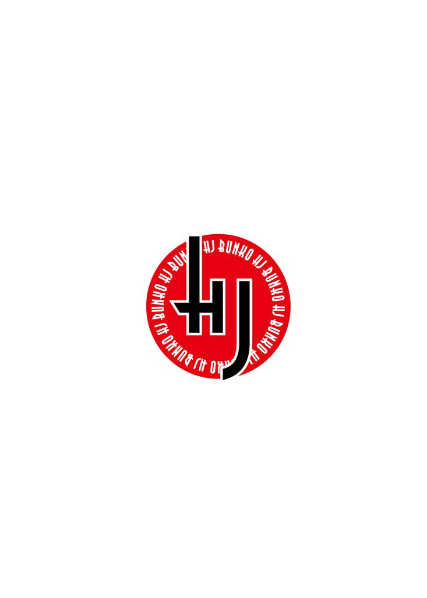
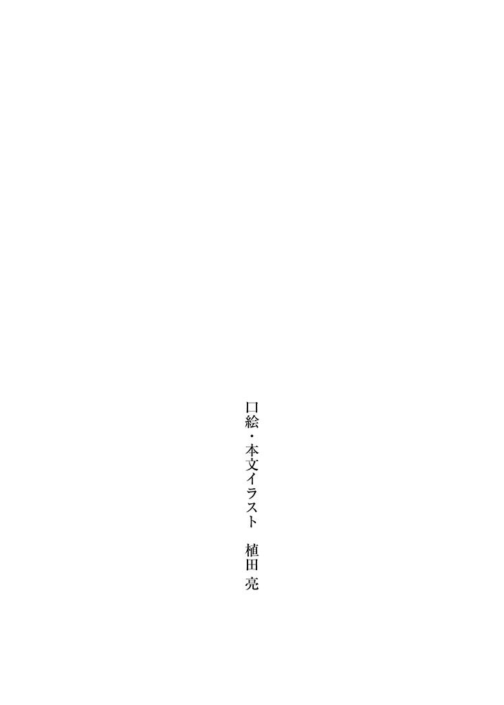

| アニスと不機嫌な魔法使い ２ (HJ文庫) | |
| 花房牧生 | |
| (2008) | |


「三秒だ」
その 恐 ろしげな声音を聞いて、アニスの背中は縮こまった。いつもは元気にはねている、ふたつに結ばれた赤毛も、今はどこか 頼 りなく垂れ下がっている。必死に机にかじりつき、ペンを 握 っているが、手は全く動いていない。
アニスは勉強中だった。 普 通 の学問ではなく、 魔 法 の、専門的な知識を身につけようとしていた。
「魔法使いになったんですもの、ちゃんと魔法のことを知りたいわ！」
と主張したのは、ちゃんとした魔法使いになろうという、 真 摯 な決意からだった。
目指す「 素 敵 な魔導師」になるためには 基 礎 的 な知識が不可欠であると、アニスなりに考えたのだった。そしてそれは決して 間 違 っていなかったため、
「だったら 俺 が教えてやる」
ということになったのだった。
そばに立っているのは、アニスとほとんど同い年くらいに見える 黒 髪 の少年、シドだ。
しかし若いのは見かけだけであり、その中身はアニスの何倍も年を取っているという。目つきが悪く、いつも 機 嫌 が悪そうで、口を開けばイヤミばかり言う、アニスの養い親である。
シドは丸めた紙を 肩 にぽんぽん当て、アニスが試験を終わらせるのを待っている。しかしアニスの手はすっかり止まっており、シドの 眉 間 のしわもいよいよ深まっていた。
彼 は親としても、また教師としても普通の存在ではなかった。
「あと三秒だ」
「待って......待って、あのね、この単語見たことないの」
必死に食い下がろうとするアニスだったが、
「二」
シドの心を動かすことはまるでできなかった。
「あの、三秒じゃなくて三時間くらい欲しいの......もっとじっくり」
「......一」
「きゃ───っ」
数え終わった 途 端 アニスは両耳を 塞 いで悲鳴を上げた。苦々しく見下ろしつつ、シドは丸めた紙でアニスの向かっている机を 叩 いた。
本当はアニスの頭を叩いてやりたかったシドだが、最近叩きすぎたら頭が悪くなるかもしれないと考え、自重しているのだった。
アニスは 涙 目 でペンを放り出している。
「 馬 鹿 かお前は。悲鳴上げて答えが出ると思ってるのか？ 無 駄 口 叩 いてる 暇 があったら考えろ！」
「だって、ひどいわ。 隣 にいられると、ちゃんと覚えてるはずの単語も出てこないのよ。それに、隣で三秒なんて数えられたら、できるものもできないわ！」
シドは必死に 訴 えるアニスを思い切り見下した視線を保ちながら、口だけ笑った。
「 違 うな」
「え？」
「できるものもできない、じゃなくて、できないものができないだけだ。お前の解答はすべて間違ってる。すぐに全部やり直せっ！」
うわーん、と泣き声を上げながらアニスは再び目の前の紙に 挑 戦 した。
そこに書かれている問題は全てシドによる手書きのものである。整然と並ぶ彼の文字は非常に美しく、まるで印刷されたもののようだ。比べてアニスの文字は丸っこく、所々 綴 りが 怪 しい。
普通の勉強であれば、育った教会できちんと学んだアニスだったが、魔法に関してはまだまだ初級の域を出ていない。専門的な単語は、たとえば「 魔 法 陣 」を「魔導陣」などと書いてしまったり、そこかしこに間違いがある。それもこれも、シドが教える魔法学が難しいせいだった。
シドが求めるレベルは魔法を教える学校があるとするなら中等以上のレベルであり、アニスは一気に初等から中等程度の内容を注ぎ込まれていたが、案の定苦しんでいた。
そもそも言語からしてまるで違う。アニスが持っている教科書は、現代語で書かれてはいたが、それは古代語で書かれるべき内容をかみ 砕 いて説明したものだった。回りくどく、難解で、一回説明されただけでは理解することはできなかった。
シドははじめは 丁 寧 に教えてくれるのだが、言葉が平易なだけで、内容が難しいことに変わりはない。しかも同じことを何度も 繰 り 返 して 訊 くと、みるみる機嫌が悪くなっていく。「それはさっき教えた」と言われるとアニスは 焦 り、よりいっそうどつぼにはまるのだった。
魔導師として一歩を 踏 み 出 したアニスだったが、シドは「無断で 呪 文 を唱えるな」と厳命していた。 竜 を 召 喚 するアニスの力は不安定であり、未知数であり、なにが起こるか知れたものではない。
とはいえシドの 監 視 のもと呪文を唱えても、今のところ成功したことはなかった。どれだけ 真 剣 に呪文を 詠 唱 しても、現れてくれる竜はいなかったのである。シドの飼っている 翼 竜 ノア以外は。
「この勉強は、召喚の役に立つのかしら......」
「役に立つ、立たないは関係ない。勉強はそういうもんじゃない」
それは分かってるけど......としょんぼりしつつアニスは目の前の答案を 眺 めた。見事に 零 点 である。アニスの育った教会では勉強もしっかり教わったのだが、こんな点を取ったことは一度もなかった。どちらかというと、できる方だったのである。
「私って、やっぱりダメな魔法使いね......」
「魔法使い 云 々 以前の問題だな。せめてその試験で使われてる単語は全て 完 璧 に覚えろ」
はあ、とため息をつくアニスだった。しっかり覚えたつもりで試験に 挑 んだのだが、全然至らなかった。
落ち込むアニスを見ていたシドが、なにか言おうとしたときだった。アニスは 突 然 、
「呼んでる......！」
と両手で机を叩き、立ち上がった。
「はあ？ 何言ってるんだ」
「呼んでるのよ、聞こえないの？ どうしたの、どこにいるの？」
アニスは 天 井 のあたりを見上げながら、問いかける。そして耳を 澄 ます仕草をする。もちろんシドにはなにも聞こえなかった。アニスの挙動は、 唐 突 であり、怪しかった。シドは 戸 惑 いながら、問う。
「何が呼んでるんだ」
「ノアよ！ ノアが、助けてって言ってる！」
アニスはしっかりして、落ち着いて、と呼びかける。
シドは突然のアニスの 奇 行 に 驚 きつつ、落ち着かせようとした。だがアニスは、止まらなかった。
「おい、何をしようとしてるんだ」
「ノア、分かったわっ」
「何が分かったって......おい、アニス！」
「私、ここにいるわ、ここに来ていいのよ」
「いいわけあるか！ やめろ、アニスッ！」
アニスは両手で耳を塞ぎ、目を閉じたまま、呪文を詠唱し始めた。
「ばっ......、ここどこだと思って......！」
シドがそこまで必死になるのは非常に 珍 しいことだった。敵がやってこようが、 魔 物 がやってこようが、 傲 岸 不 遜 にふんぞり返って 撃 退 殲 滅 する、それがシドのあり方である。しかしこのときばかりはふんぞり返っている場合ではなかった。
やめろと 怒 鳴 るシドの声は全く届かなかったらしく、
「エルパージャ......ノア！」
シドの前でアニスの詠唱は完成してしまった。次の 瞬 間 、アニスの呪文によって召喚されたノアが、時と場所を 超 えて、室内に現れてしまったのだった。
シドが万全の態勢を整えて呪文を唱えてみろと言ったときはほとんど成功しなかったくせに、このような 状 況 下ではしっかり成功させてしまうアニスだった。
ノアとは、シドが所有している深緑色の 皮 膚 をした翼竜の名前だ。おとなしく従順な 牝 竜で、背中に竜車を負い、空を飛ぶことができる。
シドの 書 斎 は 狭 くはなかったが、ノアが自由に出入りできるほどの 余 裕 があるわけではない。その上ノアはいつものようにおとなしく 伏 せることなく、ぶるぶると頭を 振 り 回 し始めた。人間の居住空間においてそれは、 巨 大 な 棍 棒 を振り回すようなものだった。
非常事態にあるノアは、必死になにかから 逃 れようとしていた。
頭が 本 棚 に 激 突 すると、どさどさと本が落ちてくる。痛かったかもしれないが、ノアは動転しているため、気づいていないようだった。 弾 き 飛 ばされた 円 卓 が転がり、 椅 子 が 壁 にぶつかる。 壺 が 床 に落ちて割れる。
その 猛 烈 さに、さすがのシドもとっさにアニスを 庇 うことしかできなかった。 腕 をアニスの首に回し、引き寄せる。
だがアニスは、シドの手を振り 払 ってノアに飛びついていったのだった。深緑の翼竜は、足下の少女を意に 介 する様子はない。アニスがつぶされる、とシドは心臓をつかまれたような顔をしたが、ノアは、
「落ち着いてえ───っ！」
と 絶 叫 するアニスの声に反応し、ぴたりと動きを止めた。全身の気力と筋力をふりしぼり、アニスの命じた言葉に従った。
シドは額から 汗 を流していた。
ふぅ、ふぅと 荒 い呼吸を繰り返しながら、ノアは黒曜石のような目を涙にうるませている。 硬 直 しているその身体をよくよく眺めると、たくさんの 紐 がくくりつけられていた。
アニスは目を見開き、
「だれがしたの、こんなこと！」
と大声を出した。そしてノアの顔に飛びついていく。
ノアの鼻先には、ぐるぐるに紐で巻かれた一 匹 のアヒルが結びつけられていた。ノアがいやがって暴れていた原因は、それらしかった。
「ビアンカ！」
アニスは一目でそのアヒルの正体を知ると、全力で飛びついて紐を外そうとした。 徹 底 的 にグルグル巻きにされており、アニスの力ではほどくことが出来なかったが、アニスに涙目で見つめられたシドが「どけ」とアニスを下がらせると、ナイフで紐の固まりを切ってアヒルを解放したのだった。
ノアはようやく安心したように腹を床につけて、座り込んだ。
「 大 丈 夫 ？ しっかりして！」
腕の中のアヒルに向かって、アニスは必死に語りかけた。はじめは気絶していたアヒルだったが、呼びかけに反応し目を開けた。
そしてアヒルは、
「ああああ、アニスちゃん......？」
と女の子の声で、 喋 ったのだった。
「そうよ、アニスよ！ ビアンカ、大丈夫？」
「ほんと？ ほんとにアニスちゃんなの......う、ううっ」
そしてアヒルはふらふらとアニスの腕から床に下りると、ぽんっと少女の姿に変わった。
「ビアンカ、大丈夫なの？」
変身能力の持ち主、金色の 髪 も 鮮 やかな少女ビアンカ......は、顔も服も 薄 汚 れ、ぼさぼさの髪に、 頬 は 泥 に 汚 れていた。
ビアンカはしばらくぼんやりと座り込んでいたが、何度も呼びかけられてアニスを見つめると、うるっと涙を 浮 かべた。そして両手を 伸 ばしてアニスに 抱 きつくと、
「うわあぁ～ん、 怖 かった。死ぬかと思ったああ」
と泣き声をあげたのだった。
「ビアンカ、もう大丈夫よ。私がいるわ！」
すがりつくビアンカの背中に手を回し、アニスは答える。感動的な光景だった。しかし二人は、
「お前らは、一体どういうつもりだ......？」
と背後から非常に冷たく恐ろしい声音で問われ、ぴったりと動きを止めた。ぎゅうっと手を握り合いながら、アニスはおそるおそる振り返った。
シドが 怒 っている。それはもう、完璧に 怒 り 狂 っている。全身から 魔 力 が立ち上っているのが、はっきりと分かる。
そしてシドの背後では身動きできないノアがうずくまっており、 崩 壊 した家具が転がっており、本棚から大量の本がこぼれ落ちている。 嵐 が 吹 き 荒 れたかのようだ。
「......ご、ごめんね？」
「ビアンカは悪くないわ！ 私が」
「違うわ、アニスちゃんは私を助けてくれたんだもの」
「そんなことない、ビアンカはどう見ても 被 害 者 だわ」
延々と続きそうな二人の会話は、
「いい加減にしやがれこの馬鹿どもが──っ！」
と史上最大の大声でぴったりと止まったのだった。
その後シドは部屋の中でろくに身動きできないノアを外に出すため、そして半分以上は怒りをぶつけるために、魔法で 己 の 塔 の壁をぶち 壊 した。
外に出たノアは 嬉 しそうに、犬のように野原の上を転がり回ったが、そんな幸せそうな様子をみて心 和 む余裕は、アニスとビアンカにはなかった。
壊れた塔の壁は、シドが「状態復帰」という魔法をかけることによって元に 戻 った。だが部屋の中は竜が暴れたら当然こうなるだろうという有様だった。家具がいくつか崩壊しており、床に落ちた本の量は千冊は下らないだろう。
惨 状 、といっていい有様だった。
ビアンカは 疲 れ 果 てており、椅子に座り込んでぐったりしている。
とりあえずお水を持ってくるわと言ったアニスはぱたぱた 廊 下 を走っていき、お 盆 に水とお 菓 子 を 載 せて、戻ってきた。
飛んでいった円卓を元に戻したシドは、背もたれが壊れた椅子に座って、 行 儀 悪く足を組んだ。
「これ飲んで」
とアニスにコップを 渡 され、ビアンカはお礼を言いつつ手を伸ばした。ごくごくと美味しそうに飲み、ふうう、と息をついた。
アニスは転がっていた椅子を持ってきた。
「で、ビアンカ。どうしてあんなことになったの？ ノアに 縛 られるなんて、もしかして 盗 賊 に 襲 われたの？」
腕 組 みし 眉 をひそめるシドの前で、ビアンカは首を振った。
「恐ろしい 奴 らだったわ......」
「 誰 だったの？」
「ジークの家の、子供たちよ」
真剣な声音でビアンカは告げた。
しかし真剣な声には相応しくないような内容にアニスはきょとんとし、シドは馬鹿にしたように「はぁ？」と言った。
「お前は、子供たちと楽しく遊んでたわけか」
「違うわっ！ 遊んでなんかないわっ、あいつら......あいつらは魔物みたいだったわ！
アヒルとみたら追いかけてきて、つかまえて、羽根 抜 いて、紐に結んで」
「美味しい晩ご飯になるところだったと」
「違うの、あいつらけなげなアヒルをもてあそぶつもりだったのよお！ どれだけ怖かったか......私、必死で 逃 げたのよ？ でも笑いながら追いかけてきて......殺されると思ったわ。いえ、もうほとんど死んでたわ。アニスちゃんが助けてくれなかったら」
「アヒルにならなければ良かったんじゃないか？」
シドが 指 摘 すると、ビアンカは、
「だって、なっちゃうんだもん......」
と 憂 い 顔 で首を振った。
「分かるわ。どうしても 我 慢 できないことってあるものね。私も、ノアに呼ばれたときはどうしても我慢できなくって」
アニスは「お前は我慢しろ！」と後ろから 髪 を引っ張られて口を閉じた。
ビアンカは水を一気にあおり、おかわりと言った。アニスが 慌 てて水差しから追加を注ぐ。
「あの、子供たちって一体なんなの？ ジークの兄弟なの？」
「ジークの家はね、 剣 術 の道場を開いているの。近所から剣を習ってる子供がいっぱい集まってたの」
「ジークの家は、都にあるのよね」
「そうよ。想像してたよりかなり大きかったわ。ノアに乗っていったから、空から見下ろして驚いたくらいよ」
ビアンカは、思い出すように遠い目をした。
数日前、ビアンカは剣士ジークと共にシドの塔を出発し、彼の家のある都に向かった。
ジークの家は都の 郊 外 の高台にある大きな 屋 敷 だった。古めかしい家屋のそばには、剣をもった少年たちが訓練している広場がある。
紐を引いてノアに方向を指示しつつ、ジークはあれは訓練場だと説明した。近くの少年たちを集めて、剣の 稽 古 をつけているらしい。ジークの祖父は都では知らないものがいないくらいの有名な軍人であり、家族も 皆 、軍人であるらしい。ジークはまだ学生の身分だったが、いずれは家族と同じ道に進むよう期待されているらしかった。
一番大きいのが家族の住んでいる建物で、そこにジークの祖父母、父母、 叔 父 に兄弟姉妹が住んでいるときいた。ビアンカは大家族なのね、とジークの胸元で 頷 いた。そのときのビアンカは、小鳥の姿をしていた。
「何日くらい 泊 まるの？」
「ジジイの顔見たらすぐに出て行きたいところだけどな......まあ、一日くらいは泊まらなきゃいけないだろうな」
「私、いきなりお 邪 魔 してもいいかしら」
「心配しなくても部屋はいくらでもあるぞ、ビアンカ。なんなら好きなだけ泊まっていけば......イテッ」
ビアンカに首をつつかれたジークだが、革ひもを 握 った両手ではなにもできなかった。
ノアがジークの屋敷の門の前に降り立った。都の真ん中ではできないことだが、ジークの屋敷は高台に立っており、周囲にはほとんど家屋がない。ノアが降り立つことができる場所はいくらでもあった。
ビアンカは地面に下り、少女の姿に戻った。
屋敷は高い 塀 に囲まれていたが、大きな木のそばに門があった。
ノアの紐を引きつつ、ジークとビアンカは塀に沿って歩いていく。そして 獅 子 の 彫 像 の立つ大きな門のそばに、三人の女が立っているのが見えた。
ビアンカは三人を見た途端、目を 離 せなくなった。 彼 女 たちはいずれも、まるで女神のような 豪 奢 な 容 貌 をした、黒髪の美女たちだった。みな男性並みに背が高い。その堂々とした 体 躯 を包んでいるのは、軽装ながらも明らかな軍装備だった。
「あ......姉貴」
と 漏 れたジークの声には 紛 れもない 恐 怖 があった。
ビアンカは首をかしげ、どうしたの、と問おうとした。
その言葉が出る前に、三人の姉たちはジークにつかつかと近づいてきた。ジークが 喉 の 奥 で、踏みつぶされたような悲鳴を上げる。その顔色は真っ青で、だらだらと額に汗までかいている。
「おかえりなさい、ジーク。待っていたわよ。あんた、なかなかうちに帰ってこないから顔を忘れるところだったわ......あら、わざわざそんな 間 抜 け 面 しなくても。あんたの顔は 素 で笑いが取れるのに」
と話しかけたのは、中央に立つ長姉エリンだった。
美しいが、しかしそれは優美とはほど遠い、 獲 物 を前にした獅子が見せる 瞳 のきらめきのような美だ。彼女はジークを、 捕 まえたネズミを見るようにのぞき込んだ。
「元気そうね。学校に行けないほどの 病 にかかっているとは、とても思えないわ。どうしたの？ 汗びっしょりね。でも、その汗は病気のせいではないわよねぇ？」
既 にジークに戦う意志はなかった。両手を上げたまま、
「あのさ、姉貴。えーと、久々に会えて嬉しいよ」
「まあ、心にもないこと言えるようになったのね。姉さん、嬉しいわ」
「ゆっくり話したいのは山々だけど、 俺 、まず 爺 さんの顔を見に行かないと。ほら、ぎっくり 腰 だっけ？ たいしたこと無いとか言ってたけど、年が年だし、心配してたんだよ。姉貴たちとの話は、 見 舞 いをした後で良いよな？」
長女の右側にいた次女ユーリが前に出て、あでやかな 笑 みを浮かべて首を振る。
「必要ございませんわ。顔を見せる必要はないと、伝言です」
獅子のような印象を 与 える長女と 違 い、まっすぐに伸ばされた髪といい丁寧な口調といい、まるで 研 ぎ澄まされた剣のような印象を与える次女だった。
「おじいさま、お元気ですもの。今日も 素 振 り千回、指立て伏せ五百回。屋敷の周りを走ってこられた後、お父様と 模 擬 試合なさって、二本も取っておられましたわ」
「ま、まさか......」
ジークは後ずさる。
三女ディーナが追いつめるように前に出、ジークの足を踏みつけた。
「ぐわっ」
「逃げても無ー駄」
きらきらした瞳で 無 邪 気 に 微笑 みながら、その力には 一 切 の 容 赦 もなかった。骨も 砕 けよというほどの 一 撃 を受けて、ジークは悲鳴も上げられなかった。三女は上の二人に比べて 小 柄 に見えたが、しかし実のところ一番の 怪 力 の持ち主だった。
「そう。そのまさかなの。ふらふらしてる 馬 鹿 息子の根性を 叩 き 直 せって、父上からも言われちゃったからぁ。さ、道場に行きましょっ」
ちなみにディーナは身長ほどの 槍 をもっている。 先 端 がとがった練習用の槍は、もしもジークが全力で逃げ出したら、後ろから 投 擲 されただろう。ディーナは槍の名人であり、驚くほど遠くから、的である人形の腹でも心臓でもどこでも見事に 貫 いてみせる。王族から 褒 め 称 えられて記念の 贈 り 物 をもらったことがあるくらいだ。ジークの身体などたやすいものだろう。
ちなみに長女は剣、次女は弓の名手である。
三人の美女たちには 掃 いて捨てるほどの信者がいるため、ジークがどこに逃げようと密告者が出て、 捕 獲 されてしまうだろう。
ジークは 猫 の子のように首根っこを捕まれ、 蹴 られ、張られ、踏まれ、ねじられ、捕まった。三姉妹の力はまるで 魔 法 のようで、ジークは必死に 抵 抗 しているが全く敵わなかった。
あまりの展開に口を 挟 むことができなかったビアンカだったが、ようやくジークが引きずられていこうとする段になって、
「あのう！」
と声をかけることができた。
振り 返 った長女エリンは、彼女の目の高さで誰かを探した。そして一切視線を下げることなく、向き直り、ジークを引きずって行ってしまった。
つまり、彼女と同じかそれ以上の背の高さでなければ、気づいてもらうことができなかったというわけだった。ジークよりも背が高い姉である。ビアンカには飛び上がっても不可能な話だった......。
「あのお姉さんたち、王都では戦 乙女 とか 軍 女神とか呼ばれてるらしいんだけど、ひどいわよね！ そもそもお 爺 様 が体調を 崩 されたっていうのは、ジークを 呼 び戻すための 罠 だったのよ。道場からはずーっとジークの悲鳴が聞こえていたわ。助けようにも、中に入ることができないし。なんとかしてジークと話をしようとしたんだけど......アヒルになったら子供たちに追いかけられるし。本当に命がけの家だったわ！」
「まあ......」
「でも、どうにかこうにか、 連 絡 を取ることはできたのよ。道場の入り口にいたお兄さんに 頼 み込んでね......」
「お願い、聞いてくれたの？」
「ええ。ジークのお姉さんの姿に変身してね。あんたどっか行きなさいっていうだけで、あのお兄さんすぐさまいなくなったわ。ようやくのことでジークと会えたんだけど...... 怪 我 だらけだったわ。ジークは、『俺は絶対シドの塔に戻る！ じゃないと殺される！』って言ってた。 一 緒 に 脱 出 しましょうって言ったんだけど、そのときはお姉さんが戻って来ちゃって......で、アヒルになって道場から脱出したんだけど......」
ビアンカはしおしおとうなだれた。
子供たちにからまれ、紐でグルグル巻きにされ、ノアの鼻面に縛り 付 けられただけならともかく、そのノアがアニスに助けを求め、アニスがそれに 応 えてノアを 召 喚 するとは、さすがに予想だにできなかったのである。
「ねぇ！ シド、なんとかしてジークと連絡とれない？」
アニスが名案を思いついたとばかりに笑顔になって問う。
シドは腕組みしたまま、
「連絡だけなら、いつでもとれる」
と答えた。
「本当っ？」
ビアンカは目を 輝 かせて顔を上げた。
「ああ、あいつは連絡を取るための魔法具を持たせているからな。あいつには魔法が使えないから、こちらから一方的に連絡をとるためのものになるが」
「だったらすぐに」
シドは 肩 をすくめ、
「数日後でいいだろう」
と言った。
「えええっ、そんなあ！」
「どうして？」
二人が声を 揃 えて 抗 議 すると、シドは肩をすくめた。
「根性がたたき直されてる 途 中 だ、邪魔したら悪いだろう？」
文句を言おうとした二人に、シドは肩をそびやかせた。
「だいたいお前たちも、ジークのことを心配してる場合じゃない」
そしてシドは指を立てて、背後の惨状を指し示した。
「これから片付けの時間だ。さっさと始めろ」
ビアンカがいくら 涙 混じりに 訴 えてもシドは無視し、二人はいやおうなく部屋の片付け作業を始めることになったのだった。
床 に転がっている蔵書の量は、あまりに大量だった。
ひっくり返っている本を閉じ、系統順に並べるために仕分け、めどがついたら 棚 に戻していく。 刺 激 的 とは言い 難 い作業だった。一日二日の作業では、終わりそうにない。
監 視 のつもりか、シドは離れた場所で本を読んでいる。床に転がっていた本を見て、こんなところにあったのか、と手にとって読み出したのである。アニスは文句を言おうとしたが、じろりとにらまれて退散した。
アニスは 黙 って本を並べ続けていたが、しばらくすると 沈 黙 の作業に 飽 きて、ビアンカに小声で話しかけだした。
「ほんとうにシドって、意地悪よね」
「うん。よく知ってた。知ってたけど......ここまでなんて！」
ビアンカはばん、と音を立てて本を棚に差し入れた。
ふたりはひとしきりシドのひどさについて語り合った。
「聞いて、ビアンカ。魔法の勉強に使ってるのは『 魔 導 事 始 』って本なんだけど、それがね、小難しくって、詩心ってものがなくて、一行読むだけでもとても疲れてしまう本なのよ」
「ああ、私も昔、その本使って勉強させられたことがあるわ。難しいわよねぇ。言葉のひとつひとつを辞書で調べたわ」
「だからね、シドに言ったの。こんな本で学ぶのはとても 辛 いって。もっとドラマティックで感動的な教科書はないかしらって。できれば物語仕立てで、登場人物が 冒 険 したりするといいかなって。だってあの本、文章がとってもイヤミったらしいし、勉強する気が起きないんですもの。......そしたらね」
「うん？」
「『その本を書いたのは俺だ。悪かったな』って言われたのよ！ びっくりしたわ。まさか書いた本人だなんて思わないもの、思いっきり悪口言っちゃった」
ビアンカは目をまん丸くし、
「ええええ、 嘘 ぉ」
と大きな声を上げた。慌てて二人はシドに視線をやるが、 彼 は少女たちの会話などには 一 切 関心がないようだ。読書に専念している。
二人ははじめは筆者順に並べていたのだが、時間がたつごとにだんだん仕事から 丁 寧 さが失われていった。アニスなどは、背表紙の色が 綺 麗 になるよう並べている。ビアンカも本の天地が逆になっていても、「いいか！」とそのままにしている。
「 魔 法 使 いはみんなあの本読んで勉強するのよ。あれはもう 普 通 の本じゃなくて、魔法使いの教科書って言った方がいいわ。シドが書いたなんて......あれ？ でも、作者名が違うんじゃない？ マギス・ムルタンって人が作者だったはずよ」
「作者はその人ってことになってるけど、実際はシドが書いたんですって。なんでもその人はシドがお世話になった方らしいの。それがかなり恩着せがましい人で、ちょっとした世話をしたのを良いことに、シドを色々こき使ったらしいわ。本を書かせたのもそのひとつで、シドはとても苦労したみたい」
「シドを、こき使う？ そんなことがありえるの？」
二人は肩を寄せ合い、ひそひそ声で会話を続ける。
「信じられないわ......」
アニスは 憂 いたっぷりにため息をつく。
「私、その人に会いたいわ。そしてシドをこき使うほどの実力を、 是 非 この目で拝んでみたいの。きっと胸がすくだろうと思うわ。きっと私には無理だと思うけれど、せめてその 手 腕 を見て、勉強したいと思うの」
「うーん......そうよね。難しいわよね、シドをこき使うなんて。だって今は、私たちがこき使われてるわけで......自分が悪いんだけど......」
本の片付けは、まだまだ終わりそうにない。片付ければ片付けるほど、次の本の山が 迫 ってくるように思えた。
「ああ、疲れたわね......」
「アニスちゃん、しんどそうね。体調悪いの？」
ビアンカが首をかしげて問うと、 金 髪 がさらりと流れた。アニスは困ったように微笑んで、手を 振 った。
「違うの。なんだか最近夢見が悪くて。昨日も夜中に目が覚めちゃって、そのまま朝まで 眠 れなくて......」
「夢見が？」
ビアンカは 眉 根 を寄せる。
魔法使いにとって、夢は重要な意味を持つ。本来ならば人の身に負いきれるものではない力が、夢という窓口を借りて人に語りかけることは往々にしてあることだ。
「どんな夢を見たの......？」
「シドと同じことをきくのねぇ」
「それはそうよ！ 夢って、結構いろんなことが分かるのよ。まさか予知夢じゃないにしても、体調とか、精神状態とかも」
「なんだかうまく説明できないんだけど......なんだか暗くて 狭 い場所から、呼ばれている感じなの。小さな声がずっと聞こえてる。私の名前を、ずっと 繰 り返してる。でも、よく分からないの......ノアだったのかなって思ったのよ。私を 喚 んでくださいって、遠くで呼んでたときの感じに似てる。でもあれは、ノアじゃない」
「だれかがアニスちゃんを呼んでるの？」
「うん......でも、分からない。このところずっとその夢なの」
アニスは遠くをみる 眼 差 しになった。
「そんなに言うならこちらから呼んであげるわって、思うんだけど。でも、だめなの。......足りないから」
「何が、足りないの？」
アニスの右目には、魔導師としての印が刻まれている。だが、眼球にあるそれは他人からは存在すら判別できない。どんな形をしているかも、分からない。
「喚ぶための、 鍵 ......」
「お前ら、なにサボってるんだ！」
遠くから声が飛んでくる。
慌てて二人はすっかり止まっていた作業を再開させた。
「ううう。いつになったらジークに会えるのかしら......ジーク、 今 頃 怪 我 だらけで 倒 れてるんじゃないかしら」
「ジークのことは、あとで一緒にお願いしましょ！ 必死に頼んだら、きっと最後にはきいてくれるわよ。一日かかるかもしれないけど。二日かかるかもしれないけど。もしかしたら、三日かもしれないけど」
そうかしら......とビアンカはうなだれる。アニスは必死にビアンカを元気づけようとした。
「落ち込んでいても、事態は変わらないわ。シドは 頑 固 だし」
「そうよね......」
「ここはひとつ、ご飯を食べて体力を回復すべきだわ！ 今日の晩ご飯はシチューなの。最近のご飯は全部私が作ってるのよ。ビアンカが留守の間に、ちょっとは上手くなったと思うわ。それ食べて、今日はゆっくり休んで、明日からシドを説得しましょう！」
ため息をついていたビアンカだが、アニスの言葉にようやく 笑 顔 を見せた。
「そうよね。うん、そうするわ！」
そしてその晩、 食 卓 にはアニスの力作である白いシチューがテーブルに並んだ。
ビアンカが外出する前は長テーブルだったが、さすがにふたりの生活では必要ないということになったのか、四人が囲める程度の丸いテーブルに変わっている。上に置かれた小さな緑色の 花 瓶 に、アニスが 摘 んできたらしいスーリエの花が 飾 られている。
アニスはほくほくした笑顔でパンの 載 った大皿を中央に配置し、シチューの皿をそれぞれの前に置いた。
「わあ、美味しそう！」
良い 香 りが鼻をくすぐる。白イモと 鶏 肉 のシチューだった。
ビアンカは満面の 笑 みでいただきまーす！ とスプーンを手に取った。シドも、静かにスプーンを口の前に運んだ。
アニスは「どう？」と二人の様子を見守っている。
ビアンカは、綺麗な花の形にくりぬかれたニンジンに気を引かれた。まるで雪の中に 咲 く花のように見える。この皿におけるアニスの 狙 いもまさにそこにあるだろう。 鮮 やかな色がとても美味しそうだ。まずはそれをスプーンですくい、口に運ぶ。
次の 瞬 間 、ビアンカはぴたりと動きを止めた。
それは、とても個性的な味がした。 匂 いから想像する味と 隔 たりのある、なんとも変わった味だった。なによりそのニンジンは歯ごたえが、良すぎた。
ビアンカはシドに視線をやる。そちらを気にせずにはいられなかった。
案の定シドは、全身から 怒 気 を立ち上らせていた。
「お前......、これはなんのつもりだ」
「え？ そのシチューはね、森の奥に住んでいる一家が雪の降る中」
「くだらない解説はいらん。俺が聞いてるのは、上に載っているニンジンがなんで生なのか、ということだ」
アニスは、ああ、と今気づいたようにぽんと手を打った。
「綺麗な花の形でしょ？ 煮 くずれると困るから、そのまま置いたの。 見 栄 え重視で」
「見栄えの前に重視すべきものがあるだろうがこの間抜けが！」
大声を出して 叱 りつけられて、アニスは首を縮めた。
ビアンカは半泣きでシチューを口に運びつつ、
「きっとこれ栄養たっぷりね！ アニスちゃん、そこまで気を 遣 ってくれてるのね！」
と必死で 援 護 するも、シドはそれをあっさり無視した。
「てめぇときた日には、魔法も 中 途 半 端 、勉強も中途半端、命じたこともできない、料理も適当、一体なにをどう教えたらいいんだ？ 一人前なのはたわ言だけか！」
「どうしてそんなに 怒 るの？ 最近、ちょっと怒りすぎだと思うの。そんなに怒ってばかりだときっと身体に悪いわ」
「ずれたことぬかすのも 大 概 にしろ！ お前の 抜 けっぷりを 指 摘 してるんだ、なにひとつ一人前にこなせねぇんだったら、せめて話を聞け！」
「そこまで言うことないじゃない！ なにひとつできないなんてこと、ないわ」
「じゃあ、」
とシドは 残 酷 な笑みをたたえる。目は笑っていない。
「なにかひとつでも満足にできるものがあるなら、言ってみろ」
う......、とアニスは一歩下がった。シドは本気で怒っており、普通に言い訳しただけではまるで納得してもらえないだろう。
だがそのまましおしおとうなだれるアニスではなかった。
「その......勉強がちょっと 遅 れてることは認めるわ、だって難しいし、知らないことばかりなんですもの。でも、そうだわ、買い物はちゃんとできるわ！ 私には絶対買い物に行かせないって言ってたけど」
この料理の材料はすべて、シドが調達してきたものだった。アニスは留守番を命じられ、抗議するも認めてもらえず、おとなしく 塔 で待っていたのだった。
「ご飯の買い物くらい、できるわ」
「ほう」
シドは 腕 組 みし、アニスを思い切り見下した。
「じゃあ、行ってこい。明日、銀貨一枚 渡 してやるよ。ヴェルグリアの市場まで、一人で行ってこい」
アニスはきりっとした 眼 差 しを返し、 頷 いた。
「わ......分かったわ！ やるわ、私」
「私も一緒に......」
「てめぇは留守番だ。だいたい、 本 棚 を元に 戻 す仕事があるだろうが」
冷たい眼光を浴びて、ビアンカは小さくなった。
アニスは 闘 志 に燃えているが、しかしビアンカから見て、それははなはだ不安すぎる闘志だった......。
おかしいわ、とアニスは歩きながら考えた。
空はいい天気であり、太陽光を浴びた緑がきらきらと光っている。川沿いに歩きながらまっすぐヴェルグリアの町を目指している。
風を受けてくるくる回る風車の姿がとても牧歌的だが、アニスは風景よりも 悩 むことに集中していた。
シドの塔に残ることを決めた日から、 素 敵 な親子生活が始まるはずだった。
なのに、シドときたら毎日毎日なにかしら怒るネタを見つけてはアニスを 怒 鳴 っている。
引き取られたばかりの 頃 は、あの少年の姿をした養父に 戸 惑 いもあったし、なぜ引き取られたかも分からなかったため、生活は不協和音を奏でていた。
残ることを決断した後は、さすがに今までよりマシになるだろうと思っていた。しかし、もしかしたら日々悪くなっているのではないだろうか？ 昨日は勉強で怒られ、ノアの召喚で怒られ、食事で怒られた。昨日怒られた数は新記録ではあったが、シドに一度も怒られない日は今までのところ、一日たりともなかった。
そもそもあそこからケチがついたんだわ、とアニスはしわのよりかかった 眉 間 を指で 撫 でながら、思い出した。
ジークが里帰りし、ビアンカがそれについて行ってから、アニスはシドとふたりきりの生活を過ごすことになったのだが......。
「ねぇねぇ、あなたのこと、なんて呼べばいいかちゃんと決めましょ」
とほくほく顔のアニスが手にしている紙束を見て、シドは眉間のしわをより深くした。
「なんだそれは」
「あのね。私ね、色々と考えてみたんだけど......えっとね、まず」
言いたいことをまとめずに口にするアニスの話し方にイラッとしたらしい、シドはアニスの手にある紙の束を取り上げ、視線を落とした。
文字を目で追うシドの表情は、みるみる険しいものになっていく。
「なんだこりゃあ......？」
「乱暴なんだから！ あのね、あのね、 詳 しく説明したいんだけど、聞いてくれるかしら。まず最初に、一行目を見て欲しいの。一番上の」
そこには、アニスの考えたシドの呼び方がたくさん並んでいた。シドはアニスの口の前に手をかざし、長々と始まりそうな解説を止めた。アニスは目をぱちぱちさせた。
そしてシドは、深呼吸し、彼にとって 恐 ろしい言葉が並んでいる紙に意識を戻した。
「参考までに聞きたいんだが、この父上様というのは？」
「それは一番無難な呼び方ね。少し 距 離 を感じる呼び方がちょっと悲しくて、胸に迫るわよね」
「......閣下、というのは？」
「それはわりとオススメなの。貴族じゃないのにそんな呼び方をするのは良くないかも知れないけど、忠誠を 誓 う感じがいいかと思って。ちょっと気高いわよね」
「忠誠みたいな高級なものがお前の中にあるとは思えないが......それはともかく、この、わざわざ丸を付けてる、『星くずの君』というのは......？」
シドの声がこころなしか 震 えていることに、アニスは全く気づかなかった。満面の 笑 みをシドに近づける。
「あのね、それが一番良いかなって思っていたの。 謎 めいた感じを演出してみたのよ。とってもドラマティック......」
「お前はそんな 珍 妙 な呼ばれ方をする側の気持ちを考えたことがあるのかぁー！」
耐 えきれずにシドは紙束を放り投げた。
胴 間 声 で怒鳴られたアニスは目を見開く。
「ひどいわ、どうして捨てちゃうの！」
捨てられた紙に手を 伸 ばし、必死で拾い集める。
「いいか......、その中のどの呼び方も 俺 は気に入らない。 一 切 認めない。そんなふざけた呼び方をされるくらいなら、一生口をきかない方がマシだ」
「そう言われても困るわ！」
「困ってるのは俺だ！」
怒鳴り合う二人は親子どころか、まるで兄妹のようにも見えた。
「星くずの君っていう呼び方に 憧 れていたのよ、昔読んだ本の中にね、 孤 児 の女の子を育てる素敵なおじいさまの」
「説明は不要だと言った。黙れ」
「だったらなんて呼べばいいの？ 百万歩 譲 って、父上様にすればいい？」
「父親呼ばわりはするなと言っただろうが！」
「............」
そのときのアニスの傷ついた顔を見て、シドは 己 の失言に気がついたらしく、 押 し 黙 った。
アニスは 唇 を 噛 み、必死に泣き出さないようにしていたが、もし背中を 叩 かれたら両目から 涙 がぼろりとこぼれ落ちただろう。
「そ...っ、そんなに私のこと、きらい......？」
シドはいらいらと頭をかき、言葉に迷っている様子だった。アニスは顔を真っ赤にし、しゃくりあげる。
「いいから、泣くな」
「よく、ないっ。わ、わたし......ポーラ様の教会に、戻っ、た方が」
「 違 う。そうじゃない」
シドは 靴 の底で 床 を叩いた。アニスはびくっと 肩 を震わせ、じんわり涙を流した。
「誤解するな、お前のせいじゃない」
伸びてきた手が、アニスの両目を 塞 いだ。少しかすれたシドの声が近くで聞こえた。
「単に、俺が父親というものが好きじゃないだけだ。だから、お前のせいじゃない。泣くな」
「............あなたが、お父様のことを好きじゃないから？ だから、父と呼ばれたくないの？」
布の 感 触 がした。シドがアニスの涙を 拭 いてくれていた。
「いやなことを思い出す。だから、父とは呼ばれたくない」
静かな声だった。
目を開けると、シドの顔がそばにあった。確かに、父と呼ぶには不似合いな存在かも知れない。どう見ても、アニスとシドは親子には見えない。見えるはずがない。
緋 色 の目がアニスを見つめている。
その色は、いまだにアニスをどきりとさせる。
「お父様と、 喧 嘩 したの？」
「ああ。大喧嘩をな」
「分かった。あなたを父とは呼ばないわ。......でも、だったらやっぱり星くずの君が一番いいんじゃないかしら......」
べしっ、とアニスの顔に投げつけられたのは、涙を拭いてくれたらしい白い布だった。
「もうっ、乱暴ねぇ！」
「お前が 馬 鹿 なことばかり言うからだろうが！」
アニスは 一 生 懸 命 星くずの君という呼び方が 素 晴 らしい事を 訴 えたが、シドはどうあっても頷かず、単に「シド」と呼ばせることにしたのだった。アニスは 渋 っていたが、そうでなければ返事をしないと言われ、最後には頷いたのだった。
「そうだわ、あれが悪かったんだわ」
とアニスは独り言を言った。歩きながら一人腕組みをしてぶつぶつ言うのはかなり 怪 しい姿だったが、考えに夢中なアニスは気づいていない。
「星くずの君が 駄 目 なら、閣下が良かったのに。ぴったりだったのに。......ああ、でも仕方ないわ。シドは短気で怒りん 坊 なんだから、ちゃんとこちらが大人になって、 余 裕 ある態度で接しないといけないわよね。私、 頑 張 らなきゃ」
アニスはシドがきいたら目をむいて怒るようなことを言いながら、ヴェルグリアの町の門をくぐった。
この前 魔 物 に 襲 われて 崩 壊 した町並みは、今ではほとんど復興している。結構な数の建物が 崩 れたり 壊 れたりしていたはずだが、 既 に新しい建物が建っていた。人の出入りが活発で、商業が盛んなヴェルグリアの町だからこそのことだった。魔物が現れた原因を知っているアニスには、ほっとさせられることだった。
人目につかないところではまだ壊れたままの建物があったが、それらはほとんど目立たない。
中央通りから東西にのびたエルナ通りには、出店が並んでいる。元気のよい呼び声は、出張してきた農家や商人たちが一生懸命客を呼ぶものだ。果物や野菜や、ときに衣服、身を飾る 装 飾 品 なども並んでいる。
アニスは一人歩きながら、なにを買うか考えた。
銀貨一枚あれば 購 えないものはそうそうないだろう。今日の晩ご飯は何にしようかと考える。肉も、野菜も、 香 辛 料 からパンにお 菓 子 まで、 完 璧 に買って帰るつもりだ。
ついでに、きっとお金は余るだろうから、余ったお金で好きなものを買うと良いと言われた。どうせくだらないものを買うんだろうがな、と付け加えられ、
「くだらないものなんて買わないわ。見てらっしゃい、絶対 驚 かせてやるんだから！ 驚いたら 後 悔 して、それから私に謝るといいんだわ！」
と宣言してやってきたのだった。
今のところは晩のメニューすら考えていないが、材料を見ていたらきっといい案が 浮 かぶだろう。出店には今日 穫 り立ての野菜に、果物がたくさん並んでいる。 珍 しい調味料に、キノコ、ぶら下げられている動物の中には見たことのない種類のものもある。
今日の食卓でシドに敗北宣言をさせてみせるわ、とアニスは一人頷いた。
食卓といえば、テーブルの上に置く花瓶。あの形はちょっとテーブルに合っていなかった。素敵な花瓶を買って帰るのはどうだろうか、とアニスは思いついた。スーリエの花を 挿 すのに相応しい、 素 朴 な丸底の 薄 い緑色をした花瓶がいいかもしれない。後で見に行かなければ......とアニスはふと立ち止まった。後ろで商人の男がうわっと声を上げてたたらを 踏 んだが、考えに熱中しているアニスは気づかなかった。
もし、この買い物が失敗しようものなら。
シドが悪人っぽく笑っている姿が想像つく。きっと、アニスが落ち込んで帰ったところに、まるで傷口に塩を 塗 るような残酷な口調で、
「だから言っただろうが、この馬鹿が。半人前のくせに調子に乗るからこんな目に 遭 うんだよ、 間 抜 け。分かったらおとなしく、 魔 法 を勉強するんだな。ただしお前の 召 喚 、あれは使い物にならない。魔法使いを名乗りたければ俺様のような 炎 の魔法を使えるようになってからにするんだな、 凡 人 ！」
なんて言うに決まっているのだ。
偉 そうに、ひどいわ！ とアニスは己の想像で 真 剣 に腹を立てた。ちなみに実際のシドよりもアニスの想像のシドの方が、悪人度が高くなっている。
確かに、アニスが 唯 一 使える召喚魔法には、ちょっと怪しいところがある。
一度目はとんでもないものを呼び出してしまったし、二回目以降はなにも呼び出せないに等しい。ノアは仲良しだからこたえてくれるのだが、他の 竜 からはなんの応答もない。呼びかけができているのかも、それが通じているのかどうかも、全然分からない状態だ。
そんな状態で魔導師を名乗るな、とシドには怒られたのだった。それもまた、魔法の勉強をしたいという理由の一つになった。勉強をすればするほど、あまり魔法に向いていないことが判明していくのだが......。
だがいつかきっと、ちゃんと自分の魔法を使えるようになる。それだけでなく、「現代魔法」も使いこなせるようになってみせる......と考えていたところで、アニスはふと、泣き声が聞こえることに気がついた。
昨日のように、ノアが呼んでいるのかと思ったが、違う。これは人のものだ。
耳を 澄 ましながら、声のする方向に足のつま先を向ける。
建物と建物の間に、 通 り抜けるには少し 狭 すぎる、子供向けの通路のような空間があった。通りを行く人々は、そんな 隙 間 には注意を 払 わない。アニスは目をこらしてそちらをのぞいた。
暗く 陰 になっているその場所で、しくしく泣いている少年の姿を見つけた。
アニスはおずおずと、
「どうしたの......？」
と声をかけた。すると相手は、びくっと肩を震わせて視線をあげた。
薄い緑色の目をした、そばかすのある少年だった。頭を布で巻いているが、強そうな茶色い 髪 がぴょんぴょん 飛 び 跳 ねている。衣服は 彼 には少し大きくて、ぶかぶかしている。
「ううう、う。う～......」
「泣いていたら分からないわ？ どうしたの。どこか痛いの？」
アニスは 優 しく語りかける。すると少年は、
「置いて......いかれちゃう......」
としゃくりあげながらようやくそう答えた。
少年を、足下に置いてある箱に座らせ、アニスは一生懸命語りかけた。
「どうしたの？ 誰 に置いて行かれるの？」
「う......うえええ」
少年はアニスの言葉を聞いて泣き出し、アニスの 腰 に手を回して号泣を始めた。
アニスはびっくりしながらもその背中を撫で、 辛 抱 強 く、
「泣いていたら分からないわ。どうか教えて？」
と問いかけた。
すると少年はたどたどしく、説明を始めた。
「ぼく......孤児なんです。本当ならどこかの教会に、預けられるんだけど......その人が、ぼくを引き取ってくれて......うっ。......で、旅をしてたんです」
「旅を？ まあ、大変だったわね。あなた達は、商人なの？」
「............」
少年が 瞬 きをすると、涙が続けざまにぼろぼろとこぼれた。 喉 をひっくひっく鳴らしながら語るので、少年の話はともすれば意味が取れないほどだったが、アニスはじっくりと注意深く少年の言葉を聞いていた。
「......で、国境から、ずっと......街道を歩いて、来た......んですっ、この町にも、昨日来たんです。でも、置いていかれちゃうんです......ぼく、捨てられるんです......っ、団にはお金が足りないからって、 剣 も使えないゴクツブシはこれ以上連れて行けないって。だからこの町の、教会に......う、ううっ」
「まあ......」
アニスは痛ましげに口を押さえた。
少年は顔中涙で 濡 らしながら、最後にはおうおうと号泣し、アニスにすがりついた。
「うう、うう。でも、置いていかないでくださいってお願いしたんです......そ、そしたら。これを売ってお金を 儲 けて来いって......それができたら、連れてってやる、って」
これ？ と首をかしげるアニスに、少年の指さしたのは、足下の箱だった。
おそらく酒屋で使われているものだろう。 瓶 を八本ほどつめることができる大きさだ。重さにもよるが、アニスならば両手で 普 通 に 抱 えることができるだろう。
「この箱を売るの？」
「ずびっ......ち、ちが、この中身......です」
そして少年は 洟 をすすりながら箱から降り、 蓋 を開けた。
「こんなの、う、売れるはずないのに。ぼく......捨てられ......うっ......」
箱の中身を見て、アニスはしばらく言葉を失っていた。さすがにこれはない、とアニスですら思う。
少年はずるずると鼻をならしている。目が真っ赤に 腫 れ 上 がっている。どれほどの間、一人で泣いていたのだろうか。
アニスはしばらく目を閉じて考え込むと、うん、と意を決したように頷いた。
そして両手を伸ばし、少年の 両 肩 を力づけるようにぽんと叩いた。
「泣かなくても、 大 丈 夫 よ！」
ビアンカはうーん、と背中を伸ばした。床の本はようやく三割ほど片付いたところだ。シドは相変わらず机に向かい、本を読んでいる。
「ねぇ、シド。アニスちゃんを一人で行かせたのは、構わなかったの？」
シドはじろりとビアンカに視線をやる。
「危ない目に遭うかも知れないじゃない」
「あいつには、移動石を持たせている」
ビアンカは瞬きした。
移動石とは、シドの 塔 を好きな場所に移動させるために用いていた夫婦石のことだ。 対 になった妻石と夫石が 互 いに呼び合う効果をもっている。アニスは妻石をもっており、いざというときは特定の 呪 文 を唱えれば、シドが持っている夫石のところに移動することができるというわけだった。
ちなみにそこらの貴族程度の財力では購うことができないほど、高額である。シドはそれを三対も所有している。
「へぇ～、そう」
「なんだそのにやけた 面 は」
「やっぱり大事にしてるんだ、アニスちゃんのこと。口開けば文句ばっかり言ってるみたいだけど......たまには 素 直 になってみたら、お父様？」
「ふざけるなアヒル女。燃やすぞ」
そんな言葉が返ってきても、ビアンカはにまにま笑ったままだった。
「ねえシド。アニスちゃん、ご飯の材料と、余ったお金で好きなものを買ってくるのよね。何を買ってくるのかしら。......ちょっと楽しみね」
ふん、とシドは鼻を鳴らした。
「どうせくだらねぇものだろ」
ビアンカはぶんぶん首を 振 り、両手を 祈 るように組み合わせた。
「私ね、アニスちゃんはドレスを買ってくると思うの！ 可愛いフリルのワンピースと、 帽 子 。上品な 靴 下 に、リボンのついた赤い靴！ レースのハンカチに、お花のコロン。ブローチも素敵よね。あああ、 一 緒 に買いに行きたかったなあぁ......」
うらめしげな視線を受けて、シドは 口 の 端 でせせら笑う。
「服じゃねぇだろ。もっと役に立たない、つまらないものを買ってくるに決まってる。 花 瓶 とか、絵とか、珍妙な 趣 味 のやつを。記念になるから、とか言ってな」
「どうしてそうひどい予想するのよ！」
ビアンカはつかつかと歩み寄り、シドの読んでいる本に、音を立てて右手を置いた。
「あのねぇ、お花は水をやらないと 枯 れちゃうの！ 女の子には優しい言葉をかけないと、すねちゃうの！ あんたのやり方じゃ、伝わるものも伝わらないわよ。もう少し優しい言葉をかけてみたらどうなのよ」
「俺の 被 害 を知ったら、同じ口は叩けないと思うがな、アヒル女」
「なによそれ！ ......ん？ なんか、そろそろアニスちゃん、帰ってて良さそうな時間じゃない？」
窓の外から見える空は、夕焼け色に染まっていた。ビアンカが本の片付けに、シドが読書に集中している間に、結構な時間が過ぎていたらしい。
指 摘 されて気づいたシドは、立ち上がりながら、なにやってるんだあのノロマ、と 呟 いた。
そのときノアの鳴いている声がシドの 書 斎 まで届いた。異状を訴えるものではない。アニスがご飯を運ぶときなどに、喜びのあまり 漏 れる声だ。
ビアンカが、
「アニスちゃん帰ってきたのかもー」
と 駆 けていき、シドが後に続いた。
塔の入り口の広間で、アニスは必死でノアに鳴きやむよう、説得していた。
しかしノアは 嬉 しそうに鼻をならすのをやめなかった。そろそろ夕食の時間だ。ジークが 戻 ってくるまで、ノアのごはんを準備するとシドに 請 け合ったのは、アニスだった。
ノアの 寝 床 のすぐそばにはジーク 謹 製 の 祭 壇 があり、ノアの産んだ卵が 鎮 座 している。
「アニスちゃ～ん！ 帰ってたなら早く言ってよ」
階段を駆け 下 りてくるビアンカの声を聞いて、アニスはびくりと肩を震わせた。
「ノアっ、私を早く 隠 して」
両手を 握 って訴えるが、ノアは嬉しそうな喉声を上げるばかり。ビアンカはアニスのそばに着地し、青ざめたアニスの顔をのぞき込んだ。
「どうしたの？」
「ああっ、もうだめ」
「なにやってるんだお前」
とシドの声を聞いて、アニスはああああ、と床に座り込んだ。ビアンカはぎょっとし、シドに視線をやった。そばまでやって来たシドは、重ねてアニスに問いかける。
「なんだ。何を隠してる？ その箱か？」
「どうしたのアニスちゃん」
アニスは箱を抱え込み、涙目で首を振っていたが、
「どけ」
とシドはあごをしゃくった。それでも箱にすがりついて 離 れないアニスを、シドは実力行使で、まるで 猫 の子のように引きはがした。
「乱暴な真似しないでよシド！ アニスちゃん、顔色が悪いわよ。買い物はどうしたの？ ドレスはどこ？」
「ううう......」
シドが箱の蓋に手をかける。アニスは止めようとしたが、シドはアニスの顔面に手を当てて押しのけた。
「やめてええ」
と 叫 ぶアニスの声を聞きながら、 容 赦 なくシドは蓋を開けた。
そして、箱の中にあるものを見て、シドは絶句した。ビアンカがシドの背後からそれをのぞき込む。アニスは両手で顔を 覆 っている。
ビアンカは人差し指を唇に当て、首をかしげた。
「これ......ドングリ？」
箱の中には、これでもかというほどに、先のとがった茶色い木の実が 詰 め込まれていた。何百 粒 、いや千もあるかもしれない。
アニスは顔を覆ったまま泣き声を上げた。
「あのね......あの、このドングリの山には、悲しい話がまつわっているの。この箱の持ち主の男の子の話をきいたら、きっとみんな同情せざるを得なかったはずだわ。あのね、その男の子は」
「 騙 されたな」
シドは深く長いため息をついた。アニスはぱっとシドに目線をやると、おさげを振り 乱 すようにして首を振った。
「そんな、違うわ！ 騙すなんて、あの男の子がそんなことするわけないわ。だって、泣いていたのよ？ これを売ってこなければ捨てられるんだって」
「今ごろは腹を抱えて大笑いしてるだろうさ。いいカモだったってな。よりにもよって、こんなものに銀貨一枚も払いやがって」
「そんなことないっ。感謝するって、おねえさんは恩人だって、泣いていたのよ。感激してくれていたわ」
シドは重々しく首を振った。
「まともに買い物してくるとは思わなかったが......想像以下だ。底辺の下の最下層のまだ下だ。 詐 欺 にあったんだよ、お前は」
ビアンカはドングリの中に手を突っ込んで 探 るが、中にはドングリ以外のものはなにひとつ入っていなかった。ひたすら、ドングリである。ひどい箱だった。
「詐欺じゃないわ！ だってその子、ちゃんとした組織の一員だって言っていたわ。国境から王都を越えて、旅をしてきたんですって」
アニスが必死に言葉を連ねれば連ねるほど、内容は怪しくなり、シドの視線が冷たくなっていく。 耐 えきれずにアニスは余計に言葉を重ねるが、被害の 上 塗 りだった。
そして訴えるアニスの背中にノアが後ろから 鼻 面 を 押 し 付 けてきた。ごはんをくれと 甘 えているのであり、もちろん全力ではなかったが、アニスは前に転びそうになった。あわててビアンカがアニスの 腕 を取る。
「話はよく分かった。そのへんにしておけ」
もはや話をする気をなくしたシドがきびすを返し、階段を上っていこうとする。
それでもアニスは必死に言葉を続けた。
「その子、おねえさんには教えるよって、説明してくれたの。なんだか、なんとかっていう偉い人の命令で、ディルミータ？ を追ってる、政治的な秘密組織なんですって。だから、その子はしっかりした身元の子......ううん、ちょっと怪しかったけど、でも、ちゃんとした考え方の持ち主だったように思うの......いえ、たとえ騙すつもりがあったとしても心底悪くてそうしたわけじゃなくて」
立ち去ろうとしたシドの足がぴたりと止まったことに、アニスは逆に驚いた。
シドは振り 返 り、真顔でアニスを見つめていた。その真剣さに、 隣 のビアンカも目を見張る。
「ディルミータといったか、今」
視線を受けてアニスはたじろいだ。
「え、ええ。あの子、そう言ってたわ」
「そいつは組織名は言わなかったのか」
「............聞いたような気が、するんだけど......あの、 内 緒 話 だったから声が小さくて。なんだったかしら......ジナ......うう、ナス......？ 違 うわ、えーと」
アニスが必死に思い出そうとしているのを見、シドは無言になると、今度は振り返らずに行ってしまった。
取り残されたアニスは、自分の腕を 掴 んでいるビアンカを見つめた。
「どうしよう、ビアンカ。シド、ほんとに 怒 っちゃったみたい。どうしたらいいと思う？」
「その......アニスちゃん、まずはじめに」
ビアンカはアニスの背後のノアを指さした。ノアは黒い目をきらきらさせて、必死にアニスを見つめている。 一 生 懸 命 ここにいます、ここにいます、と 訴 えるように喉から声が漏れている。
「ごはんをあげたらいいと思うわ」
夜の塔は、静かでどこか 恐 ろしい。
アニスはビアンカの部屋を 訪 ね、話をしようと 誘 うつもりだったのだが、ビアンカはすっかり 熟 睡 しているらしく、どれだけ 扉 を 叩 いても返事がなかった。 本 棚 の片付けで、 疲 れているのだろう。
暗がりの 廊 下 を歩いて、 玄 関 の広間まで来た。 壁 のところに、アニスを絶望的な気持ちにさせるドングリ箱がそのまま置いてある。
ぺと、と鼻面をなでるとノアはきゅう、と鳴いてアニスにくっついてきた。アニスにはノアが何を考えているか分かる。竜はいつもアニスに語りかけているからだ。かれらの言葉は 穏 やかで明快で、アニスにまっすぐ伝わってくる。
おなかいっぱいのノアは、アニスが来てくれて嬉しいと思っている。それが嬉しくて、アニスはノアに 抱 きついた。
ノアの熱を感じながら、アニスは扉に視線をやった。
玄関の大 扉 を開けたその先には、白い花の 咲 く 丘 ではなくて、 怪 しげな生き物の 潜 む、 暗 闇 の平原があるような気がする。もちろん、シドはその場所に移動する 仕 掛 けを解いてしまったので、おそらく二度とあの場所に行くことはないのだろうが。
紫 色 の空と、生暖かい風をいまだ身体が覚えている。
アニスは目を 伏 せた。
真っ暗な塔の中を一人で歩いていった 記 憶 はまだ新しい。シドは塔の中から 侵 入 者 の 痕 跡 を 一 切 取 り払ったが、アニスの記憶までは消せはしなかった。
身体に毛布を巻いたままノアのそばに座り込む。石の 床 はノアが 寝 ていたおかげであたたかかった。
「私、失敗ばっかりなの」
ノアはくう、と小さな声で鳴いた。
アニスがまぶたを 撫 でると、気持ちよさそうにしている。撫でるのをやめると、片目を開けて「もうやめるの？」と見つめてくるのだった。くすりと笑って、また撫でる。
「失敗だらけだし、 喧 嘩 ばっかり。ほんとは、ポーラ様のところに帰った方が良かったのかなって、思うのよ。でも......」
ポーラのもとに帰るかと問われたとき、 頷 くことができなかった。ずっとそのことを願っていたはずなのに、シドがアニスをまっすぐ見つめてそう 訊 いたとき、首を横に振ってしまった。
「ポーラ様のもとに戻っていたら、どうなったかしら。それまでみたいに、シスターの言うことを聞いて、 真 面 目 に生活していたかしら？ うーん、元々、私真面目じゃなかった気がするけど......でも戻った後のことは想像つかないわね。あのまま戻っていたらきっと 迷 惑 をかけたかもしれないし、きっとここに残った方が良かったんだわ」
アニスにとってポーラ教会に戻ることは念願だったはずだったが、あのときは自然に頭を横に振っていた。
緋 色 の目が 驚 きに見開かれた時は、シドがびっくりしているのが 可 笑 しかった。それはもう当たり前のことで、決まっていることなのだと言いたかった。
「今は、ここが私の場所なのよ......。私の家は、ここなの。でも......」
「なにやってるんだ、お前」
「きゃあああっ！」
ノアに 喋 りかけることに集中していたアニスは、シドがそばに来ていることに気づかなかった。シドは毛布を巻いた姿のアニスを見下ろしていた。そして 腕 組 みをし、派手なため息をついた。
「部屋に戻れ」
シドの 髪 には変な 癖 がついていた。寝ていたのかも知れない。
「ノアのそばにいる」
アニスはかたくなな気持ちになって、そう言った。シドは首を振る。
「ダメだ。こいつとは絶対に一緒に寝るな。こいつは 寝 相 が悪い。上に乗られたら、 怪 我 じゃすまないんだぞ。そんなこと、想像もつかないのか」
「............」
無言で見上げるアニスを見、シドは 眉 根 を寄せた。
「子供じゃあるまいし、一人で寝るのが 怖 いとか言い出すんじゃねぇだろうな」
「............」
ポーラ教会に帰るかと訊かれたあのとき、アニスの目には、この少年が世界から 切 り離された、 孤 独 な存在に見えた。永遠にこの姿のまま、一人で生きていくのだろうかと。そばにいたはずのものが老い、人生を終えて離れてしまっても、ずっと。
たぶん、だから、ここに残ることを選んだ。選んでしまった。
この少年は強い。 魔 法 使 いの中でも 屈 指 の力を持つ、火の魔導師だ。アニスの心配など、 彼 にとっては 肩 に落ちた雪片ほどの価値もないだろう。そして自分は毎日毎日シドを怒らせ、 苛 立 たせている。
なんのためにそばにいるのかと問われたら、うまく答えられる自信がなかった。
「あの......」
「なんだ」
「私のこと......怒ってる？ あきれてる？ 後 悔 してる？ 全部？」
シドは 唐 突 な質問に 戸 惑 うことなく、静かに答えた。
「怒ってはいない。あきれてはいる。後悔は、していない」
「本当？ でも私、買い物失敗しちゃったわ。ほんとは新しい生活の記念になるような、 素 敵 な花瓶とかどうかなって思ってたのに」
「花瓶なんざいらねぇよ。騙されなくてもどっちみち失敗だったってことだ」
シドが手を 伸 ばす。アニスはその手につかまって立ち上がった。二人の目線の高さは、今はまだシドの方が少しだけ高かった。
「だめねぇ、私。ほんとに、自分でも情けないわ」
アニスが 浮 かべたのは 自 嘲 の 笑 みで、そんな表情はいつも元気なこの少女には 珍 しく、また似つかわしくなかった。
「こりたら、少しはおとなしくなるか」
「......ごめんなさい、私、おとなしくなるなんて無理だわ」
あっさりと自嘲の表情を消してしまい、アニスはきっぱりそう言った。シドは 苦 笑 し、目を細める。
「まあせいぜい 頑 張 れ......どうした？」
「......うぅっ」
話している最中の、唐突な異変だった。
アニスは額からだらだら 汗 を流し、口を押さえて、 黙 り込んだ。その顔色は真っ青だ。シドは 慌 ててアニスに呼びかける。
「おい、しっかりしろ」
しかしアニスはまともに返事ができないまま、ぷつりと糸の切れた操り人形のように、床に手をついて座り込んだ。
「アニス！」
「で......出ちゃう」
「何が！ 吐 くなら......」
「違、りゅ...... 竜 ......あっ、だめ......出ちゃう」
ぽとぽと汗を落としながら、アニスは 震 えていた。そして、
「も、もうだめ......っ！ ごめんなさい！」
と叫ぶと、アニスは 魔 力 を解放した。
髪が、力の波動を受けて、まるで風に 吹 かれたようになびいている。それはまるで、内側から扉が開くかのような光景だった。
魔力の解放とは、たとえば 剣 士 ならば 鞘 から剣を 抜 く 行 為 だ。魔法使いが体内で魔力を練り上げて使用できる状態になったとき、全身がうっすらと光って見える。
アニスからすればそれは意識してやったことではなかった。 彼 女 の 膨 大 な魔力が、全てではないにしろ、いきなり使用できる状態になった。しかしそれはいきなり 魔 物 の入った箱のふたを開けたようなものだった。内側から、 暴 虐 的な力があふれ出す。
シドは押さえようとするが、間に合わない。いや、間に合わなかっただけではなく、アニスの力は大きすぎた。魔力を 視 ることができるものであれば、それはまるで太陽の光のように見えただろう。
「アニス！」
アニスの右目が、金色に光っているように見えた。それはアニスの魔導師としての印だった。魔導師が持つ、魔導 紋 。一度身体に刻まれたら、二度と消すことはできない。
我を呼べという声を、シドも聞いたと思った。
たがうことなく我が名を呼べ、約束の 花 嫁 、 犠 牲 者 、 契 りを 交 わしたもの、我を呼べ、アニス、と。
アニス、アニス、我は、我が名は、
あなただったのね、とアニスは口の中で呟いた。竜の世界とこちらの世界を結ぶ門の向こう側から語りかけていたのは、ずっと夢の中で 囁 き続けていたのは、暗闇の中でアニスの名前を呼び続けていたのは、一生懸命に 己 の名前を伝えようとしていたのは。
夢の中で告げられたその名を、アニスは思い出した。
その 瞬 間 、魔力が収束する。
「イル・カラドナガル
イル・ヴェスティーヴァ」
それはまるで 津 波 の前、海の水が引いていくようなものだった。アニスの膨大な魔力がその瞬間消えてしまったかのようだった。
ノアが 畏 れ、身を退ける。悲鳴を上げている。シドは動くことができない。
アニスの声は、ゆるぎなく 響 いた。
「エルパージャ......」
我が名を呼べ、花嫁。我が名は、
「クールデール！」
力がはじけ、風が生まれる。
たがうことなくつむがれたその名前に導かれ、 塔 の床に 渦 が生まれる。アニスが 迎 えるように両手を伸ばす。それは神を迎える 巫 女 のような仕草だった。
シドは退きながらも、渦の中心から 一 瞬 たりとも目を離さなかった。
あのときのように、 巨 大 な存在が呼び出されたら......、そしてそれが今度はアニスの命を求めたならば戦わねばならないと、 覚 悟 しながら。
そして心のどこかでは、あの存在に再び会いたいと、求めていた。アニスのような力がなければ決してまみえることができない、神に似たものに。
渦が 徐 々 に消えていく。場に満ちていた魔力が、 沈 静 化 していく。
止まったように感じられた時間が、再び流れ出す。
「..................」
シドは 沈 黙 していた。
ふうスッキリ、と全てが終わった者の 爽 やかさで、アニスは手の 甲 で額をぬぐっている。
「なんだあれは」
シドは 乾 いた声で尋ねた。 眼 差 しはもっと乾いていた。
渦のあったその中央にいたのは、想像とはかけ離れたものだった。
それはアニスが前に 喚 びだしたものとは、比べものにならないほど小さかった。それだけではなく、なんの神聖さも感じられなかった。
「なにって......ええと」
アニスはとてとてと近づいていく。
それは、そのへんの 日 陰 でのたうっている、ありふれた 白 蛇 に見えた。とぐろを巻き、頭をもたげたまま 彫 像 のように固まっている。アニスが喚べるのは竜だけである。つまり、この蛇に似たものも、おそらく竜である。どれだけ蛇に見えようとも。
アニスはそれに 触 れようとせず、しばらく見下ろした後、またシドのそばに 戻 った。
「あのね」
「ああ」
「分からないわ、何かしらあれ」
シドはたっぷり沈黙した後、アニスの頭に 拳 骨 を落とした。がっつり 殴 られて、アニスはいたーいっと 叫 んだ。
「痛くねぇ。てめえは一体......」
「あ、 倒 れた？」
頭のてっぺんを押さえたまま、アニスは 呟 いた。シドがアニスの視線を追うと、 召 喚 された白竜は、くったりと床に倒れていた。まるで蛇の 死 骸 のようなありさまだったが、近づいていったアニスは今度はそれを手に取った。
手の中のそれをじいっと 眺 め、そして得意げに戻ってきた。
「見てえ！ すごい、角が生えてる」
目をきらきらさせ、へこたれた白い竜を差し出すアニスは、まるで 捕 まえた虫が記念的大きさだったと親に 自 慢 する子供のようだった。
シドは 眉 間 にしわを寄せたまま、それを見つめた。
白竜はアニスの指先から 肘 までほどの長さで、太さは指で輪を作ったほどだった。その頭の耳の位置には、まるで 飾 りのような、 薄 い 翅 のようなものがついている。頭頂部に角がひとつ、そしてその後ろに小さな角がふたつ並んでいる。そしてその 尾 は 二 股 に分かれていた。
そのままどこかに捨ててこい、とシドが命じようとしたとき。
「あ───、キミ」
と、細いしわがれた声が聞こえた。
二人はぎょっとして見つめ合ったが、その声は、 間 違 いなくその竜らしきものの口から出ていた。
「しゃべった？」
「キミ......あー、言葉は通じているだろうか？ 黒 髪 の少年。そう、君だ、君。聞こえているんですな？ よろしい、ならば命じましょう。 即 刻 、 我 が 輩 を助けたまえ。 繰 り返す、即刻我が輩を助けたまえ」
「............」
シドは心底 厭 そうな表情を浮かべる。アニスが、
「すごい、しゃべった！」
と感動してぎゅっと首を 絞 めるので、竜は「ぐえっ」と 哀 れな声を上げた。
「君......っ、もっ、あうっ、いいい痛い」
「なにかしらこれ、竜なのかしら？」
「ひねりっ......あああいうええ」
「......あー、一応、解放してやったらどうだ？」
シドはやる気なさそうに助け船を出す。しぶしぶといった様子に、
「もっと情熱的に助けなさい、少年っ......ふぎっ」
文句を言われて 面 倒 になったシドは、アニスの手から竜を 奪 い取った。
手の中でそれが「あうっ」などとなまめかしい声を発したため、シドはぽとりと床の上に落とした。
「ひどいわ、シド！ 落とすなんて」
「首絞めよりましじゃねぇか。いいからそんなもんに 触 るな。病気になるかもしれないだろう」
止められたアニスはえええ、と不満そうな声をあげる。
「なんと失礼なことを言うんだろうか。 我 が 輩 をまるでばばっちいゴミみたいに。決めた、お前は敵です。世界がお前に敬語を使おうと、我が輩お前には命令口調」
床の上でもだえながら、竜はうなった。そして首を持ち上げると、きりっとした目つきでシドを 睨 み 付 けた。 透 き 通 った青い目をしている。
「我が輩はクールデール卿、遠き王朝にて 伯 爵 の 称 号 を得た白神とはまさに我が輩のことなのだぞ。ありがたい存在なのだぞ。その神聖さはもはや善の代理者と言っても差し 支 えがちょっとしかない程度の」
白竜の鼻のところには、二本のチョビヒゲが生えている。話すたびにそれがふよふよ動く。それが 偉 そうな感じを演出しているようだが、全体的に見て、道化寄りの存在だった。
「アニス。やっぱり絞めとけ」
「まっ！ 待って！ 待ってくださいアニス様！ あなた様の尊い手に触れられると我が輩、たまらず、我が輩ィィィィぃやあああ!? 」
アニスに 容 赦 なく捕まれ、持ち上げられたところで、白い竜は、くったりと 力 尽 きて気絶してしまったのだった。
「それ、アニスちゃんの新しい友達？」
ビアンカが指差すのは、アニスの肩に乗っている白い蛇......いや角ある竜だった。クールデール卿はちゃっかりとアニスの髪にからまっている。
「友達ではないっ。我が輩はアニス様の教育係に任命された、クールデールですぞ。美しい方、我が輩のことは気軽にクールデール卿とお呼びください」
アニスの肩で首を 振 りながら、人の言葉を喋る姿は、まるでよくできたオモチャのようだったが......喋るオモチャなどこの世にはない。
シドには尊大な口をきくくせに、ビアンカに対してはややお 手 柔 らかなクールデールだった。
「ビアンカには 優 しいのね？」
「我が輩、女性には 贔 屓 してしまうのです。そしてあの黒髪の少年は気にくわないのです。フン、たかが人間の 雛 のくせに生意気千万」
ビアンカは目をぱちぱちさせる。
「すごいわ、ぺらぺら喋ってる！ 任命って、 誰 にされたの？ それに教育って、アニスちゃんのなにを教育するの？」
「任命したのは 偉 大 なお方です。 詳 しくはヒミツです。そして我が輩がアニス様にお教えすべき 事 柄 は 多 岐 にわたるのですが、まずは 素 敵 な竜として生きていくための指針をお伝えすることから始めるつもりです。ありとあらゆる竜にモッテモテのアニス様ですから、我が輩の教えることは少ないのですが、まずは朝日とともに目覚めたときに朗々たる歌声を 轟 かせる風習からお伝えしようと思っています」
白竜は得意げにぺらぺら喋りながら胸らしき 箇 所 をそらせたが、ふたりにはよく意味が分からなかった。
「......しかしいきなり教育を始めるのも 無 粋 なもの。しばらくはこの世界のことを、我が輩の方が勉強することこそ 肝 要 かと存じまして。しかしアニス様に 眷 属 の 紹 介 もしなければなりませんし、それ以外のものたちの説明もしなければなりませんし、考えただけで大変 至 極 な有様で。ふぅ......考えただけでも我が輩疲れました。それではこれより 睡 眠 をとらせていただきま」
す、という前に白竜はアニスの肩でくったりと力を失った。 瞬 時 に 眠 ってしまったものらしい。
二人は思わず、しーんとした。こんなに自在に人の言葉を操り、気ままに行動する竜など、見たことがなかった。
ビアンカが人差し指でつついても反応がない。
「変なの！ アニスちゃん、ずっと肩に乗せておくの？ 女の子のペットとしてはいまいちかもよ、それ。 愛 玩 竜 を飼うのが王都では流行ってるらしいけど、そういうのには見えないし......どう贔屓目に見ても、蛇だし」
アニスは首をかしげた。
「うーん。そうよねえ......あんまり、ちゃんとしたペットには見えないわよね。 隙 を見て下りてもらうことにするわ。それはともかくビアンカ、シドが出かけるから準備しろって言ってたのよ。人に会うからって」
「そうなの？ 誰に会うんだろ。アニスちゃん、まさかそのまま行かないわよね」
「肩に竜を乗せたまま会いに行くのは、あんまり良くないわよね。ちょっと変な子だって思われちゃうわ」
「ちょっと、じゃ、ないかも......あっ、シドにジークのことちゃんと 頼 まなきゃ。その用件を差し置いて、お出かけなんて許せないわっ」
とビアンカは風のようにアニスの部屋を飛び出していく。
アニスの部屋には来たばかりのときよりも物が増えていた。たとえば上質の白いカーテンや、飾りの付いた 飴 色 のタンスなどは、シドが 仏 頂 面 で持ってきたものだ。アニスが 食 卓 で「理想の部屋」について語った後のことだ。
シドはあの後気を取り直し、クールデール 卿 から何か聞き出そう、調べようとしていた。どこをどうとっても 特 殊 で独特で変わった存在ではあるが、一応「人の言葉を話すことができる竜」は学問的にみても、貴重な存在だった。竜に対する研究は各地で行われているが、かれらと人間は相 容 れない存在である。長く生きた竜の中には、人の言語を理解するような、非常に高度な知性を有するものもいるが、そんな存在にはなかなかお目にかかることはできない。
白竜は、自ら主張するほど有り 難 いものには 到 底 見えなかったが、一応貴重な存在の内に入る、のだった。
しかしクールデール卿は、シドが問いかけた「どこから来た？」「お前はアニスにとって何だ？」という質問を、「分かりませんなあ」「人の言葉は難しいですなあ」とのらくらにょろにょろとかわした。
シドを 脱 力 させたのはそれだけではなかった。白竜は、アニスが持ってきたまま置きっぱなしになっていた箱の中身を見て、ぴーんと身体を伸ばした。その一瞬、彼はまるで 帽 子 かけか何かのように見えた。
「あ、あれはもしや。ドングリではありますまいか？」
きらきらしながら問う様子を見て、シドは 眉 根 を寄せた。
「そうよ、ドングリよ」
と代わりにアニスが答える。
「たくさん手に入れてしまって困っていたの」
白竜はぷるぷる震えながら、アニスをしっとりした 眼 差 しで見つめた。
「感服いたしました。さすがアニス様。いち早く我が輩の来訪を察知され、先にドングリを用意していただけるなんて......なんというおもてなしの心！ 素 晴 らしいにもほどがありますです......はぁう、あ、あの、とりあえずちょっぴりだけでも味わってよろしかろうか？」
よだれを垂らしかねないほど夢中になっている。
アニスが視線を向けると、シドは 渋 面 のまま 頷 いた。
「勝手にしろ。あれは、捨てようと思っていたものだ」
「ってことだから、全部あげるわね」
「捨てる？ ドングリを？ お前という人間は 馬 鹿 じゃなかろうか、少年。海よりも深く反省しなさい。それではいっただっきま～す」
白竜はシドの顔に 怒 りが 浮 かぶのを見ないまま、ドングリの箱に 突 撃 した。そのままドングリの海で身をくねらせ、しばらくもぐっていたかと思うと顔を出し、うっとりとしている。
その様子を見ていたシドは、
「これは調べる価値もないモノだ」
と判断を下したらしく、去っていってしまった。
アニスは 肩 の白竜の頭を 撫 でた。白い 鱗 は、窓からの日の光を浴びて、光って見えるほど 綺 麗 だ。虫の 翅 のような透き通った耳も、受けた光を 虹 色 に反射する。
「ね、ほんとは 寝 てないんでしょ？」
「..................」
「あなた、どうして私のところに来たの？ 幻 祖 の使いなの？ シドが 訊 いたとき、答えてくれなかったわよね。でも、私も気になるの。教えてくれないかしら......」
うとうとした半眼のまま、 白 竜 は口を開いた。
「あの方のことは今はお忘れになるとよろしい」
「どうして？」
「再びあなたがあの方を 喚 ばれるのは、全てが終わるときだからです」
アニスはそっと肩の上の白竜を 小 卓 の上に置いた。
白竜はしゅるしゅるととぐろを巻く。
「それに今は、喚ぶことはかないますまい。あの方は眠りにつかれましたから......」
「あなた、なにを知ってるの？ 幻祖は私を、竜の花嫁と呼んだわ。それって、どういうことなの？ 分かるなら、教えて」
「あの方を喚び出されたことこそが、花嫁たる資格なのです」
アニスは分からない、と首を振る。
クールデール卿は言葉を続けた。
「名前も知らず、ただその魔力と呼びかけと 魂 によって導き出されたもの、あなたにとってはそれがあの方だった。本当であれば 泥 竜 だったかもしれない、虫竜だったかもしれない、岩竜だったかもしれない、その可能性の中であなたはあの方を喚び出された。海に落ちた果物を拾うよりもなお難しく、空から落ちる星を受け止めるよりなおあり得ないことでしたが。あなたがあの方を選んだのですし、相応しいと思われたからこそ、あの方もお 応 えになったのです」
「でも......なんの、ために？ この力はなんのためにあるの？」
「必要だからに決まっていますよ、アニス様」
明快な答えに、アニスは 戸 惑 う。白竜はふふふと笑いながら下からのぞき込むように身をくねらせた。
「大きな力は、あなたのためにあるのではない。世界のためにあるのです」
せかい、と繰り 返 してアニスは眉間にしわを寄せた。そしてそのことに気づいて、 慌 てて右手の指で眉間を撫でる。
「意味が分からないわ......」
「分からなくてよいのです。あなたは、まだ未熟です。今は徐々に力をつけていくべき段階。我が輩の言うとおりのものをお喚びになればよい」
「言うとおりに、喚ぶの？」
「ええ。我が輩は、あの方の眷属である竜たちの名前を教えて差し上げることができます。今のあなたに丁度良い力の持ち主を選びましょう。竜を喚べなくて困っていたでしょう？ それは、あなたが喚ぶべき竜の名前をご存じないからです」
「ええ......あなたのことは喚べたけれど。でも、あなたを喚んだときは、あなたがあちらから力を貸してくれていたわね......」
「ええ。 僭 越 ながら、我が輩の力をお貸ししました。肉ある竜は、本人から名前を教えてもらうことができるでしょうが、しかし精神の竜は主にあちら側にいるため、あなたに名前を伝えることができません。力ある竜であれば、こちらにも伝説として名前が伝えられていたりしますけどね......たとえば 暗 闇 の水竜カブーシェヤ、真紅の火竜ブルガニスト......おっとっと、間違っても名前を呼んではなりませんぞ、今のあなたでは 彼 らを使うことはできますまい」
「今、名前を聞いただけでぞくっとしたわ。分かるわ、私ではその子たちを導くことはできないわね」
悲しげにアニスはそう言った。
クールデール卿はしばらくアニスを見つめていたが、
「いつの日か、できる日が来ますよ」
とこたえた。
「でも、たくさん竜を喚べたとして、それがどうなるのかしら。たとえば世界中の竜を喚んだとして......そしたら、世界一の竜牧場を作ればいいのかしら」
白竜はかぱっと口を開いた。
アニスは 一 瞬 、たくさんの竜が住む高原のことを考えた。大きな竜も小さな竜も楽しそうに走り回って暮らしている。平和で安全な竜の王国。
「......ジークが泣いて喜びそうだわ。ねえ、どう思う？ 竜の牧場」
「申し訳ない、我が輩の今の気持ちを表現できる言葉が分かりません」
白竜の複雑な物思いに気づかず、あまり 真 剣 に聞いてもらえなかったことを残念に思いながら、アニスは竜牧場計画をそっと胸にしまい込んだ。竜好きのジークがきいたらきっと喜ぶだろう、計画はそのときに進めることにしようと考えつつ。
ふとアニスは、この竜がノアと 違 って、考えていることが分からないことに気がついた。ノアであれば、「眠い」「おなか空いた」「好き」「 嫌 い」というような気持ちが伝わってくるのだが、クールデール卿にはそれが全くない。
「あなた、人の言葉がとても上手ね」
「我が輩は人の世に下りてから千年の時を数える 妖 怪 ですから」
「......ノアとは全然違う？」
「あの 牝 竜は、我が輩からみれば 胎 児 も同然。 無 邪 気 で可愛らしいですな。出産してますけど。 彼 女 は風に属する竜ですな。風の竜はおとなしいが気むずかしい。 人 嫌 いが多いですね。谷などをぶーんと飛んでいる 奴 らは、話すよりも飛ぶことの方が好きです。変わりものも多い」
「じゃあ、あなたは？」
「我が輩はどう見ても水に属していますよね？ 分からないですか、そうですか。手足の無い身体を持つのは水に多いのです。長大になることが多く、ちょっと 獰 猛 なところもありますが、 賢 明 で 崇 高 です。とっても長命ですが数は少ないのです。地方で神として 崇 められているのは我々水の竜が多いですな。 素 晴 らしいですよね、水の竜」
「じゃあじゃあ、土は？ 火は？」
アニスは身を乗り出して 尋 ねる。
「土の竜は数が多いですな。それに種類も多い。竜の血が薄まった、土木竜や馬竜などはたいていが土の竜です。温厚で忠誠心が高いです。 純 朴 そうなやつをよく見ます。 騙 されてるとか 詐 欺 にあって利用されてることが多いような気がします。でも本人は幸せそうです。火は、水に 負 けず 劣 らず獰猛なやつが多いです。気が 荒 く、 狷 介 。ごはんよりも 喧 嘩 が好き。火山などに住んでいることが多く、宝物を 隠 し 持 っているのは火の竜が多い。 守 銭 奴 なんですな。我が輩、鱗を焼かれたことがあるので、火の竜は嫌いです。なお、我が輩の竜の性格 診 断 は全ての場合に当てはまるわけではないので、お気をつけください」
水の竜以外の竜に対しては、ほとんど 褒 め 言 葉 を使わないクールデール卿だった。
「 面 白 いのねえ。全ての竜には属性があるというわけね？」
「で、ありますからして、人の使う 魔 導 にも属性があるというわけで」
「へえええ！ そうか、そうよね。じゃあ私の属性はなんなのかしら。 契 約 竜 と関連しているのよね？ だとしたら私の契約竜は......えーと、あの、幻祖の属性はなんなのかしら？ もしかして月とか太陽とか、星とか？」
「ヒミツです」
えー、ひどいと言われながら白竜はちろちろと舌を出した。舌の先が二股に分かれている。
「我が輩おなかが空いてますし、はなはだ眠いですし、説明はそろそろこのあたりで終わろうではありませんか。そういや我が輩思うのですが、あの黒髪の少年は大変目つきが悪いですな。あなたはああなってはいけませんよ、アニス様......ぐ──」
「もう！ また寝たふり！」
白竜の返事を待っている間にビアンカがスカートを 翻 らせて 駆 け 戻 ってきた。
頬 を赤く染め、目をきらきらさせて、ビアンカは興奮したままきゃーっと 歓 声 を上げてアニスの手を取った。
「ジークが帰ってくるんですって！ 軍学校のお友達の竜車に乗ってくるの！ で、そのお友達はね、なんとあの代理公の息子さんなんですって。アニスちゃん、代理公って分かる？ この地方の領主様の、代理だけど偉い人なのよー！」
一 緒 にダンスするようにくるくると回りながら、アニスは目を丸くした。
「私たち、貴族のお城に行くのよ！」
「お城......？」
「そうよ、お城よ！ 豪 華 絢 爛 よ。きっと 舞 踏 会 よ」
アニスは頬を紅潮させ、手をぎゅっと 握 り返してぴょんと 跳 ねた。
「すごいわ！ 私、お城になんか行ったことないわ！」
「代理公が住んでるのは、湖と 林 檎 の森で有名な、ヴァンレーデ城よ。私遠くからみたことがあるの」
「湖に、林檎の森......なんて素敵なのかしら。きっと、とっても綺麗なところなんでしょうね......ああでもどうしよう、私、お作法とかなにも分からないわ。お花もうまく生けられないし、難しいリボンの結び方もできないわ。あと貴族向けのご 挨 拶 もできやしないわ。どうしよう」
「 大 丈 夫 よう！ 面 倒 なことは全部シドに任せておけば」
ビアンカは軽く 請 け合った。ほとんど足が浮いているような、 上 機 嫌 だ。
「お城というからにはきっと......きっととても高級な人たちが住んでいるんでしょうね。食卓ではきっと音楽とか、絵画とか、宝石の話題でいっぱいなんだわ。私、ついていけるかしら」
「にこにこして 微笑 んでいればいいんじゃない？ さあ、出かけましょうアニスちゃん！ 今度こそは満足いくまでドレスも 靴 も 髪 飾 りも全部、買っちゃうんだからー！」
ビアンカは燃えに燃えており、今度はアニスがいかに 遠 慮 しようとドレスを店ごと全部買ってしまうつもりだった。
しかし財布を受け取りに行ったところで、
「やつの城に行くのに派手な格好する必要はない」
とシドに一刀両断されてしまった。
ビアンカはほとんど泣きながら、
「そんなのってないわ、ちゃんと考えてるの？ シド。飾ることって、女の子にとっては使命であり、義務なのよ！ それに、それに今度こそアニスちゃんを飾ることができると思ったのにぃぃ！ 乙女 心 の責任を取りなさいよ、ドレスと 靴 と 髪 飾 りは正義なのよーっ！」
と 訴 えたが、シドは最終的に、
「お前がそんなに留守番したいなら、構わないぞ......？」
と告げることによって 黙 らせたのだった。
シドの 塔 は、仕込まれた移動石の力によって、決まった場所に移動する。そしてその場所に来るのはアニスはもちろんビアンカも初めてだった。
国の中央、王都からみて西北にあるこのエスター地方の主な特産物は麦、果物などの農産物である。他の地方に比べて 地 味 が豊かで気候も温暖であり、人々の気質も 穏 やかなことで知られている。
田園地帯や果樹園がほとんどを 占 めている王国の穀倉地帯であるが、 魔 物 が出ることも多く、 傭 兵 を 雇 うことで自分たちを守っている町や村は 珍 しくない。
平和な地方だが、領主であるラドゥク公は 表 舞 台 から一線を退いて久しく、近年では全く姿を現さないといわれている。全権を委任されて、ラドゥク公の代わりにこの地方を治めているのが代理公、ヴェルダ家のユージェスだった。
代理公はその政治 手 腕 が並ではないことで知られている。あくまで「代理公」であるため、「それはラドゥク公に 確 認 しなければ、すぐに応じることはできない」と判断を保留したり、「私は公に全権を委任されている」と 強 硬 な態度に出たりしながら、かれにとって都合の良い結果を出すために様々な手段を使う、と。
「 老 獪 」と評されたり「 悪 辣 」と 陰 口 を 叩 かれたり「 絶 妙 」と言われたりと、人によって評する言葉は様々だが、 既 得 権益にあぐらをかいた貴族たちとは一線を画している人物だった。
かつて 双 子 として生まれた王子たちが正当な王位 継 承 権 を訴えて争い、国土をふたつに分けた戦争があった。双子王戦争と呼ばれるその戦いののち王国は 衰 退 時期を 迎 えたが、現在ではどの領地も 戦 禍 の 影 響 から 脱 している。
各地がそれぞれ復興のための努力を続けていく中で差が生まれ、いま全ての 公 爵 領の中で最も豊かに 繁 栄 しているのはエスター地方であると言われている。そしてその言葉はまったくもって正しかった。そしてそれはほぼ代理公ユージェスと前代の代理公であるルセウス老の功績だった。
代理公が住まうのは、 風 光 明 媚 な景観で知られるヴァンレーデ城だ。湖と山々、そして果樹園の広がる領地を見下ろす高台に、その何十もの 尖 塔 の組み合わさった「塔の城」は建てられている。
シドの塔が移動したのは、その城が内側に 抱 く中庭だった。外から見ると、まるでシドの塔が城の一部であるかのようだった。明らかにそれらは、同じ人間がデザインしたものだった。
「いらっしゃいませ、シド様」
扉 を開けると、そこはたくさんの背の低い緑が植えられた場所だった。水をまかれたばかりらしく、花も葉も日の光を浴びてきらきらしている。背の低い、大輪の花をつける種類のものばかりが選ばれて、そこに植えられているようだ。
すでにそこには代理公の城で働いているものたちが並んでいた。黒い礼服を着た中年の男が一人と、白と緑が基調のお仕着せの制服を着た女たちだ。 皆 一様に 丁 寧 な態度で、視線を下げている。
シドは 悠 々 と「ご苦労」とばかりに彼らの中央を歩いていったが、アニスとビアンカは目の前の光景にすっかり 肝 を 抜 かれていた。二人は手を取りあい、しばらく固まっていた。シドが 振 り返り、
「何してる？ さっさと来い」
と 急 かすと、ふたりは目線を 交 わしあい、手をつないだまま歩き出した。
中庭の土は 湿 り 気 を帯びていた。しかしこの 為 に 敷 かれたかのような石の上を歩けば、支障なかった。
いや、まさしくこのために用意されたものだ、とアニスは気づいた。振り返るとこの中庭はシドの塔が在るのにちょうど良い場所だ。そこにシドの塔が在ることが自然なことのように見える。
「アニス」
と名を呼ばれ、アニスは慌てて歩調を早めた。
代理公一家が住まうのは、この塔の城を形作る何十もの塔の中でも一番大きくて 豪 奢 な、中央塔だった。もちろんそれだけで城と呼ぶに似つかわしい規模の塔であり、アニスは今までにこのような美しい城を見たことがないと感じた。
進んでいった先は大階段だった。見上げると、派手な 色 彩 のガラスがはめ込まれた 巨 大 な窓があり、 繊 細 な 意 匠 の柱が何十と並んでいる。
そして三人を 出 迎 えるべく並んでいる一家を見て、アニスはビアンカの手を握る力を強くした。
「久しぶりだね、シド。もっと早く来てくれたら良かったのに！」
とにこにこして 腕 を広げるのは、背の高い中年男性だった。
綺麗に整えられた 髭 といい、一片の 汚 れすらない白い礼服を着込んだ様子といい、非常に身なりに気を 遣 うお 洒落 な男に見えた。
彼はシドと 握 手 するため、 屈 託 なく手を 伸 ばす。シドの方も、 普 段 は見せない 笑 みを浮かべつつ、その手を握り返した。
隣 に立つ婦人は、波打つ 茶 褐 色 の 髪 を金色の飾りで後ろでひとつに留めている。きらきらしい飾りはそれくらいで、上品で 奥 ゆかしい装いの女性だった。身に 纏 った深緑のドレスと同じ色の 瞳 をしたその女性は、続けてシドの手を握った。
「お久しぶりです、シド。お会いしたかったわ」
「お前も元気そうでなによりだ、エリシア」
シドは夫人ともよく知った仲であるらしかった。丁寧な口調の夫人に対し、年少に見えるシドの方が対等な口をきくのは 違 和 感 のある光景だったが、彼女は 一 切 意に 介 する様子はない。
後ろに並んでいるのは姉妹だった。片方はすそにたくさんのレースがあしらわれた、白とピンクのドレスを着た、まるで小さな人形のような可愛らしい幼女だ。 膝 丈 のふくらんだスカートが活動的に見える。彼女はシドを 熱 烈 に見つめている。 一 途 にシドばかり見ているので、一緒に来たアニスとビアンカに関しては視線のおこぼれすらもらえなかった。
もう一人は、アニスと同い年もしくは一、二 歳 年上の少女だった。
アニスが視線を向けても、彼女はあさっての方角を向いているので気づいていない。その 栗 色 の髪はなぜかすっぱりと 顎 ほどの長さに切られていた。 真 面 目 で繊細そうな彼女の顔立ちに、その無造作な 髪 型 は非常に似合って見えた。しかし、貴族の子女としてはあまり見られない長さである。姉の方はまるでシスターのように品の良い、白と 紺 の 裾 の長いドレスを身につけている。
「ユージェス、これは、この前引き取った。アニスだ」
少女に気を取られていたアニスは 突 然 紹 介 され、慌てて目の前の人物を見上げた。
「こんにちは、アニス？」
顔をのぞき込まれた。笑顔を浮かべている髭の中年男はどこか 怪 しく見え、アニスはかちかちに 緊 張 した。
挨拶を返しつつ相手の手を握り返す。代理公の手は温かかった。
「シド、君が引き取ったのは一人だけだと聞いてたんだが......そちらは？」
とユージェスがビアンカを見つめる。
ビアンカが背筋を伸ばすと、シドはああ、とため息をついた。
「おまけだから気にしないでくれ」
「ひどいっ！」
シドは 嫌 そうに「友人の一人」としてビアンカを紹介した。ユージェスは笑いながらよろしくビアンカ、と手を伸ばした。
代理公はまず妻エリシアを紹介した。夫人は 優 しい笑みをたたえつつ、アニスに挨拶した。次にしかめっ 面 をした長女マリエル、続いてシドに情熱的な 眼 差 しを注ぎ続けている末っ子のロッテが紹介された。
ロッテは今初めてアニスの存在に気づいたように、「...... 娘 ？」と 呟 きながらアニスに 不 審 そうな眼差しを向けた。アニスがにっこり微笑むと、 眉 をひそめて戸惑っている。
「あの、シド様。この方、娘ってどういうことなんですの？」
小さな子供らしい高い声で、大人ぶった口調で話す様子は、とても可愛らしい。アニスは頬を染めつつ口を 押 さえた。ロッテは動作が大きく、頭に 蝶 のように止まっているふたつのリボンがいちいち 揺 れるのがまた可愛らしかった。
「ああ、娘として引き取ったんだ。今はうちの塔で暮らしている」
「......引き取った？ 一緒に、暮らしてる？ ......この 庶 民 みたいな娘と？」
ロッテの最後の言葉は小さく 吐 かれたので、本人以外の 誰 にも届かなかった。
アニスはにこっと笑ってよろしくねと言ったが、その笑顔は高貴さとはほど遠く、親しみやすくはあったが、確かに庶民的だった。
「親父は 療 養 中で、今は城を 離 れている。すまないとの伝言だ」
「ああ、 突 然 来たから仕方がない。会えなくて残念だと伝えてくれ」
「マリエル。そっぽを向いてないで。彼にきちんとご挨拶なさい」
とエリシアに 促 され、マリエルは、
「......こんにちは、お久しぶりです、ラドゥク公」
とスカートの 端 をちょこんと持ち上げ、頭を下げた。感情の 抑 えられた、 澄 んだ 綺 麗 な声だった。しかしその内容に、
「えええええ、ラドゥク公っ？」
と反応したのはビアンカだ。
その大声に代理公一家は 驚 いて視線をやる。ビアンカは頬を赤く染めた。
「ごめんなさい、でもシド......ラドゥク公って、その、どういうこと？」
「シド、教えてないのか？」
ユージェスがにやにやして問うと、シドは 眉 間 のしわを深くした。
アニスはぱちぱち 瞬 きしてシドを 眺 める。
ラドゥク公はこの地方を治める最高地位にある存在だが、 謎 の人物であり、表舞台から消えて久しく、「権力を全て握るため、代理公が消してしまった」などという 噂 まであった。
「別に、 俺 の生活とは関係のない 称 号 だ。いつでも捨ててやるものを、わざわざ宣伝する奴がいるか」
「そんなことを言われたら困るよ、あと二十年はそのままでいてもらわないと」
シドはビアンカに 騒 ぐなと命じ、アニスの視線に気づいて舌打ちした。しかし特に説明しようとはしなかった。
ビアンカの驚きは、その後の 晩 餐 の席に着いたときまで続いていた。 壁 にはしかつめらしい顔をした貴族の男が 描 かれた大きな絵が飾られている。飾り 棚 の上には林檎の意匠のプレートが置かれている。 家 紋 であるようだ。
繊細な意匠の 壺 が一定 間 隔 で並べて置いてある。アニスはそれを 壊 してしまったときのことを想像し、少しだけぶるっと 震 えた。
どこをとっても 豪 華 で 華 やかな 食 卓 だった。そして食事は 極 めて美味だった。使用人たちがしずしずと皿を運んでくる。その合間にビアンカがアニスに小声で話しかけた。
「驚くなって言う方が無理よね。ねえアニスちゃん」
「うん......でもね、驚きは驚きだったんだけど、あんまり実感がなくて。どう驚いて良いか分からないの。ラドゥク公って言われても......シドはシドだし」
「それはそうだけど」
「でもシドがあれだけ 偉 そうなのは、貴族だからなのね。納得したわ」
ビアンカはかっくりと 肩 を落とす。
「私があの人のことをなんて呼ぶか決めたとき、『閣下』は 却 下 されちゃったのよ。気に入ってたのに......でも、貴族なんだったら閣下でも良かったんじゃないかしら。残念きわまりないわ」
「......あの呼び方一覧、シドに見せたんだったわね......」
残念な記録として「シドの呼び方一覧」の書かれた紙を見せられたビアンカだったが、これを見たときのシドの顔が見たかった、と思ったのだった。
少女たちがこそこそ 喋 っている隣で、使用人たちが移動台の上に 載 った 大 鍋 から、皿にスープを注いでいる。黄金色をしたスープはとてつもなく美味しそうな 香 りがした。
食卓には三ヶ所に 花 瓶 が置かれ、大輪の花が飾られていた。代理公夫人はお城の部屋を美しくしつらえることが 趣 味 なのだという。食卓の花はいずれも花弁は 鮮 やかながらも香りの弱い種類が選ばれている。
純白のテーブルクロスの敷かれた上には銀食器が並んでいる。
北側の上座は空席になっており、その隣にシドの席がある。東側の席に、シドに近い方からアニス、ビアンカの席が並んでいる。
向かいの西側の席には上座に近い方から代理公、夫人、マリエル、ロッテと並んでいる。ロッテは小さな貴婦人のような、ほぼ 完 璧 なマナーでスープを飲んでいる。時々シドに情熱的な視線を送ることを忘れない。
マリエルはつまらなそうに、無感動にスプーンを口に運んでいる。
「クラウスからは出発したと 連 絡 が来たよ。 竜 車 なら、二日程度だろうね。もちろん君の友人も一緒らしいから、安心してくれ」
「ああ、ありがとう」
代理公の話すクラウスというのは、この家の長男のことだった。ジークと同じ軍学校に通っており、今回ジークを連れてこの城に来るのだという。
「クラウスは学校でも成績がいいんだろう？」
「ああ......この前は神前 奉 納 剣 儀 の選手として選ばれたと言ってたなあ。ほら、五年に一回都でやる祭りがあるだろう？ あれは成績 優 秀 じゃないと選ばれない。いやでもそのために 神 殿 からお 布 施 を 寄 越 せとか言ってきたからなあ、もしかしたら家の財力で選ばれたのかも知れないな」
「そんなことありません」
代理公の軽口を、夫人がやんわりとたしなめる。
「シドのお友達の......確か、ジークさん。 彼 は、 緋色の女神軍 の 英 雄 、クロイデル老のお孫さんでしたわね？ きっと優秀な方なんでしょうね」
「いや、あいつは単なる竜 馬 鹿 だ」
シドの答えは夫妻を不思議そうにさせた。
アニスは前の席にいるマリエルを見た。 彼 女 は会話に 一 切 関心を 払 わず、 黙 々 と食べている。焼きたてパンも、白いソースのかかった肉も、 炒 めた野菜も、黒いシチューも、なにもかも同じ調子で食べている。
「そういえば、マリエル。その髪はどうしたんだ？ 前に会ったときは 腰 に届くくらい長く伸ばしていただろう」
シドが質問すると、代理公一家側は明らかに 動 揺 した。マリエルは目線を上げ、フォークを置くと、
「切りました」
と静かに答えた。
それは最近の趣味は散歩です、というのと同じ調子だったが、明らかに裏に暗く深いものを 含 んでいた。そして夫人が何か言おうとするより早く、
「お 恥 ずかしながら、これはなかなかの暴れ者に育ってね、シド。君が最後にこれに会ったのは三年前だったか......あのころは 素 直 だったのに、今や学校を追い出される有様だよ」
と代理公が口を 挟 んだ。
シドは瞬きしつつ、
「マリエルが？」
と問い返した。
アニスも驚いた。代理公が話しているのがこのおとなしげな少女のことだとは、話を聞いただけでは信じられなかった。暴れ者で、学校を追い出された。そんな風にはまったく見えない。
「 冗 談 だろう？」
「冗談なものか！」
代理公はそれから延々と、マリエルが学校を休まされることになったいきさつを話した。
なんでも貴族の子女の通うその学校で、マリエルは大 喧 嘩 をやらかし、二人の少女に 怪 我 をさせたのだという。校長に呼び出され、なぜ喧嘩になったのかを問いただされても、かたくなに話そうとせず、最後まで 頑 固 に 黙 りを押し 通 した、と。
その 反 抗 的 な態度に学校側も困り果て、代理公に相談した。困った生徒とはいえ、領主代理の娘である。あだやおろそかに 扱 って良いものではない。そしてマリエルはしばらく自宅に 戻 ることになったらしい。
細かな話を聞いていると、「学校を追い出された」という内容ではなかった。代理公は話題を 誇 張 して話す 癖 があるようだった。
代理公の舌が 滑 るたびに、マリエルの表情が 薄 く 淡 く消えて無くなっていく。特に口を挟まないが、彼女が不平、不満、 怒 り、 怨 念 などをためているのは明らかだった。それはアニスにも分かるくらいだったが、代理公だけは気づかず説明を続ける。
「もう学校には戻っていいと言われてるんだけど、これが戻りたくないとわがままを言い出してね。で、無理矢理戻そうとしたら、一昨日ナイフを持ち出して自分で髪をぶっつりとやったんだ」
マリエルは目を閉じている。自分の髪が、客人から注目を浴びているのがよく分かっているようだ。
「私もあまりに驚いたし、そこまでいやだというなら仕方がないから、城にいるといいと言ったんだがね......困った娘だよ」
彫 像 のように固まっているマリエルの表情からは、そんな立ち回りを演じた激しさはうかがいしることができなかった。今やマリエルの顔には怒りすらなく、感情のない冷たさだけが残っていたが、そのことに気づいていないのは代理公だけだった。
「でもね、私は思うんだよ。マリエルはなかなかの王者の 器 じゃないかって」
そのときマリエルがかすかに前のめりになったのを、アニスは 目 撃 した。
「王者の器......？」
シドに問い返され、代理公は胸を張って 頷 く。
「喧嘩も強ければ、意志も強い。マリエルは学生時代の私に似てるのかも知れないな」
「お前の昔のあだ名は『腹黒ユージェス』じゃなかったか？」
シドの呟きは 華 麗 に無視されてしまった。
「私も学生時代は級友と喧嘩したものだよ。女としてはちょっとどうかと思われるかも知れないが、しかし意志の強さは生まれついてのものだし、私はマリエルが少々やんちゃでもいいんじゃないかと思ってるんだよ」
やんちゃ......とアニスが口の中で呟いた。
がたんと音を立ててマリエルが立ち上がる。そして白い布を席に投げつけると、
「ごちそうさま」
と言い残して去っていこうとした。
行 儀 が悪い、と代理公が残るように命じたが、マリエルは 紺 青 の目に 全 身 全 霊 の怒りを込めて父を冷たく 見 据 えた。
それは食卓が冷えるほどの 眼 差 しだった。
「すみませんが気分が悪いので」
ぺこりと頭を下げると、マリエルは確固とした足取りで部屋を出て行った。
ロッテはすました顔でデザートの 栗 のパイを食べている。驚きはないようだ。夫人に非難する目を向けられた代理公は頭をかき、シドに向き直ると、最近の酒の 醸 造 手法について語り出した。
アニスはビアンカと顔を見合わせた。
「なんだか驚いちゃったわよねー。 途 中 からごはんの味がしなかったわ」
とビアンカが金色の 仔 猫 の姿でベッドの上に転がっている。細いしっぽでぺしぺしと布団を 叩 いている。 爪 がひっかかって布団の糸をぴっと引いてしまったため、肉球で押さえて 誤 魔 化 そうとしている。
「私もよ。デザートがなんだったか、よく思い出せないくらいよ」
本当はふたりは別々の部屋を用意されているのだが、ビアンカはアニスの部屋に遊びに来ていた。
夫人は女の子が遊びに来るというので、喜んで部屋を準備してくれたらしい。テーブル、書きもの机、鏡台、ベッドはすべて白い木で作られている。小花模様の布であちこち 飾 り 付 けられており、テーブルの上の箱には、花の練り込まれたチョコレートが 詰 まっていた。
なんて 素 敵 な部屋かしら、と一歩足を 踏 み 入 れてアニスは大感動した。
今も 椅 子 に座ってうっとりと室内を眺めている。いつも通りの服でいいなんて、シドはやはり分かっていない。こんな場所に来るならば、素敵なドレスが良かった。マリエルとロッテのように、 袖 の 膨 らんだドレスがいい。リボンをあしらった、 刺 繍 やレースのたくさんついた、ふわふわしたスカートのドレス......想像し、アニスはため息をついた。
そういえば、とベッドの上でころころしている金色の仔猫姿のビアンカに目をやり、アニスは思った。変身するときビアンカの服はどうなってるんだろう......。
「ねえ聞いてる？ アニスちゃん」
「え！ ......そうよね。色々驚いたわ」
気が済むまでのびをしていた仔猫は、ポンッと少女の姿に戻ると、アニスのそばまでやってきた。もう一 脚 の椅子に 腰 掛 ける。
「マリエルって子もかなり苦労してそうな感じがしたけど、それはさておきシドよね、シド」
アニスははあ、とため息をついた。
「そうね。シドよね。ラドゥク公とかなんとか。なんだかご飯を食べながら色々考えてしまったわ。どうしてシドはラドゥク公なのかしら。これって驚きの事態よね？ 私、 衝 撃 を受けてベッドに 倒 れ 伏 して、一晩泣いた方が良いのかしら？」
「う。うーん......それは 違 う気がするけど。でもあいつったら本当に秘密主義よね。お金持ちと思ったら、税収だったわけねって 訊 いたの。そしたら『遺産がほとんどだ』とか言ってたわ。でもそのへん 詳 しく訊いても言わないのよ。遺産ってなんなのかしら」
遺産......と呟いてアニスはしばらく 黙 り込んだ。
「意味が分かんないわよね。あいつ、今度 捕 まえて全部白状させるべきじゃ」
「ビアンカ。私、ちょっと考えてみたの......」
「え？」
「シドがどうしてラドゥク公なのか。それに遺産という言葉が示すのは、ひとつの結論だわ」
近づいてくるアニスの顔を見て、ビアンカはへ？ と固まった。アニスの声は熱烈さを増していく。
「結論って......」
「革命よ！ 戦いの歴史なの！」
意外すぎる言葉にビアンカはえええ？ と声を上げる。
アニスはつかつかと部屋の中央に進み出た。 荘 厳 な顔つきで、 真 面 目 に語り出す。声も普段とは違う、演技するための口調だった。
ビアンカは突然始まった行動に面食らっていたが、すぐにちゃんと座り直し、黙ってアニスが語り出すのを待った。
「ラドゥク公はお城の奥で、ずっと 後 悔 し続けていました。あ、シドじゃなくて前のラドゥク公ね」
アニスは両手を組んだまま遠くを見つめる 眼差 しで、熱に 浮 かされたような調子で言葉を続ける。
「ラドゥク公は 褐 色 の 髪 の、 甲 冑 を着た大男よ。お城の、広間にいるの。そして、そこに伝令がやってくるわ。彼の告げた言葉を聞いて、ラドゥク公は 叫 ぶわ。
『 敵 襲 か！ 奴 が来たんだな、シド・マスターが！』
って」
アニスはたっぷりと間を取った。
「配下たちは 膝 をつきながら彼の声を聞いているわ。すでに戦いは敗北の色が 濃 いんだけど、公に付き従う配下たちは、絶対にそばを離れようとしないの。 最 期 の時まで、 一 緒 に戦うと言って。
『お前たちは、 大 馬 鹿 者 だ。そして俺は、幸せ者だ』
とラドゥク公は 普 段 決して見せない 涙 を 拭 きながら、 大 剣 を 握 り直すの」
感情移入したアニスは流れていない涙を拭く仕草をしつつ、きっと目つきを変える。
そのときビアンカの顔が引きつったことに、アニスはもちろん気づかなかった。そしてビアンカの視線が明らかにアニスの背後に 釘 付 けになったことにも。
「思うんだけど、俺は幸せ者だという 慨 嘆 は......慨嘆って意味 間 違 ってるかしら？ でも私慨嘆って言葉の 響 きが好きなの。なんだかとてもロマンを感じさせるわ。それはともかくラドゥク公の城には 既 に 侵 入 者 たちが 攻 め込んでいるの。 剣 と 魔 法 の戦いがそこかしこで 繰 り 広 げられる中、公の 奥 方 は 脱 出 をかたくなに 拒 むの」
そこでアニスは表情と声を変えた。
「『あなたが一緒でなければ行きません！ あなたがいなければこの国は 滅 ぶのです！』
と奥方は叫ぶんだけど、ラドゥク公は、
『さらばだ、我が永遠』
なんて愛する妻を行かせるの。ああ......ちょっと泣けてきちゃった。でね、でね、そのときお城に侵入したシドが現れるの。
『別れはすんだか、ラドゥク公。今日こそはお前のすべてを手に入れてやる』
って。シドが言う遺産というのは、ラドゥク公の財産のことよ。きっとシドは地位と共にそちらも手に入れたのね......」
アニスはシドの話し方の 特 徴 を既につかんでおり、その物まねは見事にシドらしく聞こえた。どこかに 笑 みを含みつつ、相手を 馬 鹿 にしたような低い声で喋るアニスは、表情までシドを思わせた。悪役、であった。
この前の白 薔 薇 姫 の 突 拍 子 もない演技よりは、その物まねの方がよっぽど芸になっていた。
「『お前にこの国は 渡 さん』
とラドゥク公は立ち上がるわ。そして王座に向かうシドは、
『黙れ、老害が。お前がこの国を 腐 らせた 元 凶 だ。民草の声を聞け、心あらば野に下りろ、お前は既に王ではない！』
......あら？ おかしいわ。正義の味方っぽくなってしまったわ。これじゃだめね、あの人は絶対悪役だと思うから......そうだわ！ 奥方に 懸 想 していたというのはどうかしら。緑の 瞳 の奥方に、一目会ったときから心 奪 われて......それは革命の予兆だった。これだわ！ ねえビアンカ、そう思わない」
アニスはそこに至ってようやくビアンカが 悲 愴 な表情で何かを 訴 えようとしていたことに気がついた。
ビアンカは涙目であうあうと口を動かし、必死に後ろ、後ろ、と言おうとしていたのだが、例のごとく 妄 想 に夢中になったアニスはまるで気づかなかったのである。
そしてアニスは後ろから脳天をつかまれた。
「人を 玩 具 にする時間は終わったか、脳天気 娘 」
「きゃあああっ」
ぎりぎりと頭に食い込む指から、アニスは必死になって 逃 げた。そこにいたのはもちろん、シドである。いつもの通り 機 嫌 が悪そうな顔に、怒りと皮肉な笑みの混じった 微 妙 な表情をしている。
「ひどいわ。 淑 女 の部屋に声もかけずに入るなんてっ」
「言うことはそれだけか！ そもそも今、この部屋に淑女なんてものは一人も存在しないだろうが！ 俺は 扉 を叩き、声をかけ、中に入ってからも名前を呼んだ。気づかない方が、馬鹿で 阿 呆 で 間 抜 けなんだ、このスットコが！」
「す、スットコってなに！ 声をかけたって言われても、気づかなかったんですもの。立ち聞きと大差ないわっ！」
シドはぎりっと 眉 をつり上げる。
「てめぇ......相変わらず現実ってもんがつかめてないらしいな」
言い返そうとしたアニスは、ようやくシドの背後で腹を 抱 えて 爆 笑 している、代理公の存在に気がついた。 頬 がかーっと赤くなる。その様子からして、革命劇もすっかり見られていたらしい。
代理公は目の 端 に浮かんだ涙を拭きながら、
「 素 晴 らしい娘さんだね。なんというか、君にぴったりな気がするよシド」
と言った。シドの 渋 面 がより深刻なものになる。
「どこが」
「いてくれるだけで周りを幸せにするじゃないか！ 素晴らしいお笑い精神だ。うちの気むずかし屋とは 大 違 いだよ。あの子もアニスのように明るく元気でお喋りの楽しい子ならいいのになあ」
お笑い精神という言葉に、ひそかにアニスはショックを受けた。
「マリエルは気むずかし屋じゃないだろう？ あれはお前が悪いんだ、ユージェス」
「エリシアもそう言うんだがなあ。難しいよ。ロッテは素直なんだがなあ......」
代理公は 腕 組 みして考え込んでいたが、ふと気づいたようにアニスに向き直った。
「そうだ。アニス、君に料理を教えてやって欲しいって、シドに言われたんだ。 厨 房 に命じておいたから、いつでも行って、習うといい。ニウラという、大きな女が仕切っているから」
まあ、とアニスは目を大きくした。
「料理人......というのもいいかもしれないわね」
「どうしてそう、ことを大ごとにするんだお前は。 普 通 に料理できるようになるだけでいい。ある程度の 腕 があれば、将来困ることはないだろう」
「でも将来の 選 択 肢 は多い方が良いと思うの。詩人と、女優と、料理人。可能性が広がってきたわ」
シドはもはやなにを言う元気もなくして、ため息をついた。そしてビアンカに視線を動かすと、
「お前を 捜 してたんだ。来い」
「えーっ、なぁに。私これからお 風 呂 に」
「お前なんか 鍋 で十分だ。いいから来い」
ぶうぶう文句を言いつつビアンカはシドについて部屋を出て行く。そして代理公も続きながら、
「そうだ、アニス。君、マリエルとは同い年くらいだね。あれと友達になってやってくれないか？ 一人で部屋にこもったきりで、外に出ようとしないんだ。心配なんだよ。君が一緒に遊んでやってくれたら 嬉 しい」
「あ、はい。私でよければ、 是 非 」
代理公はにっこり 微笑 むと、シドたちについて部屋を出て行った。
一人残されたアニスは「うーん」と 呟 いた。あのすっぱり切られた髪と、気むずかしげな 眼 差 しを思い出す。 壮 絶 に代理公を 睨 みつけていた。
腕組みしてしばらく考え込んだが、普通に声をかけた程度で友達になれるかどうかというと......なれない気がした。
「なによう。なにか、話でもあるの？」
ビアンカに 促 され、シドは「ああ」と答えた。ビアンカが連れてこられたのは、応接間らしき部屋だった。客用テーブルに、赤い革張りの椅子がしかつめらしく置かれている。
ビアンカは所在なさげに椅子に座っているが、 小 娘 に相応しい調度ではなかった。政治家である中年男性たちが、ひげ 面 をつきあわせながら会話をするべき部屋である。落ち着かない。
だがシドは、どこにいても当たり前のように堂々としていた。
「ディルミータ、という言葉は知っているか？」
問われてビアンカは口の中で単語を繰り 返 す。
「それ、アニスちゃんが話してた言葉よね？ うーんと......、 魔 導 師 ギルドで聞いたことがあるような気がするんだけど......違ったかな......」
代理公は席に着きながら、一言も口を挟まない。
「古代語の、東方方言だ。意味は 異 端 、 破 滅 、 汚 れた 巫 女 。だがこの言葉には別の 用 途 がある」
ビアンカは無言でシドの説明を聞いている。
「 召 喚 者を指す言葉だ。 侮 蔑 的な意味で」
静かな言葉が示している内容に、ビアンカは背筋を 伸 ばした。
「召喚能力は魔導の中でも 特 殊 だ。魔導 紋 をもつが、 契 約 相手は 竜 の形をしているとは限らないし、 呪 文 効果に関しても一定性がない。イェルモント教皇会議で、何度も召喚者を魔導師に含めるかどうかで議論されてきたことは知っているな？」
うっ、とビアンカは身を引いた。 魔 法 使 いの歴史にはやや苦手意識があるビアンカだった。
「まあ......召喚者の定義はおいておこう。教皇どもが召喚者を魔導師と 認 定 すべきか、なんて議論はどうでもいいことだしな」
シドはいったん言葉を切った。そして、
「問題はただ一つだ、ディルミータを 疎 み、消そうとする 派 閥 がある。魔導師の中にも召喚者を疎む派閥があるが、それは仲間はずれにする程度のことだ。ディルミータと召喚者を呼ぶ者たちは、本質的に違う。 彼 らは、召喚者を敵と定め、この世から消そうとする。そういう思想をもった奴らだ」
話の展開を 悟 ったビアンカは、きゅっと 唇 を 噛 んだ。
「アニスは、あの箱を売りつけた奴が、ディルミータと言うのを聞いたと言った。ありふれた単語ではない。そのへんの物取りや 詐 欺 の 小 僧 が知ってる言葉ではありえないんだ」
ビアンカの目つきが変わる。姿は変わらなかったが、それはビアンカではなく、 彼 女 のもう一つの姿である 妖 艶 なる風の魔導師、ジュリ・メイガスのものだった。
「なんだか、その集団のことを知ってるような口ぶりね。シド」
「ああ。知っていた。十年以上前に、やつらは散り散りになり、この世から消えたと思っていた。だからあいつが、ディルミータという言葉を聞いたと言ったときは 驚 いた」
「アニスちゃんが、 狙 われているってこと？」
「いや、アニス個人が狙われているとは限らない。セイ・ノーマンがその組織と手を組んだというなら可能性も出てくるが、それも考えづらいしな」
その名前を聞いてビアンカは顔をしかめた。セイ・ノーマンは退散したが、 酷 い目に 遭 わされた 記 憶 は 未 だ新しい。あの水の魔導師は、 執 念 深 い性格をしている。 復 讐 するのに便利そうな勢力と手を結ぶくらいは、簡単にやってのけそうにビアンカには思える。
「どうして考えづらいの？」
「あいつは執念深いが、個人でいることを好む。味方など必要としない。それに、召喚者を滅ぼそうとしていた集団とセイ・ノーマンは、対立していた」
「あんた、その集団とどういう 関 わりがあるの？」
シドは短く、
「戦った」
と答えた。
「......召喚者をこの世で一番 憎 んでいた男を知ってる。あいつは 狂 気 に 取 り 憑 かれていた。召喚者は世界を滅ぼすと言い、かれらを 抹 殺 すべきだと主張した。そしてそのための組織を作った。『 ねじれた蛇 』という」
深く暗い声だった。シドの声音は深い感情をはらんでいたが、あまりに静かすぎて、それが 怒 りなのかどうか、ビアンカには判断がつかなかった。
「 俺 が知ってるのは十年以上も前の話だ。今では彼らがどうなったのか、分からない。消えたと思っていたくらいだしな......あいつらは近くにいるだけで 虫 酸 が走る、胸くそ悪い連中だった」
ふう、とビアンカはため息をついた。
「あんたはアニスちゃんがそいつらに見つかったり、狙われたりする事態を 恐 れてるのね？」
「ああ。奴らがアニスのことを知ったら、間違いなくあいつは殺される」
当たり前の事実のように、シドはそう言った。
「俺は明日から出かけるから、アニスを守ってくれ。特に、外に出たりしないように」
得意の閉じこめ戦法ね、とビアンカは言ったが、シドは 肩 をすくめただけだった。
「いいわよ。守るわ。だけど一つ教えてよ。アニスちゃんから聞いたの。小さな 頃 に、アニスちゃんを変な集団から助けたのはあなただって。それって 偶 然 助けたんじゃないのね？ 召喚者 狩 りの集団と、なにか関係があるの？」
その質問にはなぜか代理公も耳を 傾 けていたが、シドは、
「関係、無いとは言わない」
と答えた。どういうことよ、とビアンカが 柳 眉 を逆立てるが、
「一つ教えてと言っただろう？ 一つ教えた。以上だ」
「ちょっ......！」
「風呂に入るんだろ？ さっさと行ってこい。これから俺はユージェスと話をするから」
「うっ......この、 卑 怯 者ぉ！」
罵 られたシドは 涼 しげな顔で受け流す。ビアンカは相当気分を害していたが、最終的には相当大きな足音を立てて部屋を出て行ったのだった。
「というわけだ。お前はあいつらが城を出て行ったりしないよう、気をつけていてくれ」
「使用人をつけることにするよ。で、ラドゥク公自ら 出 陣 というわけかな......」
からかうような問いに、シドは肩をそびやかせた。
「俺の正体を知るものは、兵たちにはいないな？」
「ああ、もちろん。ラドゥク公が実は魔導師シド・マスターだなんて、 誰 も知らない」
代理公は 冗 談 口調で言った。
「召喚者狩りをこの地で行った 輩 に、君の力を見せてやってくれ」
「まさか、召喚者狩りがこの領地ではじまっているとはな。想像すらしていなかった。お前に 連 絡 をとって良かった、ユージェス」
ああ、と代理公は目を細め、低い声で答えた。そんな表情をすると、 優 しげな顔立ちのこの男が、内面まで 柔 らかな 性 根 であるわけではないと分かる。
「親父 殿 が、一時期魔導師を集めたことがあってね。なんでも魔導師軍団を作るつもりだったとか」
彼が親父殿と呼ぶのは先代の代理公ルセウス老のことである。
シドが驚き顔になった。
「まさか。教皇が黙ってないだろうに」
「そんなの親父殿ならいくらでも 誤 魔 化 しただろうさ。 酔 狂 な人だからな、別に本当に魔法を使えるかどうかは問題でなく、きっと魔導師軍団という言葉の響きが 面 白 そうだと思ったんだろうな」
「で、その中に召喚者がいた、と」
そう。と代理公は 頷 いた。
「親父殿が 飽 きて魔導師軍団を解体した後、城下の村に、魔法使いの住む集落をつくったんだ。ほとんどそこに残ることはなかったんだが、何人かはそのまま住んでいたんだよ」
代理公はいったん言葉を句切った。
「......召喚者の名前は、ロギア・エルデレナとラゼル・フェルセレデアーレ。有名な女性たちだよ。特にロギアの力が強く、強力な化け物を召喚すると聞いている。ラゼルの方は、 治 癒 の力を持つ白い 小 鹿 を 喚 ぶとか」
「その二人が 襲 われたんだな」
「ああ。襲った奴らは村人には手を出さず、 略 奪 もせずに、彼女たちを狙ったらしい......おいおい、シド、もう行くのかい」
代理公はシドを止めようとしたが、シドは既に出かける準備を終えていた。
といっても彼は魔導師である。剣も、 盾 も、必要はない。ただその身一つあれば、それで良かった。
「召喚者狩りが始まっているのなら、一刻を争う」
「君が自分の手で......それもこれも、アニスのためなのか？」
代理公は、シドを無言で見つめた。この 緋 色 の目をした少年は、いつも秘密を抱えており、本当のことをほとんど口にしない。人を 信 頼 していないのではない。この少年は別に 人 嫌 いではない。だが、 距 離 を置く。
「気になるな。君にとってアニスという子は、なんなんだい？」
「..................」
たっぷり 沈 黙 した後、
「手のかかる......子供だな」
と答えたシドだった。
厨房の 主 であるニウラは、アニスをくるくる走り回るネズミのように働かせた。「大きな女」と代理公が形容しただけあって、ニウラは非常に大きな体と声をした女だった。この城につとめて十年、厨房を支配してきた主である。
下ごしらえに皿 磨 き、そしてニウラの魔法のような調理の技術を 眺 めているだけでアニスには興味深かったが......とても大変だった。むいてむいてむきまくったイモは、何百個あっただろうか？ その 隣 でニウラや他の使用人たちは、何倍もの仕事をこなしていたのだが。
おかげで朝食の席には 遅 れてしまうところだった。
慌 てて 食 卓 に着くと、シドの席は空っぽで、彼は出かけたと聞かされた。アニスが 寝 ている間に出て行ってしまったらしい。どこに行ったのか 尋 ねても、代理公はさあ、とにこにこして首をかしげた。
彼の 頼 みを思い出して、アニスは前の席に座るマリエルに視線をやった。
今日のマリエルは昨日とまったく同じ調子で食事に向かっていた。 清 楚 で無口なマリエルはまるで湖の 妖 精 のような 容 貌 をしているが、
「マリエル。今日の夕食の後、詩の朗読をしなさい。得意だろう？」
と代理公が提案したときに見せた 眼 差 しは、壮絶な冷たさだった。代理公は 笑 顔 で受け止めていたが。
アニスははらはらして見つめていたが、
「......いい詩がありましたら」
と静かに返事をしてマリエルは立ち上がり、食事中の他の者たちを置いて去っていった。次に催促されたときはきっと「いい詩が見つかりませんでしたから」と答えるだろうと容易に推察できた。
とにかくあの少女は、ものすごく 怒 っている。機嫌が悪い。理由は代理公であるあの父親であることは明らかだが。昨日の様子からして、ぺらぺらと人前でマリエルのことを 暴 露 する代理公のあの無神経さが悪いのだということも推理できるのだが。
朝食でおなかが満たされたアニスは、 猛 烈 な 眠 気 に襲われた。
その後エリシア夫人に 誘 われたお茶の席で、ビアンカは、夫人やマリエル、ロッテの前で変身 魔 法 を 披 露 し、 拍 手 喝 采 を浴びた。ぽん、ぽんとアヒルになり、 猫 になり、時にエリシア夫人の姿になったり、姉妹の姿になったりして、 皆 を驚かせた。
アニスはお茶をいただきながら、 眠 さの余り前につんのめりそうになり、お茶をこぼしてしまった。
「まあ！ あなた、 礼 儀 作法がなってないんじゃありませんこと？」
と 甲 高 い声でロッテに言われた気がしたが、アニスはふらふらして満足に答えることもできなかった。
「シド様に相応しい娘には見えないですわっ」
ぷりぷりしているロッテを 遮 るようにして、ビアンカが口を開いた。
「あの......今日はアニスちゃん、朝日が出る頃から厨房のお手伝いをしていたんです。ずーっとイモの皮をむいていたとか」
うう。とアニスは小さく 唸 ったが、顔を上げることはできなかった。ビアンカの言葉通り、何時間も厨房で調理を手伝っていたのだ。朝食を食べて腹が満たされたときから、眠気が襲いかかってきた。
「そんなの言い訳ですわ！」
「お 黙 りなさい、ロッテ。アニスは部屋に 戻 った方がよいわね。リーサ、連れて行ってあげて」
命じられた使用人がしずしずとアニスの腕を取る。慌ててビアンカが、
「 大 丈 夫 です、私が連れて行きますーっ」
とアニスを取り返した。
お茶の席は、微妙な空気のままお開きになったのだった。
部屋に戻ってくるなりベッドに横になったアニスのことをビアンカはずっと心配していたが、お水をもらってくるわねと席を外した。
一人になると部屋はしーんとした。
そのとき、寝そべっているアニスのそばにぽとりと落ちてきたのは、白い蛇、ではなくて白竜クールデール 卿 だった。
「アニス様。 我 が 輩 をあんなちんけな 塔 に置いていくなんて酷い酷い。でも 頑 張 ってあなたのところまでやってきましたぞ。 褒 めてください」
「ああ、クーちゃん......よくここが分かったわねぇ......」
アニスはだらっとしている。クーちゃん呼ばわりに白竜はしばらく口を開けたまま固まっていたが、
「我が輩、 何 を 隠 そう、一度会ったことのある者の位置を感じ取ることができるのです。ほら、 召 喚 竜 をたくさんアニス様に教えて差し上げられるのもこの力あってのこと、これも善の導き手と呼ばれた我が輩に 与 えられた祝福でありまして」
「まあ......」
アニスは顔だけ白竜に向けた。眼差しはほとんど眠りの側にある者のそれだ。
「生きていればどこにいるか、どれだけ 離 れていても分かるのです。ですから我が輩から 逃 げようとしても 無 駄 ですぞ、アニス様。我が輩にょろにょろと追いかけていきますから」
「逃げようなんて、してないの......ただ単に、忘れてただけ。ううう、腕が痛い」
「今 残 酷 な言葉が聞こえましたが、気のせいでしょうか。あ、腕を 怪 我 されたのであれば我が輩の生き血が薬になると評判です」
「えー......いらない」
「なんだか 迷 惑 そうに言われた感じがするのですが気のせいでしょうか。しかし我が輩、くじけませんぞ。この城の人たちを拝見して参りました。ビアンカ殿が猫に変わったりアヒルに変わったりして拍手喝采を浴びていましたな。人間の 雛 ......ロッテとかいいましたか、それがたいそう喜んで、ビアンカ殿にラドゥク公に変わるようお願いしていましたが、アニス様、ラドゥク公とは食べ物でしたっけ？」
うう、とアニスは 呻 いた。
「 違 うわ、ラドゥク公って、シドのこと......」
「なんですって。どうでもいいが気になる 事 柄 ですな。むう、あの少年が食べ物だったとは」
クールデール卿がぶつぶつ呟くのを聞きながら、アニスは目を閉じた。
しかしいざ眠ろうとすると、眠ることができなかった。アニスはふう、と息をついて 寝 返 りを打った。
そのとき思い出したのは、マリエルの横顔だった。
「......友達になれるかしら」
神話の情景の 描 かれた 天 井 絵を見つめながら、アニスは独り言を言った。
あの少女のことは気になる。あの 機 嫌 の悪そうな感じが、もしかしたらシドに似ているからかも知れない。
マリエルは、ここに来てからアニスを 一 顧 だにしていない。シドの 娘 として 紹 介 されたときに 握 手 をした程度だ。
あの少女に友達になってくれと頼むのは、まるで氷の国の 城 塞 に、 槍 一本で 攻 め込むようなものではないだろうか。
「アニスちゃーん！ ジュースとクッキーよ」
部屋の 扉 がぱーんと開けられ、入ってきたのはビアンカだった。アニスはもぞもぞと起きあがった。
うとうとしたおかげで、だいぶ眠気が取れた。
「ビアンカ、シドがどこに行ったのか知ってる？」
ビアンカは 瞬 きすると、視線をそらしつつ知らないと答えた。
その 怪 しさに、アニスは 眉 根 を寄せる。
「ほんとに？ ......だったら昨日、なんの話をしたの？」
「えーとね、ジークたちがいつ帰ってくるかきいたの」
アニスは口をとがらせてビアンカを見つめたが、ビアンカは 笑 顔 を 崩 さなかった。
「アニスちゃんはこれからどうする？ お城の中、探検する？ だったら私も 一 緒 に行くわよ！」
「まずは我が輩と召喚の訓練を行います」
「そう、訓練と、ノアの様子を見に行ってから、マリエルに話をしに......え、訓練？」
びっくりしてアニスが視線をやると、ベッドの上でとぐろを巻いた白竜はくわっと口を開けていた。彼としては 威 厳 を示していたのだが、アニスとビアンカにはあまり通じなかった。
中庭に通じる扉を開けると、 間 違 いなくそこにシドの塔はあった。シドとともに消えて無くなったりしては、いなかった。二人と一 匹 は飛び石を 踏 んで塔に戻っていく。
この城は高台に建てられており、中庭の片側は切り立った 崖 になっている。そちらからは遠くに、幾百もの 林 檎 の木が並んでいる光景が見える。
エスター地方の中でも、この代理公の住まう土地は、林檎が特産であるらしい。林檎のお 菓 子 、林檎のお酒、林檎の加工品の数々は、お城の中でもたくさん見受けられる。
「ノアー、元気？」
広間にはノアが寝そべっており、くうくうと 寝 息 を立てている。元々竜は 睡 眠 時間の長い生き物だが、特にノアは卵を産んでから睡眠時間が長くなっていた。ノアのそばには卵が置かれているが、特に温めたりはしていない。
「では、いよいよ我が輩の特訓を受けるときが来ましたな」
アニスの肩からぴょんと下りると、クールデール卿はにょろにょろと 床 を 這 った。そしてアニスが持って帰ってきたドングリ箱の上に乗ると、軽くとぐろを巻いた。ビアンカは 面 白 そうについて行き、箱の隣に立った。
「でもね、クーちゃん。私、シドに 召 喚 を禁止されてるのよ。勝手に魔法を使ったら、怒られると思うわ」
「あの目つきの悪い少年になんの権限があるんです！」
「父親なの」
その返事を聞いた 白 竜 はしばらく固まっていた。
「......人間の雛に見えたのですが、意外と若作りですな？ それは失敬。で、あなたが母君ですか？」
と問われたビアンカは怒った顔で違うっ！ と否定する。
「まあそれはよろしい。それではアニス様、召喚をお願いします」
「あのぅ......だから、だめよ」
「今のままだとあなたは何も喚べないですぞ？ 力無き召喚者は殺されるのが人の世の定めではありませんでしたかな？ 我が輩が前に出会った召喚者は」
アニスはきょとんとしている。クールデール卿のしわがれた声が、
「アニスちゃん！」
という言葉で打ち消された。
唐 突 に 叫 んだビアンカは、一人と一匹の視線を浴びる。 真 面 目 な顔をしたビアンカは、
「いいわよ、アニスちゃん。召喚の特訓、やっちゃいなさいよ」
と言った。
「でもビアンカ......」
「シドはいつ戻るか分からないし。それに、シドがいたらたぶん特訓を受けろと言ったと思うわ。だってアニスちゃんには必要なことだもの。だから、迷わなくて良いわ。......大丈夫、私がずっと見てる。もしなにかあったらそのときは、助ける」
その言葉の強さにアニスは頷いた。頷かずにはいられなかった。ビアンカは 腕 組 みして 壁 に背中を預け、クールデール卿に「じゃあ、よろしくね」と告げた。
特訓は厳しく始まった。クールデール卿は頭をぴんと 伸 ばし、くわっと口を開いた。
「では 魔 力 を解放しましょう。まずはアニス様、まず全身の毛穴を開いてください」
「できないわっ！」
アニスの叫びをクールデール卿はハッハッハッご 冗 談 をと受け流す。
「気合いさえあれば、できます。できるったらできます。アニス様、我が輩を信じて」
「え......信じれば開くものなの？」
どこかおかしな授業だったが、クールデール卿は召喚について知り 尽 くしている様子だった。ただ、明らかに 彼 の常識は人間のものとは異なっており、アニスを激しく 戸 惑 わせた。
「アニス様、あなたはまだ召喚を成功したとは言えません。我が輩を喚び出したときは、我が輩がちょっぴり......えー、かなり手伝いましたからね。でもこれからは一人で、偶然ではなく、 奇 跡 ではなく、喚んでください。竜たちはあなたの呼びかけを待っています」
「と言われても......その、今回もちょっとだけ手伝ってもらうのはだめ？」
「ンダメェェェッ」
クールデールに 威 嚇 され、アニスは 渋 々 魔 法 の特訓に入った。なかなか集中に入ることができず、最終的にはやけくそのように 呪 文 を 詠 唱 したが、もちろんそれで竜が現れたりはしなかった。
「いけませんっ！ そんなことでは立派な竜になれませんよ」
「なりたくないぃ」
「アニス様、呪文を唱えただけではダメです。 普 通 の魔法ではそれでもちょろっとなにか起こったりするかもしれません......しかし召喚は違います。詠唱の前に、竜をこちらに喚ぶための魔力を練り上げることが 肝 要 です。あなたの弱点は、精神集中ですぞっ」
最後にはアニスは床に座り込み、うんうん唸って魔力を高めるための集中に入った。
「ねえ、クールデール卿」
「なんですかな、美しい方」
クールデールのビアンカに対する口調は、シドに対するときよりもかなり 穏 やかなものだ。
「あなたは何者なの？」
白竜はふわりと頭を 揺 らした。
「クールデールと名乗りましたな」
答えているようで答えていない答えだった。
「どうしてアニスちゃんに特訓を......？」
「アニス様があの方を喚び出されたがゆえ。そしてこれからあの方を喚び出さねばならない事態になったとして、今のままでは決してそれはかなわぬため」
口調だけではなく、語る内容にも誠実さがあった。「分かりませんなあ」「人の言葉は難しいですなあ」で質問を全て受け流されたシドがここにいたら、この白竜をさばきたくなったことだろう。
「...... 詳 しく教えて」
「アニス様は 希 有 な才能をお持ちだが、その精神は未熟。かつて、決して喚んではならないものを喚びだした者は、心を 壊 され、身体を失い、この世ならぬ場所に 放 逐 される 罰 を受けました。召喚は 恐 ろしい力なのです。あなただって、アニス様にそんな目にあって欲しくないでしょう？」
「喚んではならないものって、なんなの......」
このとぼけた白竜が、まるで得体の知れない暗い 影 を背負っているように見え、ビアンカは声を低めた。今すぐジュリ・メイガスの姿になり、消すべきはこの白竜ではないかとすら思えた。
だがそんな考えは、ぱたりと 倒 れるアニスを見たクールデール卿が「の──っ」と 珍 妙 な悲鳴を上げたことによって 雲 散 霧 消 した。
白竜はにょろにょろと床を這い、アニスに近づいていく。アニスはよろめきながら 腕 をついて起きあがった。
「だめよ......なんだか召喚ができる気がしないの。私、落ちこぼれ魔導師なんだわ。 幻 祖 はね、きっと、うっかり 喚 べただけなのよ......」
「うっかりなんかであの方喚ばれてたまりますかっ！ アニス様、我が輩を喚んだときのことを思い出してください。あのときはこちらに出てくるため 誘 導 させていただきましたが、魔力の解放を行ったのはあなた自身ですぞ、アニス様」
「だっていくら頑張っても開かないんですもの、毛穴」
「開きますっ、我が輩信じていますっ」
「そんな言い方じゃ通じないわよ」
二人の会話に割り込んで、ビアンカがアニスの 肩 に手を置いた。ビアンカの口調にどこかいつもと違うものを感じ、アニスは瞬きする。いつも通りのビアンカなのに、どこか 超 然 としているような。
「 普 段 、身体の中の魔力は眠っているの。魔法を使うときは、魔力を起こして、練り上げるのよ。アニスちゃんなら、そうね......身体の中に、太陽をイメージしてみて」
言われるがままアニスは目を閉じ、イメージする。
おなかの中に、 橙 色 をした明るいものがある。それは、熱であり、光である、力のかたまりだ。それを感じることは、難しくなかった。まさにそこにあるように感じることができた。
それが想像に過ぎないのか、実際何かがあるのかは判別できない。
とりあえず、アニスは信じることにした。
クールデール卿を喚んだときは、彼が無理矢理あちらから門を開けたようなものだった。それにこたえるために、アニスはほとんど無意識に力を放つことになった。無意識ではできたが、意識してみるとこんなに難しいとは。
だがクールデール卿の 漠 然 とした言葉に比べ、ビアンカの言葉は具体的で重みがあった。
ビアンカの言葉は続く。
「それはだんだんと明るさを増していき、熱をもち、解放されるのを待っている......分かる？ アニスちゃん」
分かるわ、と声になったかどうか分からない。
意識が真っ暗な海の中に 沈 んでいく。暗く、静かな底の底に、光の 粒 が 舞 っている。
手を伸ばし、それをつかむ。それは花のようであり、宝石のようであり、明るく強く 輝 きを増していく。......そう、太陽だ。
ノアの声を聞く。
クールデール卿の声を聞く。
たくさんの、遠くにある声を聞く。
奥 底 にある 沈 黙 の重さを知る。かれはこたえない。
たくさんの声の中に一つ、アニスを呼ぶ声がする。遠くにあり、近くにあり、それはいつからか存在し、当たり前のように呼び続けている。アニス、アニス、と。
召喚は、こちらが手を伸ばし、あちらも 応 えてくれることで初めて成立する。相手の名前こそが 鍵 、それがなくても喚ぶことができるのは、はじめの一回だけ。
そう、アニスは幻祖の名前をいまだ知らない。それは与えられていない。だから再び喚ぶことはかなわない。
体内にある力が、はじけた。あ、と声が 漏 れる。全身から力があふれ出る。練り上げられた魔力が解放を求めて体内で暴れ出す。
アニスは 吐 き 気 を覚えた。
「あ......あ」
己 の力を 制 御 することができない。あふれ出る力をとどめおくことができない。はじけ飛んで、消えようとする。両目から 涙 があふれ出た。
「落ち着いて、アニスちゃん」
そっと 両 肩 をつかまれた。痛みの中で目を開けると、そこにはビアンカではない、 黒 髪 の 妖 艶 な美女がいた。 彼 女 はアニスの身体に 触 れている。それは、放たれたアニスの魔力の波動をまともに全身に浴びているということだった。力の流れる道に、身体を差し出したようなものだった。だからビアンカはビアンカのままでいることができず、ジュリ・メイガスの姿に変わったのだった。
アニスは瞬きする。
「ビア、ンカ......？」
彼女のもう一つの姿である、ジュリ・メイガスのことをアニスは知らない。だが、アニスは自分の肩に手を置くジュリを、当たり前のように受け入れた。彼女のことを、知っているような気がした。
「大丈夫。息を整えて。落ち着いて。もう......大丈夫、できるわ」
アニスは、その言葉の通り、力を 抑 え込んだ。両手を上に向ける。
「我が輩はそのものの名前を告げましょう」
しわがれた声が言う。
「その 雄 叫 びは生きる者の心臓を 震 わせる、若き 牡 竜、青空から来たりしもの。黒き 鱗 のヴォロ！」
遠くからアニスを呼ぶ声が、よりいっそう大きくなった。
「前置きは 要 らない。余計な言辞は不要、ただ命じなさい、あなたに応えるものの名前を」
アニスは 唇 を開く。
「 門を超えて来たれ 」
応えるものの名は。アニスは目を開いた。
「......ヴォロ！」
風が巻き起こる。床の中央に 渦 が巻く。それはクールデール卿が現れたときの渦よりも弱く 薄 いものだったが、しかし大きかった。アニスは両手を伸ばす。
そして渦から 漆 黒 の 巨 大 な竜が現れた。 鰐 のような大きな顔をし、太い手足をした、 見 栄 えが良いとは言い 難 い竜だった。小さな目がきょときょとと室内を 探 っている。しかし彼はアニスを見るなりくい、と頭を下げた。
火に属する竜、この国から 遥 か南にある火の山にいる、まだ十年生きていない、生まれてから一度も 婚 姻 していない、若い竜。ヴォロという名の牡竜。
ジュリは臨戦態勢を崩さず見守っていたが、ヴォロがアニスに危害を加える様子はなかった。 嬉 しげに 尾 を動かし、アニスに 微笑 みかけているように見えた......恐ろしい面相ではあったが。
「ヴォロ、来てくれてありがとう」
アニスは手を伸ばし、 牙 の並ぶヴォロの口のあたりを 撫 でた。小さな目が落ち着かない風にきょときょとしたが、触れられたときは心地よさそうだった。
そしてアニスは、ジュリを 振 り 返 った。
「えーと......ビアンカ？ ありがとう。私、初めてちゃんと召喚ができたわ」
ジュリは 紅 唇 をほころばせた。
「この姿の時はね、ジュリっていうの」
そしてぽん、とビアンカの姿に 戻 る。ふわりと 金 髪 が 浮 いた。
「ほんとはシドにこの 塔 でジュリになるなって言われてるのよね。四元素の魔導師があんまり近くにいると、良くないんですって。私、シドとの約束破っちゃった」
てへへ、と頭をかくビアンカを見てアニスはにっこり微笑み返した。
「私も一緒。シドとの約束破っちゃった」
そしてヴォロに向き直る。言葉がなくてもアニスの意志が通じたらしく、ヴォロは 喉 で 唸 った。そして 頭 を垂れる。
再び生まれた渦が、彼の姿を飲み込んでいった。 一 瞬 の後には、そこに竜がいたとはとても思えないほど静かな空間に戻っていた。
「ヴォロは天馬よりも早く走る、地を 駆 ける 彗 星 と呼ばれた竜の息子です。アニス様。 我 が 輩 にはとっても 懐 かしい姿でした......うう」
「泣いてるの？」
「思い出だけが人生なのですよ。しかし、 疲 れましたね。今日はこのあたりで失礼しようかと思います。あいや心配なく。この塔の中に、 素 敵 に 湿 って暗くて静かな場所を見つけましたので、そこで 一 眠 りすることにいたします」
白竜はぴょん、と床に下りた。
「じゃあ、また後でね。クーちゃん」
白竜はにょろにょろと床を這って去っていった。
ふと視線を感じて振り返ったアニスは、ノアがじっとりとした 眼差 しで見ていることに気がついた。
「どうしたの、ノア......ああ、ここで召喚したから 怒 ってるのね。ごめんなさい、 驚 かせて。今日はご 馳 走 を作ってあげるから許してね」
ほんとにもう、と鼻息を 荒 くし、ノアはくるりと丸まった。その様子を見て、アニスとビアンカは声をあげて笑った。
アニスは 廊 下 をうろうろしていた。意を決したように「よし」と 呟 くと、勇気を出して 扉 の前に立つ。重厚な 彫 刻 の 施 された扉は、まるでアニスを見下ろす巨大な化け物のように見える。そのまま固まっていたアニスはきびすを返しそうになるが、踏みとどまった。
なかなか戻ってこないシドのことを質問しに、代理公の 執 務 室 までやってきたのだった。使用人たちにとがめられると困るので、息を殺してそっと 忍 ぶように廊下を進んできた。ここですごすご引き下がるわけにはいかない。
「ううん......だめよアニス。しっかりしなきゃあ！」
と自分で自分を勢いづけると、そのまま 躊 躇 せずにこぶしで扉を...... 遠 慮 がちに 叩 いたのだった。
内側から扉が開けられた。無表情の 執 事 が、よろめくアニスを見ても知らぬふりをしてくれた。
「あの、アニスです」
「君か。遠慮無く入っておいで」
代理公の声を聞き、アニスはおそるおそる足を 踏 み 入 れた。
大きなテーブル、たくさんの 椅 子 が並んでいる。 衝 立 の横には代理公の仕事机がある。
鎧 姿の男が三人いる。彼らはアニスをじろりと 睨 みつけ、アニスを驚かせた。彼らは代理公直属の兵たちであり、鎧の胸には公家の 紋 章 が 描 かれていた。
そして彼らの中央には、黒髪の少年が 威 圧 感を 漂 わせて椅子に着いていた。アニスはびっくりして 挨 拶 の言葉を忘れた。
もちろん、それはシドだった。シドはアニスを見て、
「どうした」
と無造作に 尋 ねてきた。ものものしい 雰 囲 気 に飲まれながらもアニスは、
「戻ってきてたなら、教えてくれたらいいのに！」
と文句を言った。シドはすいと視線をそらした。
「すぐにまた出て行く。お前は変わりないか？」
大人の中に交じっているシドは堂々として、少年の姿だろうが関係ないように見える。それどころか、ラドゥク公であることを知らない者の目から見ても、一番 偉 い存在に思えるだろう。生まれついてもった 覇 気 が、他の者とは 違 っている。
アニスはもじもじしつつ、変わりないわと答えた。
本当は言いたいことがたくさんあった。 召 喚 についても報告したかったが、今はそんなことを話せる雰囲気ではなかった。
「あの......どこに行っていたの？」
と質問されたシドは、近くの村だと答えた。
鎧の男たちがアニスに向ける視線は厳しいもので、早く出て行かせろといわんばかりの空気だった。
代理公には彼用の大きな机があったのだが、彼は机のそばに立ったまま彼らの話を聞いていたようだ。
「アニス、用はすんだかい？」
「あ、あの。はい。用はすみました」
鎧の男たちの眼光に 気 圧 されたアニスは、遠慮し、後ずさり、退散しようとした。
男たちの内でも一番偉そうな男は腕組みして、アニスを無視して会話を再開する。
「で、報告いたします。公が一番気にされていた、 襲 撃 者 たちのことですが、彼らが 牙狼傭兵団 かどうかというと......」
立ち去ろうとしていたアニスはぴったり足を止め、あっ、と声を上げた。その高い声は部屋中の注意を 喚 起 し、アニスは全員の視線を浴びた。鎧の男たちはあからさまな非難の 眼 差 しを向けている。
「アニス、なにをしてる。さっさと......」
「あの、シド......今、思い出したの。私にあの箱を売ってくれた男の子が言ってたこと」
シドは、立ち上がる。
「 牙狼傭兵団 よ。自分がいるのは 牙狼傭兵団 だって、言ってたわ。 間 違 いないわ。私、ようやく思い出してすっきり......」
つかつかとシドはアニスに歩み寄り、そして首の後ろ部分の 襟 をつかむと、扉を開け、ぽいっと外に捨てた。
アニスが口にした悲鳴と文句は、閉じられた扉の表面に当たってはね返ったのだった。
「失礼した」
と席に戻ってきたシドを見て、 大 丈 夫 かいと代理公が問う。シドは肩をすくめただけで、それに関しては特に答えなかった。
鎧の男が姿勢を正すと、かしゃりと金属音がした。男は 咳 払 いし、話を続けた。
「 彼 らはたしかに 牙狼傭兵団 と名乗っておりました。やつらのうちのほとんどは 山 賊 どもの寄せ集めなのですが、しかしかれらを率いる者がおります。そいつは 未 だ 捕 らえておりません」
「統率している男がいるのかね」
「はい。 蛇 に似た男......と村人たちは言っておりました。 剣 士 で、かなりの技量の持ち主だと。ものすごく長い剣を 扱 うとか。ロギア・エルデレナの喚び出した 魔 物 が、そいつに倒されたそうです」
ふむ、と代理公は 顎 に親指を当ててしばらく考え込んだ。
「ロギア・エルデレナとラゼル・フェルセレデアーレ......舌を 噛 みそうになるね、この名前。彼女たちは召喚を行い、襲撃者たちに 対 抗 したのだな」
「村のものたちは、ロギアとラゼルは魔物を喚ぶのだと言いました」
「彼女たちのせいで 襲 われた、と村人たちは思っていたのではないかな？」
「はい。ロギア・エルデレナは襲撃を受けて行方不明です。 牙狼傭兵団 どもに捕らわれたかどうかは不明です。しかしラゼルの方は、かくまった村人がおりまして、救出することができました。なんでも彼女が喚び出すものには、人の 怪 我 を治す力があったそうで、助けられた者も少なからずいたそうです。今は森の小屋におります。全てシド 殿 に言われたとおりにいたしました」
鎧の男にちらりと視線を向けられたが、シドは特に反応しなかった。
「今は、村周辺に、ラゼルが森の小屋にいるという情報を流しています。 傭 兵 どもがやってくるのは時間の問題でしょう。そのときは 隠 れている兵たちが 奴 らを 一 網 打 尽 にします。もはや魔導師殿の力を借りずとも、我々だけでも大丈夫です！」
代理公は一度だけ 頷 いた。
「 警 戒 を 怠 らぬよう。その傭兵を率いている男は、できれば生かしたまま捕らえよ。......君たちは下がってよい」
鎧の男たちははいと頭を下げ、がちゃがちゃと音を立てて出て行った。執務室に残ったシドと代理公は、沈黙したまま扉の閉じる音を聞いた。
彼らはある村で起こった「召喚者 狩 り」の知らせを受けて、代理公が送った者たちだった。代理公は 緻 密 な 情 報 網 を有しており、領地内のみならず他の地方にまで間者を放っている。領地内でおかしな事件が起こったときは、全てシドに 連 絡 が届いていた。
先ほどの兵たちも、この少年がラドゥク公であるとは知らない。代理公に 依 頼 されて仕事を果たしている魔導師シド・マスターとして 認 識 していた。代理公に依頼され、魔物を 屠 ったことが何度もあるため、シドの知名度はこの土地ではかなりのものだった。 魔 法 使 いは 普 通 一 般 人 からは危険で 怪 しい者だと思われがちだが、シド・マスターは違った。兵たちも、シドに尊敬の念を 抱 いており、シドの指示を 素 直 に受け入れている。
「今回の敵と、君が言う 牙狼傭兵団 は、同じものだったのかい？」
代理公は、今回の召喚者を襲撃した者たちは、単に伝説の傭兵団の名を借りた有象無象の 輩 ではないのか、と問うていた。
「まだ不明だ。 末 端 を 捕 まえても、話にならない。......一度火を見せただけであいつらはたやすく退散していった。あれが 牙狼傭兵団 だとしたら、地に 墜 ちたものだ」
「シド、君と彼らとはどういう知り合いなんだ」
「敵だ」
シドは明快に答えた。
「敵の男が、手足のように使っていた集団だ。あいつがいなくなって、 ねじれた蛇 とともに 牙狼傭兵団 も解散したと思っていた。なぜ今やつらが 牙狼傭兵団 を名乗っているのかはまだ分からないが......やつらを束ねている男がいる。今回の 出 撃 では姿を見せなかったが、やつは必ずラゼルを捕まえに来る。そこを捕らえる」
代理公は目を細めた。シドの言葉の意味は、まさしくラゼルを 囮 にし、敵の 首 魁 をおびき寄せるというものだ。シドは 淡 々 とその言葉を口にしている。そしてそれを非道だと言う者は、この場所にはいない。
「そういえば、さっきアニスが変なことを言ってなかったかい？」
「あいつはいつもそうだが？」
「私には本当のことを教えてくれ、シド。君が召喚者狩りに興味を持っている理由......アニスは、なんなんだい？」
シドは見る者になんらかの印象を 与 えずにおかない 緋 色 の目で、代理公をじっと見つめた。代理公は薄く微笑みながらその視線を受け止めた。 揺 れることなく、動じることなく。自分は味方だと言葉以外の全てで告げている。
そしてシドは、静かに答えた。
「あいつには召喚の力がある。 欠 陥 まみれだし、性格も適性があるとは言い 難 いが...... 魔 導 師 に、なってしまったんだ」
「あの子は魔導師には見えないね。 無 邪 気 で、 天 真 爛 漫 で。 普 通 の 娘 に見える」
「そうだったらよかったな」
「いや...... 非 凡 ではあるか。まさかラドゥク公 御 自 ら、守らなければならないような少女がこの世にいるとはね。私に命じても良かっただろう？ この少女を守れと。そう言われたら私は、彼女の 髪 の 毛 一本まで守っただろうに。まさか、私を信じてくれなかったわけじゃないね、シド？」
からかうように言われ、シドはかすかに表情をゆるめた。
「そうじゃない。 俺 が守らなければならない理由があるんだ」
淡々と告げる声は静かで、代理公は息すら 潜 めてその言葉を聞いていた。シドが自分のことを語ることは、 珍 しかった。
「そもそも、召喚者狩りという思想をこの世に生み出したのは......俺の、父親だ。やつが作ったもののせいであいつは殺されかけたし、たぶん、家族も失った。だから」
「 罪 滅 ぼしというわけか」
シドは目を細め、薄く笑った。それは少年のように見える彼が、老成して見える笑い方だった。
「どんなことをしても、 償 えるとは思っていない......」
失礼だわとアニスは 憤 慨 し、 腕 組 みして歩いていた。
ついでに代理公にマリエルのことを相談するつもりだったのだが、用件はすっかり頭から 抜 けていた。今から戻って相談するわけにはいかない。
先ほどとうとう勇気を出してマリエルに話しかけたアニスだったが、
「私、 忙 しいの。ごめんなさいね」
と去って行かれてしまった。とりつく島もないとはまさにあのことだった。
熱のない声は、アニスを 諦 めさせるのに十分な 威 力 を持っていた。マリエルはアニスと友達になる気はさらさらないらしい。
もしかしたら、代理公の差し金であることを 見 抜 いているのかもしれない。そうだとしたら、アニスがマリエルと仲良くなる可能性はほとんどないだろう。
「ああ...... 悩 みだらけだわ。シドに話してみようかしら......ううん、やめておいた方が良いわね。そんなことをしたらなにかしら怒られるに決まってるわ。余計なことをするなーとか。人の家庭に口を出すなーとか。どうしてあんなに怒るネタをたくさん見つけられるのかしら......」
呟きながら歩いていたアニスは、赤いリボンのついた小さな 靴 に気がついた。
ゆっくりと視線を上げていく。フリルの付いたスカートにふくらんだ 袖 、胸元の赤いリボン、髪にも同じ色のリボンを結んでいる......ロッテがアニスの前に立ちはだかっていた。
といっても小さなロッテをアニスが見下ろす格好になったが。
「こんにちは？ アニスさん」
ロッテは胸を張り、貴婦人っぽく 優 雅 に......を本人は目指していたかも知れない、こまっしゃくれた態度で挨拶した。
左右に二つに結ばれた髪は、母親と同じ 茶 褐 色 をしている。まつげの長い、大きな目がまっすぐアニスをうつしている。顔立ちも母親似のようだ。
栗 色 の髪、 紺 青 色の目のマリエルとは、あまり似ていない。
アニスは 膝 に手を置いてかがみ込んだ。
「こんにちは、ロッテ。なにかご用？」
のぞき込まれてロッテは少し気分を害したようだが、すぐに 腰 に手を当てて、高飛車に質問して返した。
「ええ、ちょっとあなたとお話ししたいと思って。アニスさん、あなた、シド様に教会から引き取られたのよね？」
「ええ、そうよ」
アニスはにっこりして頷いた。
貴婦人のように振る 舞 おうとしているロッテは、まるで子ウサギのようで、見ているだけで可愛らしくて微笑ましい。生意気だとか、子供らしさがないとは、アニスは考えなかった。
ロッテは 無 遠 慮 にじろじろとアニスの全身を 眺 める。お世辞でも、知性的とか優雅とか絶世の美女とは言い難いアニスだ。ほのぼのとしてのんきそう、とは言えただろうが。
「ふーん。なんだかシド様の娘として相応しいとは思えない人ねえ？ とてもじゃないけど、ラドゥク公のご 令 嬢 には見えなくてよ」
「そう？ シドに相応しい娘と言ったら、そうね。マリエルさんなんて、良いかもしれないわね。でも二人そろって 不 機 嫌 そうな家庭なんて、心が安まらないかも......」
「お姉様のことはいいのっ」
ロッテは 地 団 駄 を踏んだ。
「それに、あなた大事な人をお忘れよ？ シド様に相応しい女性がいるじゃない」
「え？ 誰 かしら......ビアンカ？」
「違っ」
「あ、エリシアさんかしら」
「だめっ」
「まさか、ニウラさん？」
「どうしてそこで私の名前が出てこないのかしらっ！」
アニスは目を大きくして手を叩いた。
「ロッテはシドのことが好きなの？」
直球の質問を受けて、うっとロッテは胸を 押 さえた。
「なんて 奥 ゆかしさに欠ける人かしら......いいわ、教えてあげようじゃない。そうよ。私、大昔からシド様のことを愛してるの」
「そんなことより、マリエルさんのことを教えて欲しいんだけど」
「そんなこととは何よおっ！」
両 拳 を 振 り 回 してロッテは 叫 んだ。
あら、とアニスは首をかしげる。
「私もシドのことは好きよ......と言うにはちょっと、色々と悩むところもあるけれど。たぶんロッテにはまだ、難しいかも知れないわね、こんなこと言っても」
「バカにするのはやめなさい！ 私、たぶんあなたより 賢 いわよ。学校では一番の成績だし、足も一番速いし、 刺 繍 も一番 綺 麗 にできたって 褒 めてもらえたし」
「私は演技が上手って言われてるの」
「人の話を最後まで聞けって言われたことはないっ？」
「ああ、たまにシドに言われるわ。よく分かるのね、ロッテ。偉いわ」
「私の言いたいことが分かってないんじゃなくて？ アニスさん、あのね、私はシド様のことを愛してるのっ。あなたみたいなぽっと出の 小 娘 なんて、シド様に相応しく無いんだから！ 今日はそのことを宣言しに来たのよっ！」
「まあ、それはありがとう」
アニスはにこにこして応じる。
その様子を、曲がり角のところで見守っているのはビアンカだ。お 菓 子 を片手にアニスを 捜 していたのだが、行き当たったのは 修 羅 場 だった......修羅場というには非常に問題があるようだが。
ロッテはびしっとアニスを指さす。
「私は将来、シド様のお 嫁 さんになるんですからね！ そのことをしっかり分かっておきなさい、小娘！」
あんたが小娘でしょうがぁ、と 壁 に 爪 を立てながら呟くビアンカだった。しっかり言い返しなさい、アニスちゃん！ と 応 援 するも、アニスはぽかんとしている。
「ロッテは、シドのお嫁さんになるの？」
「何度も同じ事、言わせないでちょうだいっ。ほんとに頭の悪い人ね！」
「だったらあなた、私のお母様になるのね。ちょっと年の差がありすぎる気がするけど、私はかまわないわ。あなたをお母様と呼んでも」
今度はロッテがぽかんとする番だった。あうあうと口を開いたり閉じたりするが、どうしても言葉が出てこない。
アニスはにこにこしている。
その顔を見ているうちに、ロッテの目に 涙 がにじみ出てきた。
「ふ......っ、ふわあああああんっ」
両手で顔を 覆 い、ロッテは泣き声を上げて走り去っていった。
突 然 のことにアニスは 驚 いて追いかけようとしたが、物音を聞いてそちらを見た。ビアンカがお菓子を取り落とし、 床 に手をついているところだった。なんだか 震 えているように見える。
「ビアンカ、どうしたの？ ロッテも......どうしよう、泣かせてしまったみたい。追いかけようかしら」
「や、やめておいた方がいいわ......？ 宣戦布告をボケ流したんだから、ちょっと罪が重いかも......う、ふふふふ、だめ、 耐 えられない」
ビアンカは落ちたお菓子を拾いつつ、笑いながらまた取り落とした。
アニスは迷っていたものの、ロッテを追いかけることはやめたのだった。
このときから、ロッテはアニスを敵と見定めたのだった。 廊 下 ですれ違っても鼻を高くして顔を背けるか、 馬 鹿 にしたように「あら、いらっしゃったの？」と意地悪く問いかけるか、 彼 女 なりの意地悪をぶつけてくるのだが、アニスは全く気にしなかった。というより、アニスにはロッテの意地悪が全く意地悪に思えないらしかった。
ロッテにとっては「相手にされていない」ということだったが、アニスはわざとそうしているわけではなかった。まるで道に転がる虫に気づかずに、ぷっちりと踏んで歩いていくようなものだった。
ロッテは 悔 しがり、策略を練ってひどい目に 遭 わせようとするのだが、アニスに気づかせるのは、マリエルに父親の手を 握 って、
「冷たい態度をとってごめんなさい、愛していますお父様」
と言わせるくらいに難しい 事 柄 だった。
ニウラのもとで料理の特訓を受けていたアニスをわざわざ見物にやってきて、
「うちの城の下働きとして 雇 ってあげましょうか？」
とロッテが言い放ったときは、イモの皮むきを手伝っていたビアンカが本気で 怒 ったが、アニスは気にしなかった。
「どうして怒らないのよ、アニスちゃん！」
「 孤 児 院 にいたとき、小さい子がたくさんいてね、私、ちっちゃい子の 面 倒 を見るのが大好きだったのよ。私、おねえさんですもの。ちっちゃい子が何を言っても怒ったりなんかしないわ。可愛いわよね」
「可愛いと言うにはちょっと、難がありすぎる気が......もうっ、私注意してくるわっ」
とビアンカは飛び出していった。アニスはイモの皮むきを続けた。
ニウラの特訓を終えてふらふらになったアニスは、向こうから 駆 けてきたロッテが、
「大変ですわ！ ビアンカさんがニワトリの姿になったまま、ニワトリ小屋に飛び込んでしまったの！ 彼女、 戻 れなくなったみたい......このまま彼女、夕食になってしまうかもーっ！」
と叫ぶのを、丸々信じ込んでしまった。
泣きながらニワトリ小屋に飛び込んでいき、ニワトリを捕まえ、ビアンカ？ 違う？ と問いかける様子は城の使用人たちを 恐 れさせるほどのものだった。全身羽根まみれになりつつ、アニスは半泣きでニワトリを追いかけ続けた。
「どうしたのアニスちゃん、なにやってるの？」
「大変なの！ ビアンカがニワトリになったまま戻れなくなったの、 捜 すのを手伝って、ビアンカ！」
「それは大変......って、ええええ──？」
「何驚いてるの、ビアンカ......って、人間に戻れたの？ 良かった......良かったああ」
ビアンカに抱きついて泣くアニスのもとにやってきたのは、事態の報告を受けた代理公夫人、エリシアだった。エリシアは全身 汚 れて髪もぼさぼさのアニスを見て絶句し、そしてお 風 呂 の準備をさせたのだった。
着 替 えとして準備されていた、絹のドレスを身につけたアニスは、エリシアがすすめるまま、ソファに 腰 掛 けた。
ここはエリシアの部屋だ。上品な赤と清潔な白で色味が整えられた室内だった。
エリシアはテーブルの上のカップを 勧 めた。それはどろどろに 溶 かされた、あたたかいチョコレートだった。初めて飲む味にアニスはぽうっと赤くなると、再びカップに口づけた。
エリシア夫人は、とてもいい 匂 いのする女性だった。
「ロッテのことは 叱 っておきましたから、どうかあの子を許してやって 頂 戴 ね、アニス」
「許すも何も......私、怒ってなんかいません」
エリシアはそう言うアニスの顔を、目を細くして見つめた。
「あなた、良い子ね。シドにはもったいないくらいだわ」
お皿の上の花の形をしたクッキーも勧められ、アニスは手を 伸 ばした。 薄 く焼かれたそれはとても上品な味で、中に入ったピンク色のクリームは花の 香 りがした。
「エリシアさんは、シドのこと、よくご存じなんですか？ 昔のこととか」
問われたエリシアは目を大きくしたが、すぐに口元をほころばせた。
「昔？ そうねえ......あなたはどのくらい知っているのかしら？」
何も知らないんです、とアニスは小さな声で答えた。
「ラドゥク公だったことも知らなかったし。どんな家族がいたのかも、どんな風に生きてきたのかも......」
エリシアの 優 しい、包み込むような 眼 差 しを受けて、アニスはかすかに胸の痛みを覚え、視線をそらした。
「私のことを引き取ってくれたけど......でも、 詳 しいことは全然教えてくれないんです。昔、私のことを助けてくれたみたいなんです。でも、どうして助けてくれたのかもよく分からない。エリシアさんは、シドのどんなことを知っているんですか？」
「そんなに心配しなくてもいいのよ、アニス」
エリシアはアニスに向き合って座り、ころころと笑った。
「たとえば私はシドの本当の名前が、シド・カルツォークであることを知っている。 彼 が、 呪 いを受けて不老になったらしいことも。その呪いは、彼の父親のせいであるらしいことも」
「............」
「でも、私の方がシドのことを知っていることにはならないわ。たぶんアニス、あなたの方がたくさんシドのことを知っているのよ。私の知る限り、彼は家族を持とうとしたことはない。父親のことを 憎 んでいる彼は、おそらく、家族というつながりを 疎 んじている。だからシドが娘を引き取ったときいたときは、本当に驚いたの。そんな生活が三日ともつはずはないってね。シドは、ユージェスに、あなたを守るため協力してくれと言ったの。あなた、魔導師に 狙 われていたのですってね。そいつは、あなたを手に入れるために貴族の力を利用したとか。シドは、 完 璧 に 禍 根 を断つためにユージェスの協力を求めたの。あなたを引き取ろうとした貴族と 交 渉 し、あなたのいた教会に 迷 惑 をかけないよう、全力を 尽 くしたわ」
エリシアの言葉の内容は、アニスの初めて知ることだった。驚きのあまり、しばらく口をきくことができなかったほどだ。
「全然......知りませんでした。私、 皆 さんにお礼を言わないといけなかったのに......」
「良いのよ。私はシドに借りがある。彼の 頼 みなら何だってきくわ。だからユージェスも、同じ気持ちでいてくれるの」
エリシアは、左の袖を上げた。すると、その白い 腕 の 肘 のあたりに、赤い花のような模様と、黒い引きつれたような火傷のような 痕 があった。組み合わさったふたつの模様は、アニスの目に 無 惨 に映った。
「私は元は貴族でもなんでもない、魔導師だったの。だけどユージェスに会い、魔導師であることを 放 棄 しようとした。だから、 契 約 竜 に殺されそうになったの」
花のような模様が彼女の魔導 紋 であり、黒い火傷はそれを無力化するためのものだった。
魔導師は、魔導師であることから 逃 れられない。本来ならば、そのような無力化は不可能だと言われている。魔導の力を捨てる者を、契約竜は許さない。 怒 り 狂 い、地の果てまで追って殺そうとする。それは契約していない者が 呪 文 を唱えたときよりも激しい、 狂 気 に似た怒りだ。
エリシアは彼女の身の安全のため、この 護 られた城から一生出ることができない。それは貴族ではない彼女の出自に加え、代理公の妻として非常に悪い条件だったが、ユージェスは彼女を妻として選んだのだった。
エリシアはそこまでは説明しなかったが、アニスは口を押さえて痛ましげにエリシアの腕を見つめていた。
エリシアは 自 嘲 めいた 笑 みを 浮 かべつつ、袖を元に戻した。
「それを助けてくれたのがシドなの。彼は、私にとっては命の恩人。短くないつきあいだから、過去のことも少しは知っているわ。別に彼が自分の話をしたわけではないけれど、少しずつ、少しずつ言葉を組み合わせて、あれはこういうことかしら、と推論を重ねてね」
アニスは無意識に 頷 いた。
そうだ。自分も、知っている。彼が父親のことを好きでないこと。それはアニスに父と呼ばれることすら苦痛に思えるようなことだということを。
「彼は、いくらお願いしてもなかなかこの城に 滞 在 してくれないの。人と深く 関 わらないようにしているのね。だけどアニス、あなたは 違 うわ。あなたは、初めてシドが彼の家に 迎 え 入 れた存在。家族なのよ。だからそんなに不安な顔をしないでもいいの......。知りたいことがあれば、きけばいいのよ。シドはきっと教えてくれるでしょう」
ぽろりとアニスの目から、涙がこぼれ落ちた。
アニスが自分でも驚いている間に、ぽろぽろぽろとそれは続いた。エリシアはあら、と声を上げるとアニスの 隣 に移動してきた。そして 柔 らかな指でアニスの髪を 撫 でた。アニスが泣きやむまで、撫でてくれていた。
「昨日のことは申し訳ありませんでしたわ」
階段のところでアニスを見つけたロッテは、 殊 勝 な態度で頭を下げた。
「お母様に怒られましたの、いたずらが過ぎるって。それは 淑 女 のすることではないって。確かにそうでしたわ。シド様への愛ゆえとはいっても、ひどいことをしてしまったわ。わたくし、反省しています。どうかアニスさん、許していただける？」
これがビアンカであれば、 丁 寧 すぎるロッテの言葉に 不 審 をおぼえたかも知れない。ロッテはすらすらと台本を読むように謝っていた。
しかしアニスはすぐにロッテの言葉を信じた。胸を喜びで一 杯 にし、
「いいのよ。私、怒ってないわ。昨日、エリシアさんにも謝っていただいたけど、その必要はありませんってお返事したのよ。......あなたのお母様はとても 素 敵 な人ね」
ロッテは少し驚いたように目を大きくしたが、
「ええ、お母様はとても素敵な人よ。私、将来は絶対にああいう女性になるの。私はお母様と同じ 髪 の色だし、顔立ちも似ているって言われるわ。だからきっとなれると信じてるの」
「そうなの......」
アニスのロッテを見る目に、しっかりした目標を持つ者に対する尊敬が混じった。
「それはともかく。あのね」
ロッテは手に持っていた 革 の表紙のノートを、アニスにそっと差し出した。
その顔に浮かんでいる殊勝な表情は、アニスには疑う余地のないものだった。
「アニスさん、マリエルお姉様と友達になりたいって言ってくださってたわよね。私、応援したいと思ってますの。これ、お姉様のものなんだけど......きっとお役に立つと思うの。受け取っていただける？」
「まあ、これはなあに？ 私が受け取っても良いものなの？」
ロッテはアニスの手に無理矢理ノートを持たせた。落としそうになってアニスは 慌 ててノートを 抱 え込む。
「ええ。 大 丈 夫 よ。あなたならきっとお役に立ててくれると思うの。そんな心配なさらなくても大丈夫ですわ。うふふふ。じゃあ、私行きますわね。あ、そのノート、中を 確 認 しておいていただけるかしら......」
ちょこんと頭を下げ、ロッテはスキップを 踏 むような軽やかな足取りで去っていった。
「なんなのかしら......」
と首をかしげつつ、アニスはロッテを見送った。小さな姿が廊下の向こうに消えていく。
アニスは手の中のノートを見つめた。それは革表紙の、 豪 華 なノートだった。このノートだけでも貴族の持ち物という感じがした。
「素晴らしいわ。こんなノートに日記を書くことができたら、きっと毎日が素敵に思えるでしょうね......ううん、だめね。きっとシドに怒られたことばかり書くことになるわ」
アニスは首を振りつつノートを開いた。
一、二ページ目は白紙だった。
三ページ目に、
『イーデンの 薔 薇 一巻』
という題が 端 正 な文字で書かれていた。聞き覚えのない単語だが、それが題であることは分かる。
なんの物語かしら、とアニスの指は続きをめくる。次のページから、文字が延々と書き込まれていた。端正な、綺麗な文字だった。
ロッテも変なものを持ってくる。これが何の役に立つのだろう？ 疑問を感じながらも、アニスの目は吸い寄せられるように文章を読み進めていく。それはまるで、初めて食べるとても美味しいお菓子のように、アニスを引きつけた。そのノートから、目を 離 すことができない。
とうとうアニスは階段に腰掛け、一心にノートにのめり込んでいった。
ぱたぱたぱた、と足音を立ててマリエルは廊下を走っていた。母親に見つかればきっとたしなめられる。父親に見つかればきっと面倒くさい説教をきかされる。しかし走らずにはいられなかった。
さっき、ロッテが、
「ねえお姉様、さっきから 捜 し 物 ？ なにか大事なものがなくなってしまったの？」
と 猫 なで 声 で問うてきた。
確かに自分は捜し物をしていた。必死に部屋を捜し、見つからないから 食 卓 から応接間まで延々と自分が行った場所を捜していた。
「......あんた、なにか知ってるの？」
暗い声で問う。マリエルはこの妹が苦手だった。子供ゆえに 制 御 がきかない、何をするか分からないところがあると思っている。あの馬鹿父が 甘 やかすからこんなつけあがったガキに育つんだ、と心の中で父への 恨 みをまた一つ増やすマリエルだった。
「知ってるかもしれないしぃ、知らないかもしれないしぃ、でもお姉様の役に立てるんだったら私 嬉 しいからぁ」
「さっさと話しなさいよ」
粘 っこいロッテの口調と対照的にマリエルの口調は冷めたものだった。しかしロッテは 己 の優位を確信しているのか、にぃっと笑うとどうしようかなあと身体をくねらせた。
マリエルは 密 かに 拳 を握る。 殴 りたいが、そうすればきっと妹は泣いて父に 訴 えに行くだろう。悪者になる材料を増やすだけだ。
「教えて欲しいぃ？」
「さっさと」
眼力を込めて 睨 み 付 けると、ロッテはこわーい、と両手を握って嬉しそうに笑った。
「あのアニスって子、お姉様はどう思ってるの？」
「アニス......？」
赤毛の少女の顔を 思 い浮かべる。シドが連れてきたにしては、なんだかやや脳天気に見える少女だと思った。
何度かマリエルに話しかけてきたが、あの父親の差し金であることは明白だったから、すげなく断ったのだった。残念そうな様子に少し胸が痛んだが、父親の 思 惑 通りになるのは 我 慢 ならなかった。
「どうでもいいと思ってるけど」
「そうなの。でもね、あの子がお姉様の大事なノートを持ってるの、見ちゃったの。もしかしたら、あの子お姉様の部屋から持ち出したのかしらっ？ そうだとしたら大変な事よね。早くここから追い出さなきゃあ」
すうっと血の気が引く。ノートが、 誰 かの手にある。そう聞いただけでマリエルは真っ青になった。
ロッテは 煽 る口調でマリエルをなぶる。くすくす笑いながら。ロッテはマリエルの絶対に 触 れられたくないものがあのノートであることを熟知しており、アニスを追い出す計画に、 残 酷 な的確さで利用したのだった。
マリエルは、冷静な部分ではロッテの言うことに耳を貸してはいけないと考えていたが、ノートの 奪 還 こそが第一優先 事 項 だった。そのためならロッテの言葉を耳に入れてもかまわない。
「あの子をどこで見たのよ」
「うふふふふ、あのね、西 塔 に向かう左階段のそば。出窓のあるところ」
マリエルは駆けだした。スカートが 翻 るが、気にしてはいられない。ここに父親がいて文句を言われたとしても、全身で 突 き 飛 ばして目的地を目指しただろう。
心臓がどきどきする。他人があのノートを持っていると言うだけで全身の血が冷える。
そしてマリエルは全身に 汗 をかきながら目的地に着いた。
ロッテの言ったとおり、アニスがいる。階段に腰掛けている。
そしてその手には、 間 違 いない。ノートがある！
集中して読んでいるようだ。アニスの口元にロッテのものに似た 笑 みが浮かんでいる気がして、マリエルは悲鳴を上げたくなった。そんな 衝 動 を 抑 え、マリエルはアニスのもとに近づいていく。
近づいていくほどに、怒りがわき上がるが、裏腹に頭がどんどん冷えていくマリエルだった。
「ちょっとあなた」
父親に対するときほどに冷たい声が出る。
マリエルは可愛らしさとはほど遠い己を自覚していた。しかしロッテのようなぶりっこになるくらいなら、冷えに冷えた方がマシだと思う。
アニスはしばらく時間をおいたのち、
「......え？」
と顔を上げた。目つきがぼんやりしている。
マリエルはいらっとしながら、
「それ、返して」
と告げた。
アニスは 戸 惑 っている。マリエルの言葉が分からないようだ。
「返せって言ってるのよ、 泥 棒 っ」
「きゃあ！ なにするの」
マリエルは無理矢理アニスの手からノートを 奪 おうとした。
なにするのとは、マリエルが言いたいことだった。悔しさに 涙 が出そうになる。
「まだ 途 中 なのっ」
マリエルがノートを引っ張り、アニスは 渡 すまいと指に力を込める。二人でノートを引っ張り合いする 格 好 になった。
「いいから離しなさい！」
「だめーっ、なんでそんなことするの？」
「私の書いたものなんだから当然でしょうっ！ 返しなさいよ！ 離せって、言ってる、でしょ──っ！」
大声で 叫 びながら、勢いのまま右手を 振 り 上 げ、マリエルはアニスの 頬 を平手打ちした。
ばしん、と痛そうな音が 響 く。
アニスはびっくり顔でノートから手を離す。ようやくのことでノートを奪還したマリエルは、 肩 で息をしながら胸に抱え込んだ。
驚 いたのは、マリエルも同様だった。もしかしたら、アニスよりも驚いていたかも知れない。お客様に飛びついて、ものを取り上げた上に、平手打ちしてしまった。
アニスの頬は真っ赤になっている。目をまん丸くして、マリエルを見つめている。
ああ、だめだ。じんじん痛む右手を 握 り、マリエルは絶望した。 駄 目 な自分が 暴 露 される。父親に叱られ、母親にたしなめられ、ロッテに 馬 鹿 にされる。
父に、......情けない、とため息をつかれる。学校にも戻らないし、髪は切るし、 我 が 儘 で自分勝手で我が強く、 扱 いづらい 娘 だと、言われる。 冗 談 めいた口調の中に、塩をきかせるように本音を混ぜて。それがなによりマリエルを傷つけるとは知らず、あの父は語るのだ。馬鹿な娘だと。
マリエルは涙を浮かべた。だが謝罪の言葉は口にできない。人にはそれぞれなによりも神聖なものがあって、それはマリエルにとって胸に 抱 いたノートなのだ。泣くものか、と 唇 を 噛 む。
アニスは、手を伸ばす。ぎくっとしてマリエルは全身を固くした。見ていると、アニスはノートではなく、マリエルの手を握った。
「............え？」
アニスはまるで殴られたことに気づいていないように、
「すごいわ。あなたが、『イーデンの薔薇』の作者なのね......」
まるで、関係のないことを言い始めた。
マリエルは 呆 然 とする。アニスが何を言っているのか、 即 座 には分からなかった。
「痛く......ないの？」
アニスは目をきらきらさせ、おさげを 揺 らしながら首を振った。
「私、はじめの部分を読んだだけで心奪われてしまったわ。アストリッドって 素 敵 ね。 盗 賊 の一味になってしまったのに、とても気高くて......心が、貴族そのものなのね。私、このヒロインの話をもっと読みたいの。続きもあるわよね？ 何冊くらい書いてるの？ 全部、読みたいの。どうにかお願いできないかしら。気になって夜も 眠 れないわ！ 私、『お前を殺すのが、私の運命だ！』とフィギラが叫ぶところまで読んだのよ、ねえ、ここで終わるのは 蛇 の生殺しってものだわ、ねえどうか、お願いだから......」
見開かれていたマリエルの 紺 青 色の目から、ぽろりと涙がこぼれでたとき、アニスは驚いて飛び上がりそうになった。
「どうしたの......どこか、痛いの？」
「痛いのは、あなたでしょ......」
マリエルは涙を流したまま、アニスの頬に手を当てた。そして不思議そうなアニスを見つめ、ゆっくりと唇を 震 わせながら、 微笑 んだ。まるで月夜の晩に一日しか 咲 かない花が開くのを見るように、アニスには思えた。
「そんなあ、ひどいわ！」
アニスは 怒 って声を上げた。マリエルは本当よ、と低い声で言った。
その様子をベッドの上から 眺 めているのはビアンカだ。ごろごろしている。
アニスが「私、マリエルと友達になりたいの！」と言ったときは無理だろうなと思っていたのだが、実現してしまったらしい。
まるで 奇 跡 のようだが、今のマリエルには食卓で見せたあの 冷 徹 な様子などかけらもない。アニスのように、笑いもすれば怒りもする、 普 通 の少女に見えた。
マリエルは、アニスに 尋 ねられるがまま、学校でどんな目にあったか、どうして学校に 戻 らなくなったのかを話している。
「その子だけは友達で、私の創作 魂 のことを分かってくれていると信じていたの。私の書いた話を 面 白 いと言ってくれていたし......まさか、学級中に私のノートを回して、笑いものにしていたなんて想像もしなかったの。みんな、みんな知っていたのよ！ そして私を 陰 で笑っていたの！」
創作魂、とアニスは口の中で丁寧に 繰 り 返 し、痛ましげに首を振った。
「友達がそんなことするなんて......ひどいわ。あなたの書く話、とても面白いわ。夢中になってしまったもの！ マリエル、その子に分からなかったのは残念なことだけど、でもあなたが学校に行きたくなくなる気持ち、とてもよく分かるわ。そんな目にあったら私だって行きたくなくなるわ。絶望的な気持ちになったでしょうね......」
マリエルはアニスの言葉にじーんとしたらしく、両手で口を 押 さえた。その表情には父親に見せる 鉄 壁 氷 塊 のような冷たさは 微 塵 もない。
「確かにね、相手の 尻 をけっ飛ばして髪を 引 っこ 抜 いたのは悪いと思うわ。ついでに顔も引っかいてしまったかも知れない。校長先生に呼び出されてしまったけど、ろくに説明もできなかったし。お父様にも事情を聞かれたけど、やっぱり 詳 しい話はしなかったの。だって、ノートが取り上げられてしまうかも知れなかったもの。私、そのくらいならすべての罪を 被 るわ」
「『イーデンの薔薇』にはその価値があると思うわ」
アニスは重々しく頷いた。
テーブルの上には、同種のノートが五冊並んでいる。全てマリエルが何年もかけて書いた物語だった。アニスはノートを渡されたとき飛び上がるほどに喜んだ。
「この物語が分からないなんて......マリエル、あなたの元友達は不幸だわ」
「そう言ってくれるのはあなただけよ、アニス」
ふたりはがしっと手を握り合った。
それから二人は詳しい身の上や、好きな食べ物、好きな言葉、好きな色、好きな景色について語り出した。
無口に見えたマリエルは実のところアニスに 負 けず 劣 らずおしゃべりだった。
「父親なんて無神経きわまりない存在よ。なにも分かってないの。毎日毎日ズレたイヤミとか提案とか言ってきて。冗談じゃないわ！ 私、あと三年くらい許さないつもりなの。泣いて謝ったら考えても良いけど、あの様子じゃ私がどうして怒ってるか、分かってないと思うし。さすがに髪を切ったのはやりすぎだったなと思うんだけど......お母様には、
『自分の身体を傷つけて、人に言うことを聞かせようとするのは、決してしてはならないことです』
って怒られたし......反省はしてるの。でも馬鹿親父の前で反省なんて、絶対してやらないんだわ。ときどき、あの 髭 をむしりとってやりたくなるの」
二人とも元気よくお 菓 子 をばりばり食べている。
アニスはチョコレートをかじりながら、
「分かるわ！ うちの父も、とても尊大だし、口が悪いの。いつもいつも人を馬鹿にして、なにやっても怒るの。この前なんかね、買い物に行くことになったんだけど......」
ビアンカはうとうとしながら女の子たちが仲が良いのは良いことだわー、などと思っていた。ほとんど 居 眠 りしている。
そのビアンカをちらりと見て、マリエルは、
「この子、ヒロインのアストリッドのイメージなのよね。とても 綺 麗 な 金 髪 だし」
と言った。
すると、アニスが目をきらきらさせて身を乗り出した。
「ねえ、劇団を作ってみるのはどうかしら？ 私、役者になるという夢があるの。でもちょっと難しいかなって思ってて......でも、仲の良いみんなで、物語を楽しむことができれば 素 敵 よね。演技をしたり、登場人物について語り合ったりするの」
「......あなた天才じゃない？ アニス。素晴らしいわ、劇団なんて。大賛成だわ！」
マリエルは両手を握って大賛成した。
二人は手を取り合って盛り上がる。
「登場人物みたいな服を用意したりするのもいいわよね」
「なんなら出入りの 服 飾 商人に 頼 んで、ドレスを作らせるわ！」
「素敵！ 本格的になるわね。でも、別にみんなに劇を 披 露 する必要はないのよね。はじめは仲間内だけでじっくりと物語を 堪 能 するのがいいわ。最初の題材はもちろん『イーデンの薔薇』よ、それは決定だわ。残念ながらアルバーン役に相応しい、王子様みたいな子がいないけれど...... 黒 髪 で、背が高くて、 剣 の 腕 が 超 一 流 なんて難しいわよね」
「そこはみんなで持ち回りで何とかすればいいわね。まずは練習会を開いて......」
ビアンカー、ビアンカー、と肩を 叩 かれ、むにゃむにゃ言いつつビアンカは目を開ける。
「んんー？」
「ねえビアンカ、この台詞を読んでみてくれない」
ふぇ？ と 寝 ぼけ 眼 で起きあがり、渡されたノートを見てビアンカは完全に目を覚ました。
居眠りしている間に、大変な事態に巻き込まれていたらしい。
アニスはにこにこしながら、
「あ、読むって言っても普通に読むのではダメなの。ちゃんとヒロインになりきって読んでね！」
などと指示する。フギャッとビアンカは猫のような悲鳴を上げた。
「えーっ、えーっ、ちょっとアニスちゃん、これって」
「どうかお願い、ビアンカ」
マリエルにも 神 妙 に頼まれ、ビアンカは絶句した。ノートの、アニスが指す台詞は 恋 に破れたヒロインが別れを告げるときの情熱的な台詞だった。
黙 読 しているだけでも顔が赤らんでくるようなものなのに、演技つきの朗読をしろとは。 寝 起 きにはきつい仕打ちだったが、アニスとマリエルにはひとかけらの冗談も存在しない。 真 剣 である。 渋 っても 抵 抗 しても、
「お願い」
「そこをなんとかして」
「私たちしか見てないわ」
「 恥 ずかしいのは最初だけよ」
などと返ってくる。
背中に汗をかきながら、ビアンカは二人を眺めた。すっかり意気投合している。投合した意気が倍になり、そのまた倍になり、ひたすら強力になっている。
せっかくアニスがマリエルと仲良くなれたのだ、そして二人で色々と始めようとしているのだ、ここで自分が断って水を差して良いものだろうか......と、親切なビアンカは、考えてしまった。
「ちょ......ちょっとだけなら」
きゃあっと 歓 声 が上がる。
そしてビアンカは部屋の中央に立った。よせばいいのにアニスが 花 瓶 から花を抜いてきて、ビアンカに持たせる。
やけくそになったビアンカはこほん、と 咳 払 いする。
「せめて、 優 しくさよならを告げましょう。愛していた、その心に 偽 りはないけれど、今の私にはあなたの手を取る資格がないから......っ？」
そして、ビアンカが決して見られたくないと思うこのときに、よりにもよって見ているのが、シドなのだった。
奇 跡 的 なタイミングでそこにいたシドに気づいたビアンカは、真っ赤になり、ぶるぶる震え、
「きゃあああーっ！」
と悲鳴を上げて、アヒルに変身するとアニスの胸に飛び込んだ。
扉 のところで呆然としてビアンカの行動を見つめていたシドは、何事もなかったかのようにアニスたちのもとに近づいてきた。シド、と呼びながらアニスが振り返る。
「様子を見に来たんだが」
「どうしていきなり現れるの！ この前もそうだったわよね」
アニスが 眉 をつり上げたが、
「ノックをした。入るぞと言った。たっぷり待った。返事をしなかったお前らが悪い」
とシドは決めつけ、謝りもしなかった。
「どうしていつもいつも私を悪者にするの？ たまにはあなたが悪者になってもいいじゃない！ 悪者なんだから！」
「......それはともかく」
シドは 片 眉 を上げて、 腰 に腕を当て、アニスの腕の中にいるアヒルをじっと見つめた。その表情の 真 面 目 さにアニスは驚いた。
「目を疑ったぞ、ビアンカ......？」
むがー！ とアヒルは全力でアニスにすがりついた。
シドは優しげな 笑 みを 崩 さない。
「風の 魔 導 師 、アヒル、 無 駄 飯 食 らいの次は、女優になりたかったというわけか」
「うううう、ううう、そっ、そんな」
動 揺 のあまりぶるぶる震えながら、アヒルはまたビアンカの姿に戻った。
「そんなんじゃ、ないものーっ！ なんなのよう、あんたどうしていっつもいっつも変なところに現れるのよぉぉっ」
「確かこの前、世話になったときに、古い 記 憶 のひとつを忘れた」
シドは常々「水たまりの精に 捕 まって死にそうになっていた」ビアンカの命を助けたことをからかいのネタにしていた。そのことを忘れることと引き 替 えに、 彼 女 の力を借りたのだった。そのことを綺麗に表現すれば、シドの言葉になる。ビアンカからすれば、
「全然忘れてないじゃないっ」
と叫ばずにおれなかったが。
「次に何か世話になりたいとき、困るなと思ってたんだ......。新しい記憶をありがとう。お前の女優っぷりについては、きっとジークも聞きたがるだろうな」
「やめてぇぇーっ！」
ビアンカは、
「いいじゃないビアンカ」
「 素 敵 だったわよ？」
とアニスとマリエルからずれた 慰 めを聞いてよりいっそう悲鳴を上げた。
「できればもう一度聞かせてもらいたいな、あの台詞。確か、せめて、優しくさよならを告げましょう？ だったか」
「いやああ、一発で覚えないでよ、もういいから、何でもするから 勘 弁 してぇーっ」
ビアンカは耳を 塞 いで全面 降 伏 した。
シドはアニスににらまれたが、知らぬ振りをした。
再び動揺のあまりアヒルに変わったビアンカが、今度はマリエルにすがりついたところで、
「また、出かける」
とシドは言った。え、とアニスは首をかしげた。
わざわざアニスにそのことを告げに来たらしい。
「どこに行くの？」
「遠くまで」
「......晩ご飯までに、戻ってくる？」
その問いにシドは 苦 笑 し、無理だろうと答えた。
「今晩にも、ジークとクラウスが帰ってくるらしい。今日はご 馳 走 だと言っていた。 俺 の分まで楽しんでおけ」
えっ、とマリエルが声を上げたので、アニスはマリエルを見た。
「どうしたの」
「お兄様が帰ってくるなんて......、気が重いわ」
「どうして？」
「お兄様とはこの前 喧 嘩 したばかりなの」
マリエルは深々とため息をつく。
深刻そうなマリエル以外の全員が「喧嘩ばっかりしているんだな」と思わずにおれなかった。
「喧嘩って、どうして？」
「軍学校で馬鹿にされたとかで、うちの 家 紋 を変えたいと言ったの。うちの家紋は 林 檎 でね、とても可愛いの。なのに剣か 盾 にしてくれってお父様に言ったのよ。そんなの絶対許せないわ。『林檎の国の王子様』呼ばわりされたことは、やや 可 哀 想 かなと思わなくもないけど」
まあ......とマリエルの話に気を引かれつつ、アニスはシドが出て行こうとするのに気がついた。アニスが話に夢中になっている間に部屋から出て行くつもりだったらしい。アニスは 慌 ててその後ろ姿を追った。
「シド。早く帰ってこられるなら、帰ってきてね？」
ああ、とシドは答えた。
これからシドは、 召 喚 者を 狙 いに来る 傭 兵 どもを 捕 らえに行くところだった。アニスにいちいち説明することはないが、 怪 我 をするかもしれないし、もしものこともある。
アニスは行こうとするシドの、マントをつかんだ。弱い力だったが、シドは振り返り、なんだと問い返した。
「すぐ、行くの？」
「準備があるから、いったんは 塔 に戻るが。別に二度と戻ってこないわけじゃないから、 離 せ」
「..................」
アニスはいやいや指を離した。シドは振り返りもせず、部屋を出て行こうとした。
そのとき、 廊 下 の向こうから 駆 けてくる足音が聞こえた。部屋の中の面々はその音を聞いたとき、異状を察した。
部屋に飛び込んできたのはエリシア夫人だった。エリシアは乱れた 髪 もそのままに、
「マリエル」
と娘を呼んだ。そしてシドを見つめ、
「......ああ、シド、お願いよ、助けて欲しいの」
「どうした」
短く問われ、エリシアは 肩 を震わせた。
「ロッテが......、」
と手の中のものを見せた。
それは一枚の紙だった。シドの手の中のそれを、アニスものぞきこんだ。それには、
『マリエルに 叱 られたので、家出します。ロッテ』
と子供の字で書かれていた。
ロッテは、姉たちが部屋で談笑している様子をのぞいていた。そしてすっかりマリエルと仲良くなったアニスが楽しげに笑っているのを見て、親指を 噛 んだ。
「なにさ！」
と赤い 靴 で 床 を 蹴 る。
いくら意地悪しても、相手が気にしなければ全く意味はない。そのことを痛感しているロッテだった。床を蹴った足の 爪 先 がとても痛んだので、 後 悔 した。
確かにちょっとやりすぎたかも知れない。アニスに、マリエルのノートを 渡 したのは、ひどかったかもしれない。
結果、姉たちが仲良くなってしまうとは誤算だった。
アニスに頼まれて、部屋からノートをたくさん持ち出したマリエルは、廊下にロッテが立っているのを見つけた。
「あの......あのね、お姉様」
ロッテはマリエルが怒っていることを察していた。ノートを 盗 み 出 したのは悪かった。でも、謝れば許してくれるだろうと思っていた。ロッテは幼すぎて、姉妹とはいえ決して 触 れてはならないものがあることを知らなかったのだった。
マリエルはいつものように、ため息をついて「仕方のない子ね」とは、言ってくれなかった。その代わりに、ロッテを見下げ果てたような目で見下ろし、
「お前みたいなやつ、見たこと無い」
と言った。
びっくりした。そんな言葉を聞くのは、初めてだった。
言い訳しようとしたが、言葉が 喉 につかえて出てこなかった。それもロッテには初めてのことだった。マリエルは真剣に怒っており、ロッテを捨て置くようにそっぽを向いて行ってしまった。
置いて行かれた。無視された。 軽 蔑 、されたのだ。ロッテはその事実に打ちのめされた。 唇 を噛み、泣き出しそうになるのを必死に 我 慢 する。鼻をすんすんならしつつ、ぎゅっと 拳 を 握 る。
ロッテは、自分の部屋に駆け 戻 った。泣きに戻ったのではない。逆だった。
これほどまでに自分を傷つけたマリエルに、そのことを知らしめなければならない。ロッテはお気に入りの便せんに 衝 撃 的 なことを書くことにした。マリエルがびっくりし、反省するようなこと。冷たい目に 遭 わせてごめんなさい、と謝りたくなるようなことを。
家出する。と、ロッテは紙に書いた。そしてそれを破って捨てた。
単に家出すると書くだけでは、気づいてもらえないかも知れない。マリエルのせいで家出するのだと、ちゃんと書いた。
みんながさんざん悲しんだときに、戻ってきたら、きっと泣きながら 抱 きしめに来るだろうし、軽んじてごめんなさいと言ってくれるだろう。
マリエルはいつも 機 嫌 が悪そうで、このところ笑った顔など見たことがない。なのにあのアニスに対しては 笑 顔 を向けていた。
許せない。ロッテの中に 怒 りがどろどろしていたが、自分でもそれは正体が分からない怒りだった。シド、アニス、マリエル、アニス、マリエル、マリエル。マリエル......ロッテはそれが「 嫉 妬 」だとは、よく分かっていなかった。
「森の家に行きます、って書いておこうかな......ううん、どこに行ったか分からない方がいいわよね」
ロッテは書き置きが目立つように、紙の上にウサギの置物を置いた。それだけでは不十分かも、と花瓶を持ってきて置いた。
にんまり笑って、カバンを手にする。その中に、お菓子をたくさん入れた。
厨 房 に行けばパンがあるかも知れないが、ニウラに「お 嬢 様 も育ち盛りですねぇ」などと言われるのは我慢ならない。これは間食ではなく、旅のために必要な食料なのだと説明するわけにもいかない。
お気に入りの 栞 と、リボンと、小さな人形をカバンに入れて、ロッテは部屋を出た。
城を出るのは 普 段 であれば決して無理だっただろう。しかし今日はなぜか使用人たちが 騒 がしく 浮 き 足 立 っていたので、目を盗むのは簡単だった。
こそこそと城の裏口を 抜 けていく。使用人たちが買い物に使う道だ。いつもはロッテのそばについている使用人がいたが、今日は彼女の体調がすぐれなかったらしく、席を外していた。代わりに来た使用人は、ロッテが背中に虫の形のオモチャを入れると、泣きながら 逃 げていった。
ロッテは兄たちが帰ってくるのが今日であることを知らなかった。
彼女が向かおうとしている場所、森の家と呼ばれているのは、城下の村の西、森の中に建てられた、小さな小屋だ。元は祖母のものだったらしい。
そこまでは結構な 距 離 がある。子供の足なら、ゆうに数時間はかかるだろう。まず城から下りていくのが大変だ。下に出たら気づかれないようにすぐに街道に出て、森へ向かわなければならない。
ロッテはちゃんと考えていた。城から出される荷車に 忍 び込むのだ。城で使われる食料が 載 せてこられた荷車は、専用の道を通って下りていく。高台に立つ城に荷物を運ぶのに便利なよう、 何 匹 もの馬竜を使って荷車が往復しているのだった。
うまくすれば、かなり森に近い場所まで運んでもらえるだろう。
計算通り、おあつらえ向きの荷車があった。うろうろしている使用人の目を盗んで、林檎の 匂 いのする 麻 の布をかぶり、荷車に乗り込んだ。
荷物の一部になりながら、ロッテはわくわくしていた。この前森に行ったときは、とても楽しかった。あそこであれば、家出先としては十分だ。荷車はちゃんと城の下まで送られた。使用人たちがなにか話しているのが聞こえる。
荷車は今日はもう動かないらしい。倉庫に、と話しているのを聞いて慌てて下りることにした。小さなロッテがそそくさと 茂 みの方に 隠 れるのを、そこにいた使用人たちは 誰 も気づかなかった。
空には雲一つ無く、良い天気だった。
ロッテは 意 気 揚 々 と歩き出した。
生半可の意志の持ち主であれば、 途 中 で戻ったかも知れない。しかしロッテの意志の強さは折り紙付きだった。お 菓 子 を食べながら、道なりに歩いていく。
とうとう森が近くに見えた 頃 には、日が西に 傾 きだしていた。しかし暗くなるまでには小屋に着くだろうとロッテは推測し、森に続く道に一歩 踏 み出した。意気揚々、家出はばっちり成功すると信じ込んでいた。
その一歩の途中で、ロッテはぴたりと止まった。
森の入り口に、髪をぐるぐると布で巻いた、少年が立っていた。腰を布 紐 で巻く、 特 徴 的 な南方の衣服を着ている。 彼 はロッテに気づかず、村の方目指して歩いていった。
村の 滞 在 者 だろうか？ とロッテは考えた。自分の姿が見られていたら、城に 連 絡 が届いたかも知れない。
少年は森から出て行ったようだった。
気をつけていて良かった、と安心する。知っていたけれど、自分はやっぱり 賢 いようだ。あの 間 抜 け 面 の養女とは 違 う。あの 鈍 感 で、のんびりしていて、 庶 民 的 な 小 娘 とは。
「そうよそうよ、シド様はどうしてあんな娘を引き取られたのかしら。きっと 騙 されたか、もしくは同情されたのね。可哀想なシド様。私ならいつだって娘になるのに！ でも娘になると 結 婚 できないわね......」
やっぱりやめておこう、とロッテは一人で 頷 いた。
森の小屋までは、湖までの道を進んでいけばいい。道はしっかり作られているので、迷う余地はない。何度も何度も馬車が通った道だ。馬車ならばすぐに着くのだが、歩いてもここから小屋まではそう遠い距離ではない。
ロッテは 一 生 懸 命 歩いた。
予想外だったのが、靴が痛かったことだ。坂道を下りるときは、靴を 脱 ごうかとすら思えたが、代わりのものはないのだから我慢するしかない。
「そういえば、 着 替 えも忘れたわ......」
はあ、とため息をついた。家出をするのは初めてなのだから、仕方がない。
あの気の強いマリエルだって、家出だけはしたことがない。 真 面 目 な兄は、家出なんて想像したことすらないのではないだろうか。うちで家出をするのは、ロッテが初めてだろう。
「いかに家出すべきか？」などということは誰も教えてくれなかったのだから、初心者のロッテが失敗するのも無理はない。次の時のためにしっかり覚えておこう、とロッテは一人頷いた。
森の中はなぜか、静かだった。風はなく、動物の姿もなく、虫の声もしない。それがなぜか、ロッテは考えなかった。
とうとう小屋の姿が見えたとき、ロッテは 笑 みをこぼしながら駆け 寄 ろうとした。すると、
「わははは、 愚 かなり傭兵どもッ！」
という 哄 笑 が届いて、ロッテの足はぴったり止まった。
慌ててそばの木に寄る。
見ると、兵が四人、小屋を囲んでいる。彼らが向かい合うのは、ばらばらの格好をした同数の男たちだ。 抜 刀 している。じりじりと小屋に近づいていく。
高笑いしているのは、城で何度も姿を見かけたことがある、 鎧 の男だ。
「わざわざ捕らわれるためにやってきたか、 馬 鹿 者 どもが。シド 殿 の計略通ーりっ！ さあお前たち、 奴 らを 倒 せ！」
隊長が命じると同時に兵たちが 輝 く 剣 を 翻 らせ、傭兵たちに 襲 いかかった。足並みはそろい、全く同じタイミングで 一 撃 を 繰 り出す。そして彼らの軍備は傭兵たちよりも数段上のものだった。
剣による強撃を受け、男たちは倒れた。
だが、中心にいたリーダー格らしい男は、それを見ても全く動じなかった。男は全身を黒い衣服に包んでいる。急所を守る革鎧も黒い。背中にさしている長剣の 鞘 も黒い。髪も、その目の色も、そしてその 両 腕 に 描 かれた模様も黒だった。
「一人になったな、さあ、降参せよ」
「断る」
「..................」
予想外の答えが返ってきたため、隊長はしばらく言葉を失った。男は口元に 蛇 のような笑みをたたえている。
「あー、頭が悪くて分からなかったか？ さっさと降参せよ。そうでなければ、我らは四人でお前を倒しに行くぞ」
「できるものならさっさと来い、鎧男。見れば見るほどダサい 兜 だな」
「兜については言うな！」
鎧男は 腕 を 振 り 回 した。ガチャガチャと音がする。
男は笑みをたたえたまま、親指で小屋を指した。
「いるんだよな？ この中に、クソ女が」
「この中にいるのは、代理公の客人。お前たちが 捜 しているものではないわ！」
「 嘘 をつくな」
と断じ、男は細い目をなお細くした。
「中にいるのは 間 違 いなくラゼル・フェルセレデアーレ。......召喚者だ。さっさとかかってこい。殺してやる」
「死ぬのは貴様だぁーっ！」
怒り 狂 い、隊長は抜いた剣を男に向けた。
しかしその激高は、男になんの 感 銘 も 与 えた様子はない。まるで大きな川に石を投げ込む程度のものだった。
細い目をした男は 腰 を落とし、抜刀した。その長剣は、人が 扱 うことを 考 慮 した大きさではない。しかし男の腕は、まるでナイフのように長剣を抜き、構えた。その腕に刻まれた模様が、彼の身体から人間離れした力を引き出す効果をもっているのだった。
かすかに腰をねじる構えは、南方の 剣 術 だ。しかしかなり我流のようだった。
「来いよ！」
襲いきた部下たち三人が、剣を振り 下 ろしたときには、もういない。細い目をした男は隊長の見たことのない足さばきで、部下たちに襲いかかった。正統なる剣術ではない、それは邪道のものだ。 緩 急 の強い動きが、まるで目の前に現れたり消えたりしているように見える。
部下たちは、一、二、三と数える間に無力化させられた。隊長は 唸 りながら一歩退いた。この男は、強い。
しかしここで負けるわけにはいかない。時間をかせがなければならない。
男は、知らない。気づいていない。この場には、隠れている部下が五人いる。部下たちは隊長が合図を出せば、一気に襲いかかるだろう。
勝利は動かない。この男は、絶対に捕らえなければならない。それが代理公の命令だ。
「話を......しようではないか」
「 哀 れだな、 命 乞 いか？」
男は肩をそびやかせた。
「泣いて 請 うたって、 無 駄 だ。お前の生は哀れにも道の石のひとつに終わる、 牙狼傭兵団 の名においてな」
男は今、自分に五本の剣が向いていることを知らない。隊長が合図しただけで終わってしまうだろう。五本の剣が彼を捕らえる。 檻 の中の 狼 のように、無力化する。
隊長は、一秒たりとも自分たちの勝利を疑わなかった。男が哀れに見えたほどだ。何も知らず 己 の優位を信じている、たかが傭兵。
「せめて、お前の名前を教えてくれぬか？」
男は 口 の 端 をつり上げた。 邪 悪 な笑みだった。
「 俺 は...... 牙 狼 の右目。ギルジアのカイルスだ。では、死ね！」
長剣が振りかざされる。
「むうっ、お前たち！」
隊長が 剣 先 を空に向かって 突 き 上 げると、気配を消していた兵たちが姿を現した。男は目を見開いた。囲まれていた。そのことを男が知った次の 瞬 間 、
「お前たち、」
かかれと隊長が命じようとした瞬間だった。
凍 り 付 いていたロッテは、 唐 突 に後ろから 捕 まれ、「ひゃあ！」と声を上げた。
まるで 猫 の子のように持ち上げられる。おそるおそる後ろに目をやると、ロッテを片手で持ち上げているのは、森の入り口のところにいた少年だった。
そばかすまみれの顔をロッテに近づける。
「なんだお前」
「お嬢様どうしてここに......お一人で来られたのですか！」
愚かな隊長が 叫 んだとき、少年は手の中にいるものの価値を知った。 驚 き顔から、 笑 顔 になる。
少年の表情は、 無 邪 気 だった。善悪のない、無邪気さだった。
ロッテは持ち上げられたままばたばた暴れたが、少年はロッテを落としたりしなかった。
「ははっ、こりゃいいや。カイルスさん、これ俺の 手 柄 って事で！」
少年はむき出しになった 刃 物 を、持ち上げたロッテの首に当てた。それは切れ味の良さそうなナイフだった。すうっと 刃 を引くだけで、 綺 麗 に切れるだろう。
ひぃっとロッテは悲鳴を上げる。逃げなければ、と思う。しかし、 震 えが止まらない。こんな目にあったことなど、無かった。
「はしゃぎすぎだ」
とカイルスはたしなめながら、隊長に向き直った。
隊長は合図を出してしまった。つまり、姿を隠していた部下たちは 皆 、この場に現れていた。計略は無力化してしまった。隊長も、部下たちも、一歩も動くことができない。事態を変えることができるような策は、もう無い。
敵のもとにあるのは彼らが忠誠を 誓 う相手、代理公ユージェスの 愛 娘 だ。 髪 の 毛 一本ほどの傷が付いても許されない。
「く......っ」
隊長は剣をつかむ腕を震わせた。
ロッテは自分がどんなことをしてしまったのか、どんな目にあっているのか、正確に理解した。父親が、母親が決して城の外に出てはいけないと言った、その理由がこれだった。
傍 観 者 のはずだったのに、いきなり 脅 迫 者 たちの手に落ちた。
隊長は 卑 怯 なと叫んでいるが、叫んでいるだけで、その足は決して前に出ることができない。
「剣を、捨てろ」
カイルスの笑い混じりの命令に、隊長は 沈 痛 なうめき声を 漏 らす。
兵たちの中には動こうとする者もいたが、
「やめろ、動くな！」
隊長が命じると、 即 座 に従った。
「こいつの、言うとおりに......ロッテ様だけは、お救いしなければ」
それはロッテにとって 破 滅 的 な事態だった......。
「 天の果て、楽園の緑 」
その声は、静かに場を支配した。
ロッテは 涙 ににじむ視界にその女の姿を見た。豊かな髪をしたその女は、月白色をした目に怒りを燃やし、不思議な言葉を口にする。
「 我らの声の届かぬ場所 、 虹の生まれるところ 、
そなたの足音に世界は扉を開く 、 我が声に従え ......ラピウス！」
空気が変わる。音が消える。
剣を持つ男たちは、 惚 けたように動けないままその声を聞いていた。
ロッテは自分をつかむ力がゆるんだのを感じると、暴れに暴れて地面に落ちた。しかし 拘 束 していた少年はそのことよりも、女の 詠 唱 に気を取られていた。
女の手が不思議な動き方をした。まるでそこに扉があって、そこからなにかがやってくるかのような、差し招くような仕草を見せた。
女はまるで 祈 りを 捧 げる 巫 女 のようで、その神聖さに見る者は皆言葉を失った。
そしてロッテは見た。
何もなかったはずの場所に、角を持つ真っ白な 小 鹿 が現れた。 繊 細 な 硝子 細工のような小さな鹿は、男たちの間を抜けるように走る。カイルスは驚き声を上げ、 避 けた。
「......貴様」
「好機ッ！ 部下どもよ、かかれえ！」
隊長が怒鳴り、部下たちは牙狼の 喉 元 に剣先を向け、一気に襲いかかった。
ひょいとロッテの身体が持ち上げられた。
女が、男たちが鹿に気を取られている間に走ってきたのだ。そしてそのまま逃げようとする。
「あ......あなた、だぁれ？」
「私はラゼルよ」
女はロッテを 抱 えたまま身軽に走り出した。
ロッテが軽いのと、女の 腕 力 がかなり強いのと、ふたつの幸運が重なったらしい。しかし幸運はそれまでだった。
「逃がさんぞ」
と振り 返 り、カイルスは 呟 いた。
襲いかかった部下たちは、いずれも熟練の技量の持ち主だった。代理公自ら命じた、「 傭 兵 のリーダーを 生 け 捕 りにせよ」という命令を果たすべく 選 抜 された者たちだった。
本来ならば最初の兵たちだけで片が付くはずだった。それが 駄 目 だったとしても、隠れていた兵たちが彼を生け捕りにするはずだった。ロッテが現れたため計画に狂いが出たものの、結局は正規兵の 技 のもとに傭兵は 膝 をつかされる、はずだった。
しかし彼らが、そしてシドが想定していたよりも、「牙狼の右目」、カイルスは強すぎたのだった。
カイルスは彼らの 一 斉 攻 撃 を、 跳 躍 して避けた。少し身をかがめて勢いをつけただけで、彼は人の身長よりも高く飛んだように見えた。隊長は地面に 刺 さっている長剣がたわんでいるのを見た。カイルスは、剣を利用して 跳 んだのだ。
そしてカイルスが地面に着地した瞬間こそが好機のはずだった。その 反 撃 不可能な瞬間に、五つの剣が男を動けなくさせるはずだった。彼が、隊長の背後におりさえしなければ。
「......無念」
がつん、と頭部に強い一撃を受け、隊長は前のめりに地面に倒れた。それを見て、部下たちは 動 揺 した。
カイルスはそのまま止まらなかった。蛇の 笑 みをたたえたまま、わずかに腰をひねらせる構えを取り、彼らに襲いかかった。長剣の一撃は重く、まるで草を倒すような容易さでカイルスは兵たちを横なぎに倒していく。一人は気を取り直してカイルスの前に立ちふさがったが、一合、二合と剣を重ねることができただけだった。
まるで狼に、 脇 腹 に食らいつかれたような有様だった。兵たちは声もなく地面に倒れた。
最後の一人が倒れたとき、少年が 歓 声 を上げた。
「すごいやカイルスさん！ ......こいつら死んだの？」
「いちいち殺してる 暇 はない。行くぞ」
「待ってよ、ほらこいつ、カイルスさんの剣が当たったみたい。捕まえたよ！」
にこにこ笑いながら少年は、小鹿のラピウスの足をつかんでいた。小鹿はぴくりとも動かなかった。
「ほう」
カイルスは少年の頭に手を 載 せた。
「役に立つな、お前は」
少年は心底 嬉 しそうに、へへへと笑った。
「城の中を 捜 せ、どこかにいるかもしれない」
ヴァンレーデ城では 捜 索 が始まっていた。
使用人たちは 皆 浮 き 足 立 っている。そこかしこでロッテを呼ぶ声が聞こえた。
「どこにもおられません。まさか、本当に城の外に出られたのでは......」
報告を聞いた代理公は、 怒 りにまかせて使用人を 怒 鳴 りつけたりはしなかった。いつも通りの 淡 々 とした態度で、
「見つけろ」
とただ一言、命じた。
命令一下、城の中の全ての人間がロッテを捜し始めたのだった。
マリエルは真っ青で、今にも泣き出しそうだった。
「アニス、どうしよう。私のせいだわ。私、ロッテを 叱 ったの。お前みたいなやつ、見たこと無いって言ったの。だからあの子......どうしよう。私のせいだわ......どうしたらいいの」
「落ち着いて、マリエル」
アニスはぎゅっとマリエルの手を 握 った。
「私、捜しに行くわ。だからあなたはここにいて、エリシアさんのそばにいてあげて」
その言葉を聞いてマリエルは 唇 を 噛 み、手を握り返した。
「アニス」
と名前を呼ばれ、アニスは振り返った。そこには 仏 頂 面 のシドがいる。
「お前、今捜しに行くとか言ったか？ ふざけるなよ、お前は絶対にここから動くな......」
「ねえシド！ 私、いいこと思いついたのよ。来て！」
話を最後まで聞かずにアニスはそう叫び、部屋から飛び出していく。シドは 慌 てて後を追った。
アニスが走っていったのは、城の外に出る方向ではなかった。その逆である、シドの 塔 のある中庭に続く 廊 下 だった。
塔の扉を開けて中に飛び込んでいき、アニスは叫んだ。
「クーちゃん！ いるんでしょ、出てきて！ あ、そうか。召喚すればいいのか......」
「その必要はございませんよ、よいしょっと」
とどこからか落ちてきたクールデール 卿 が、アニスの頭に着地し、ぺたりと頭が顔に張り付いた。
ちょっと痛かったが、アニスはめげずに両手で 白 竜 の身体をつかんだ。
「あ、ちょ...... 尻尾 が！」
「クーちゃん、あなた言ってたわよね。一度会ったことがある者の場所が分かるって。ねえ、ロッテのこと分かる？ ロッテがどこにいるか分かる？ 分からない？ どっち？」
ぎゅうぎゅう首を 絞 められ、白竜はぐえええと哀れな悲鳴を上げる。追いついたシドが、アニスの手から白竜を 奪 った。
「それじゃ答えられるものも答えられないだろうが」
「ねえお願い、分かるって言って？」
「うううう、痛い。でも、アニス様ならかまわない......少年、その 馬 鹿 にした目は何事かね」
「いいからさっさと答えろ。お前は役に立つのか、立たないのか」
言い様に怒りながら、白竜は答えた。
「ロッテというと、あの小さな 雛 ですね。ちょっとこまっしゃくれてて、 我 が 儘 で気が強く、意地悪な」
「............分かるのか？」
「我が 輩 、人間のことを勉強すべく城の中をにょろにょろしてましたからね。あの城にいる者のことであれば、台所の 小 娘 の実家の場所まで分かりますぞ。あの 髭 男と君が密談していた話の内容まで知ってるくらいです」
シドがぎゅう、と絞める力を強くした。もう少しでぽきりというところで、今度はアニスが「クーちゃんが死んじゃうう」と取り上げた。
「もうっ、シドったら 怒 ってる場合なの？ 今大事なのは、ロッテのことだわ。分かるのね、クーちゃん。だったら教えて。助けに行きたいの」
「お前は来るな」
アニスは目を見開いた。
「何を言うの！」
シドは視線を合わせようとせず、
「ビアンカのところに行ってろ、アニス。クールデール、お前は俺と来い」
と強く言った。
「だ......」
「ダメですな。我が輩の力はアニス様のもの。アニス様がいないのであれば、目つきの悪い少年などに助力する理由は、我が輩にはこれっぱかしも無い」
アニスの手の中で、白竜がそう答えた。その 乾 いた声が告げるのは単なる事実であり、シドですら反論することができなかった。
シドは史上最大に 機 嫌 の悪い顔をした。しかし白竜にとっては、シドがどれほど 威 嚇 しようとさらさら 怖 くないらしい。
「ふん、少年よ、お前程度の 覇 気 など、我が輩にとってはそよ風」
「分かった。アニスもつれていく。だからさっさと言え、ロッテはどこだ」
「......と言って答えを聞いてから一人で行くつもりですな、少年。 甘 い甘い」
「性格悪いわ、シド」
「いいからさっさと......行くぞ！」
暴力のような 胴 間 声 で怒鳴られてアニスは首を縮めた。
シドは外に出て行こうとするが、待って！ とアニスが止めた。キュウウ、と鳴きながらノアがアニスのスカートをくわえていた。
「ノアに乗って、行きましょ！」
シドは、自らノアに座席を取り付けた。アニスが初めてノアに乗ったときよりも軽く簡単な作りの簡易座席は、アニスが手伝うまでもない 手 際 の良さでノアの背中に設置された。竜に乗ることには良い思い出がないアニスだったが、怖がっている暇は一秒たりとも無かった。
塔を出たノアは、ぶるんと震えた。
座席に着いたのは良いものの、そういえばこの中庭にはノアが助走できるだけの広さがない、とアニスは気がついた。
「ねえ、ノア、飛べないんじゃ」
「 黙 ってろ。舌を噛むぞ」
革ひもを握り、シドはノアを 御 する。 隣 のアニスはでも、とあたりを見回す。ここではノアが 翼 を広げることすらできないのでは、と疑問を口にしようとしたとき、ノアはちょこちょこした足取りで進んでいった。
中庭を横切り、切り立った 崖 に向かって進んでいく。崖の向こうは、遠くに湖と森と、地平線が見えた。アニスはとてもいやな予感がした。
「あの」
と、問いかけた言葉が終わらない間に、ノアは 柵 に足をかけ、 躊 躇 なくそれを 飛 び 越 えた。
身体が宙に 浮 く感覚は、座席が小さいだけに、前回の空の旅よりもなお 恐 ろしいものだった。アニスは前から 迫 り 来 る風に言葉を飲み込まされた。
崖を 駆 けるノアはあっという間に加速し、 猛 烈 な勢いで崖を下りていく。アニスは 絶 叫 してシドに 抱 きついた。それは走ると言うより落ちると言った方が相応しかった。
そして乱暴きわまる助走の後に、ノアは翼を広げた。ぼっ、という音が聞こえ、アニスが目を閉じている間に、ノアは風を受けて空を飛んでいた。
「さあ、どこに行くんだ」
と白竜に 尋 ねるシドの声はいつも通り落ち着いており、乱暴な助走のことなど 一 切 意に 介 していないようだった。
「あそこです。あの森の中にいます。......移動していますな」
示された方角を見て、シドは舌打ちした。
そこにあるのが「森の家」であり、今そこに召喚者ラゼル・フェルセレデアーレがいることを、シドはよく知っていた。そこに 彼 女 を連れてきた張本人だったからだ。
事態が家出娘を連れ帰るだけで終わらないことを、シドは正しく予想した。
はぁ、はぁ、はぁ。息の続く限り、ラゼルは走った。
「森の外は、そっちですわ！」
腕 の中のロッテが 誘 導 する。
ラゼルが 喚 んだ鹿は、力をもってはいるが、それは戦いのためのものではない。 一 瞬 の目くらましにはなっても、それ以上は無理だろう。
ラピウス、と口の中で名を呼ぶ。召喚者にとって、召喚したものとは精神的なつながりがある。ラゼルは沈痛な表情のまま、ロッテを抱いて走る。
代理公の兵たちがあの男を止めてくれればいいのだが。そう望むものの、胸が 焦 燥 感でいっぱいになる。あの男は、 普 通 の強さではない。隊長は、自分たちの力を信じていた。小屋の中で静かにしていろ、傭兵どもなど我々がすぐに 捕 まえてみせると言った。
しかし 彼 らの自信は、ラゼルをよりいっそう不安にさせた。
走ってきた方向から、悲鳴が聞こえる。あれはどっちの声だろうか？
ラゼルは胸を 押 さえた。苦しい息を 吐 き 出 したとき、森の出口が見えてきた。視界が開ける。代理公の城と、城下の村、果樹園の光景が広がる。
逃 げられる、とラゼルは 微笑 んだ。だがそれは、
「待て」
という声を聞いた瞬間終わった、甘い期待だった。
振 り返る。腕の中のロッテが悲鳴を上げる。ラゼルはその目を 隠 すように、ぎゅっと抱きしめた。
この小さな子供に、あんな恐ろしいものを見せたくなかった。
「下ろしたら、あなた、一人で逃げられる......？」
小さく問う。しかしロッテはラゼルの胸にすがりついて首を振った。
「ごめんなさい......こ......、こわいの......走れない......」
ロッテは抱きしめられる直前に見たものを恐れ、小刻みに 震 えていた。
「お、お父様の名前を出したら、助けてくれないかしら......あの、お金とか......」
「駄目よ。私の友達が言っていたの」
ラゼルはぎゅっと腕の力を強くした。
「あいつらは、お金なんかじゃ動かない。...... 狂 信 者 なの」
赤いものに 濡 れた 剣 を振りながら、細い目をした男が近づいてくる。気持ちの悪い顔だった。どこか、非人間的な、 蛇 に似た顔だった。そこには 嗜 虐 的な喜びが浮かんでいる。
男の後ろにはあの少年がついてきている。そして少年は、鹿の足をつかんで引きずっていた。
「ラピウス！」
小鹿はぴくりとも動かない。
「......あなたたち、その子を 離 しなさい！」
「ああ、お前が 俺 の言うことをきいたならば、そうしてやるよ」
カイルスは 笑 みを口元にしたたらせながら、
「竜を喚べ、召喚者」
と言った。
「シド......あそこ、人がいるわ」
アニスが指さすまでもなく、シドの目はとうに彼らを 捉 えていた。遠目からでも分かる、あの長い 髪 をした女は、召喚者ラゼルだ。彼女は腕に小さな少女を抱いている。あれは、 間 違 いない。ロッテだ。
「剣をもった人たちが、追いつめてる......ノア、早く！」
「間に合いませんなあ」
と口を 挟 んだのはクールデール卿だった。
「何を言うの！」
「事実です。この 翼 竜 があそこに行くまでに、あの女性はあの男に殺される」
アニスは絶句する。
シドは黙っていた。ここから自分が 魔 法 を放つとしたら、それは大きな規模のものにならざるをえない。その場合は、おそらくラゼルもロッテも巻き込むだろう。そのときは火傷ではすまないかもしれない。
いや、迷っている暇はない。今彼が決断しなければ、 酷 い結果が待っているだろう。躊躇すれば悲劇が待つ。それは決断したときの悲劇よりも、なお悪いもののはずだ。
シドが詠唱しようとしたときだった。
「......喚びなさい」
と、クールデール卿が告げた。
「え？」
アニスは他人事のようにその言葉を聞いた。
自分に言われているのだ、と気づくのに少しだけ時間がかかった。
「時と場所を超えて、喚びなさい。あなたがそう望むだけで、彼女たちは助かります。アニス様」
白竜はちろちろと舌を出す。それはまるで 誘 惑 する蛇の姿だった。
「てめぇ」
低くうなるような声だった。シドは白竜を 睨 めつける。
アニスに、召喚のことを教えていると 悟 ったのだ。
「迷っている時間があるとお思いか？ ...... 大 丈 夫 、アニス様なら喚べます」
はっとしてアニスとシドは下の光景に目をやった。男たちは 肉 薄 している。なにかを、女に告げている。女はなにか言い返しているようだ。
「シド......、私」
「............やってみろ」
小さな声で、シドは命じる。
こくんと 頷 き、アニスは目を閉じた。
ビアンカの言葉の通り、太陽をイメージする。それはうまくできた。体内の力をすべて集め、練り上げる。
もし失敗したら？
不意にそんな不安が、まるで白い布に落とした黒いインクのように、胸に広がっていく。アニスは、先ほど見た光景に心を 揺 らされていた。剣で 襲 われている女性、そしてロッテ。自分が失敗すれば、彼女たちの命があぶない......。
アニスは両手で口を押さえ、目を開いた。
「シド......どうしよう、喚べなかったら......こたえてくれなかったら......」
シドの目が、はじめはアニスをおびえさせた、火の色をした目がアニスを映している。不安げな顔をした自分が見える。
アニスは、 伸 びてきた手に目をふさがれた。
「信じろ」
と、声を聞いた。それは、自分を信じろということなのか、彼を信じろということなのか、分からなかった。だが、アニスは頷いた。
「竜を喚べ、ですって」
ラゼルは目を見開いていきりたった。
「喚べるわけないでしょう......あなたたち、召喚のことを知らないの？ 私が喚べるのはその子だけよ。ラピウスを離して、その子には戦う力はないのよ！」
カイルスは、首を振った。
「ご 託 はいい。言い訳も、 誤 魔 化 しも、口にするな。お前がやるべき事は俺の言うことを聞くことだ。竜を喚べ。そうしたらお前を、王都に連れて行ってやる。我々の剣の 主 がお前を待っている」
「できない。不可能よ、私には竜なんて喚べない」
カイルスは蛇のように笑う。
「やれ。その 鹿 を殺されたくなければ。その小娘を殺されたくなければ。死ぬよりも 辛 い 恥 を受けたくなければ」
ラゼルは必死に首を振った。
「お前たちは、知らないの？ 竜を喚べるのは、特別な生まれの者だけ。古い血の血族だけよ。彼らはもう、 滅 びたわ。反逆教皇に、みんな殺されてしまったの！ 竜の召喚者なんか、もうこの世にはいないのよ......！」
「だがこの世にはいるのさ、竜を喚ぶ者が。剣の主は言われた、そいつは世界を滅ぼすほどの力を持っているのさ。お前だって、喚べるかも知れない。 試 してみろ、自分を信じてよびかけてみろ。そうすれば助かるかも知れないぞ......？」
「なによ......あんたたちは、その召喚者を手に入れてどうしようっていうの......」
「血祭りにあげるのさ」
音程のはずれた笑い声が聞こえた。
「そうして世界は守られる。剣の主は、救世主だ！」
長 剣 の先が、弱った 獣 に向けられる。
彼女の鹿は動かない。意識がないのだ。だからラゼルには「 戻 す」ことができない。
「お前と共にいた女、確かロギアといったか？ あいつもお前とそっくりな目をしていたよ。俺たちを、人殺しと呼んだ。不思議だなあ、お前たち召喚者はヒトじゃないのに、まるでヒトであるみたいに。あの女がいまどこにいるか知りたいか？」
ラゼルは絶望のうめきを 漏 らした。
「あんたたち、ロギアをどうしたの」
「さあ？ お前が竜を喚べば、会えるかもな」
「できない。できるのならば、とっくに喚んでいるわ！」
「......喚べ」
狂信者。この男とは、会話が成り立たない。
聞きたい言葉しか聞かず、言いたい言葉しか言わず、 歪 んだ信念のもとに、他人を 犠 牲 にすることに躊躇がない。ロギアはラゼルに逃げろと言ったのだった。やつらは本物、本物の狂信者、私がここを 護 るから、あなたはどうか逃げてと。
空はとうに 紫 色 に染まっている。太陽が力を失い、月がのぼりだしている。 薄 暮 の時、彼らは地に落ちる翼竜の 影 に気がつかなかった。だがラゼルは、
「..................」
この瞬間、背筋をぞくりと震わせた。
目の前の男にではない、もっと 違 うものに 気 圧 されて総毛立った。
これは、 膨 大 な 魔 力 、だろうか？
「 門を超えて来たれ 」
その声は、彼女たちの耳には届かなかった。しかし、明確に世界に放たれたその 呪 文 は、門を開け、時と場所をつなげる。
「ヴォロ！」
たがうことなく喚び出された黒い竜は、剣を持つ男たちと、 召 喚 者の女の間に 突 然 現れた。
まるで 幻 想 のように、空から落ちた雨の一 粒 であるかのように、無造作に、 唐 突 に、乱暴にそれは現れた。
ヴォロは小さな目を光らせ、 雷 のような威嚇音を発した。
蛇のように笑っていたカイルスは、突然のことに剣を落としそうになる。ラゼルに喚べと言っていたくせに、本当にそうできるとは、信じていなかったのだ。
悲鳴を上げることすらできなかった。この世に、 怒 り 狂 う竜を前に覇気を保っていられるものなど、ほとんどいはしない。
少年も 小 鹿 から手を離し、ひいいいと悲鳴を上げて 尻 餅 をついた。
それはラゼルの方も同様だった。ロッテを抱いたまま、 恐 怖 に歯を食いしばる。悲鳴を出せば、殺される。それほどの 迫 力 だった。
「カイルスさんっ......」
「こいつは、てめぇが喚んだのかぁぁっ！」
カイルスは長剣を構えた。相棒とも呼ぶべきその剣が、彼に落ち着きをもたらす。本当は、全く落ち着いてなどいない。この頭のてっぺんから 殴 打 されるような声を聞いただけで、身体から戦意が 抜 けていく。
だがカイルスは、剣を構えた。そして躊躇することなく、 黒 竜 に襲いかかった。
剣が竜の 皮 膚 を 滑 る。それは、 鱗 ひとつ傷つけることはできなかった。だがカイルスは構わずに 攻 撃 を 繰 り出す。まるで一 匹 の 狼 が 狂 気 にかられているかのように。 倒 すことができる、そんな 奇 跡 が起こると信じているかのように。
がたがた震えながら、少年は退いた。逃げることはできなかった。少年が 憧 れてやまない男が、 英 雄 のように思っている男が、剣一本であれに立ち向かっている。
ヴォロは腹から 大 音 声 を出した。針で 突 かれるほどの 痛 痒 すら覚えない、だがハエにたかられることは不快だった。がちり、と歯をならす。 目 障 りなこのニンゲンを、食い破ってやろうとした。
だが、動けなかった。不快さが、消えていく。 溶 けていく。ヴォロは不思議に思いながら頭を振る。なんだか 眠 い。身体から力が抜けていくのだ。
「グォ......オオ」
見ると、足下の少年が、なにか不思議なことばを唱えている。それは古代の 言 霊 ではない。竜とは相性が悪い、現代魔法の呪文だ。
少年は両目から 涙 をこぼしつつ、必死になにか唱えている。
こいつのせいだ。
ヴォロは襲い来るハエを 尾 の一振りで 弾 きとばしつつ、うなり声を上げる。もうここにはいられない。
「ヴォロが......帰っちゃう」
アニスが言った。
「十分だ」
すでにノアは地面に下り立っていた。シドは、
「ここにいろ」
とアニスに告げ、走り出した。
シドの背中を見つめながら、アニスはがくりと 膝 を落とした。 疲 れ 果 てていた。使った魔力の量ではなく、気力が 保 たなかった。
「よく 頑 張 られましたな、アニス様」
「私じゃ、だめ......助けられなかったわ......」
疲れ果てたアニスは両手を地面についた。そしてそのまま意識を失ったのだった。クールデール 卿 はアニスのそばにぴったりくっついていた。
ヴォロは 威 嚇 音を放ちながら消えていった。まるで 幻 に過ぎなかったかのように。尾に打たれて地面に転がったカイルスは、起きあがりながらその情景を見つめ、ぽかんとした。そこにいたはずの竜がいない。
「おいっ」
少年が地面に倒れている。ヴォロの尾が、小さな彼の身体をはじき飛ばし、地面に打ち付けたのだった。
「しっかりしろ！」
「カイ、ルスさん......」
「てめぇ、なにをしたんだ？ 答えろ」
「魔法......唱えた......ゴホッ、あの、竜......消えたね」
「お前の魔法は、単なる眠りの呪文じゃねぇか......まさか、眠りの呪文には竜を消す効果が......んなわけあるかッ」
「俺......役に立った......？」
「お前はな、よりにもよってあのドングリを銀貨一枚に 換 えてきただけで、十分役に立ったんだよ」
「カイルスさん......」
「立て。お前は、行け。 傭 兵 団に 連 絡 しろ。竜が出たと」
少年は首を振った。立つ力もないのに、カイルスの言うとおりできるはずはない。
しかし、もはやカイルスは少年と会話を続けようとしなかった。顔つきを変え、竜のいた方を見ている。
「なんだテメェは......？」
びりびりと皮膚が震えるような、 緊 張 した声だった。
竜が消えた後、唐突にそこに現れたように見えた。あの竜の鱗と同じく 黒 髪 をした少年は、身を守る剣ひとつ持たぬまま、カイルスの前に立っていた。
その少年がラゼルになにか命じると、ラゼルは頷いて後ろに下がった。目を覚ましたラピウスもつづく。シド様！ とラゼルの腕の中の子供が 叫 ぶ。
シド、と男は 記 憶 を 探 った。
きいたことがある名前だ。
黒い髪をした少年は、 威 風 堂 々 と、まるで勝者のようなたたずまいでカイルスを見下した。その 眼 差 しには明らかな 侮 蔑 がある。地面に転がるつまらぬ虫を見るような目で見られ、男はその 緋 色 の目をえぐり出してやりたくなるほどの怒りを覚えた。
「お前たちは、 牙狼傭兵団 と名乗っているらしいな」
カイルスは、長剣を構えた。口元を震わせ、 笑 みを 浮 かべる。
竜は幻のように消えた、あれは現実のものではなかった、もしかしたらこの子供がおかしな 幻 術 を使ったのかも知れないと考えた。そして、たかが子供の 魔 法 使 いふぜいであれば、すぐに殺すことができる。そう判断したのだった。
「だったらどうした？ 団に入りたいのか、 小 僧 」
「相手を見てものを言え、 下 種 が」
シドは 獰 猛 に笑った。それはさきほどの竜よりも 恐 ろしいものだった。カイルスはごくりと 唾 を飲み込んだ。
シドの手は光を宿している。身体から発する魔力の 威 が、髪を浮き 上 がらせる。
「お前たちは、本物か？」
「どういう意味だ、小僧」
分からないのか、と言わんばかりにシドの目が 軽 蔑 の光を帯びる。
「 牙狼傭兵団 が作られたのは 双 子 王戦争末期のことだ。お前たちに傭兵団のシンボルを 与 えたのは、反逆教皇と呼ばれた男だ。お前たちは、その印の 後 継 者 か？ あるいは、聞きかじった名前をつけてみただけの、 木 っ 端 傭 兵 団か？ どっちだ。答えろ」
カイルスは 奥 歯 をぎり、と 噛 んだ。この少年の 威 圧 は、 彼 の剣の 主 にも 匹 敵 する。この小さな身体で、子供のような外見で、間違いなく彼を消す力を持っている。
「我が剣の主は」
そのへんの木っ端 扱 いされては、答えないわけにはいかなかった。
「 牙 狼 の印を持っている。赤い、血の色をしたシンボルだ」
「ほう」
空気が 爆 ぜるような音がした。カイルスは、 己 の剣が燃えているのに気がついた。刀身の中程に、手のひらほどの大きさの 炎 が宿っている。シドが感情を強く動かしたせいで、 無 詠 唱 のまま炎が現れたのだ。 制 御 できない高熱が、カイルスの剣を燃やしている。
「だったらお前たちは木っ端ではないな。......狂気に操られた、 愚 かな道具どもだ」
「お前は」
高熱のそばにいるカイルスは、額から 汗 を流した。
「シド、と呼ばれていたが。......その姿、 魔 導 師 、シド・マスターか」
少年は答えなかった。だが目を細めた表情が、なによりも返事となった。
「お前たちはこれから、その 汚 い 信 仰 を捨てるんだ。末世と竜に犯された、 妄 想 をな」
「貴様......」
狂信者たちが最も 怒 る表現を、シドは使った。彼らの 抱 く神聖に唾を 吐 き、 踵 で 踏 みにじるような真似をした。
カイルスはそれ以上の問答を不要とした。
魔法使いは前衛に立つものではない。 剣 士 は、彼らが呪文を 詠 唱 している間に倒すことができる。魔法使いは剣士にその身を守らせ、後ろから魔法を操る。それが 常道 というものだ。
この少年はそれをしなかった。それが敗北の原因だ。
剣を 振 り上げ、カイルスは一気に間合いを 詰 める。獣の動きだった。 瞬 きをする間に、彼はシドを必ず殺せる間合いに踏み込んでいる。そして長剣がシドの頭にたたき込まれる......カイルスは、剣を振り 下 ろした。
いやな音がした。なにかが溶け落ちるような。
カイルスは、 叩 き 割 ったはずのシドの頭が今もそこにあるのを不思議そうに見つめた。 柄 は手の中にある。伸びているはずの刀身、それが 中 途 から失われている。
シドの炎が、剣を中途のところで溶かし、ふたつに折ったのだ。
「て、めぇぇっ......」
カイルスは柄を 握 ったまま 吠 えた。
その耳に、彼を打倒するための言葉が届く。
凡 百 の魔法使いが魔法を現すのに使う単語は数十、百を要するものも少なくないというのに、彼が必要とするのはわずか五語。
「ヴント・ベイタル・アゲート」
瞬 時 に魔力が練り上げられる。そこに迷いはない。
そしてシドは、
「ギガ・バース！」
暴 虐 の炎を導いた。
細い炎が地面を走る。それは 徐 々 に割れていく。炎は幾百もの意志ある 蔓 となる。瞬時に後ろに下がり 魔 法 の 直 撃 を 避 けたつもりだったカイルスは、炎の蔓に取り巻かれることになった。
一瞬で終わる魔法であれば、必要とする魔力が大きくても使い手には負担は少ない。だが今シドが見せている魔法は、すさまじいほどの気力と集中とを必要とする 質 のものだった。それを、シドは呼吸するように 優 雅 に操った。
炎 熱 に取り囲まれながら、カイルスは狂気の眼差しでシドを見つめていたが、不意に足を引く力を感じ、そちらに目をやった。
足下に倒れる少年が、カイルスの足をつかんでいる。
「カイ、...ス、さん......おれ......」
「痛いか」
へへへ、と少年は笑った。首を振る。
「いっしょ、なら、平気......だよ」
カイルスは 眉 間 にしわを寄せた。己を 慕 うこの少年は、自分を見つめてとても幸せそうに笑うのだ。その笑顔は、共に在ることができるなら、ここで死んだとしても 嬉 しいのだと言っている。カイルスは 崇 拝 の対象であり、英雄であり、憧れだった。
「お前は、役に立つやつだよ。リク」
少年は目を見開いた。カイルスに 邪 険 に 扱 われ続けた彼は、このとき初めて名前で呼んでもらえたのだった。彼の英雄は、 優 しそうに笑っている。それは彼がいつも浮かべる 蛇 のような笑みではなかった。
少年は、全身が 震 えるほどの喜びを感じた。
「嬉し......な」
炎熱の中呼吸も満足にできないまま、少年は笑った。笑ったまま、力を失った。
その様子を見ていたカイルスは、表情を一変させた。冷たく 凍 る声音で、
「だからテメェは 不 愉 快 なんだよ。 無 邪 気 に 懐 きやがって」
と、吐き 捨 てた。
カイルスは、 憎 々 しげに舌打ちすると、蛇の笑みを浮かべた。
「殺されても感謝しろよ、糞ったれが......！」
炎熱の 檻 の中、カイルスは少年の背中をつかんだ。軽々とその身体を持ち上げ、そしてまるで石を投げるように、シドに向かって投げつけた。
そしてカイルスの手は、折れて地に落ちていた彼の剣の刀身を握った。
シドは集中状態のまま、生きた武器と化した少年の身体が 迫 り 来 るのを見ていた。
奪 われた視界の向こう側から、 素 手 で刀身を握ったカイルスが、少年もろともシドを 串 刺 しにしようと、走ってくる。狼のように、吠えながら。
シドは再び呪文を詠唱した。
少年は、 薄 れゆく意識の中で、炎の竜が 咆 吼 するのを聞いた気がした。それは先ほどの黒竜とは比べものにならないほど獰猛で、 狷 介 で、そして強大だった。
背後から少年は、刀身に 貫 かれた。だが、その 剣 先 がシドに届くことはなかった。生まれた 爆 風 が少年の身体を 一 瞬 浮 かび上がらせ、そして地面に叩きつけた。
「てめぇ」
シドが低く 唸 るように 呟 いた。
「味方を道具にしやがったな」
その声は、カイルスに届いていなかっただろう。彼は攻撃が失敗すると、 驚 くべき速度で身を引き、 怖 じることなく背後の炎の 壁 に飛び込んだ。シドの炎はカイルスを焼き 焦 がさなかった。攻撃を受け、シドの集中が 途 切 れたためだった。
シドは舌打ちしつつ、足下を見下ろした。
背中を剣で 刺 され、大火傷を負いながら少年は、シドを行かせるまいと、衣服をつかんでいた。意識もないままに。
そして「牙狼の右目」カイルスは、姿を消したのだった。
「どいてください。......私が治します」
気絶したロッテを地面に降ろしつつ、そう言ったのはラゼルだった。
彼 女 は白い小鹿を 喚 ぶ。ラピウスは少年の周りを回りながら、鼻先を 押 しつけるようにした。地面に 衝 突 した勢いで剣が抜け、その傷口からは大量の血が流れ出ている。小鹿がその傷口を 舐 めると、血の勢いが徐々に弱まっていった。
「完全には治せないけれど......命だけは助けられると思います」
「ああ。すまなかった」
ラゼルは首を振った。
「謝らないでください。私、あなたに助けられたんですから」
「助けたつもりはない。それどころか、あいつらをおびき出すために、お前を利用する形になった」
「いいえ。......たぶんあなたにここに連れてきてもらっていなかったら、私はもっと早くに消されていましたから」
少年はぴくりとも動かなかった。しかしラピウスの力を受け、その身体から大きな傷が消えていった。
ラゼルが鼻先を 撫 でると、小鹿は音もなく消えていった。
「あいつらはこれからも召喚者を 狙 うだろう。ここに 留 まるのは危険だ。王都に、相談に乗れる 奴 がいる。 紹 介 するから、そこに行け」
「さっきの黒い竜......」
ラゼルは呟くように言った。
「あれは、召喚されたものでしたか......？」
シドは、
「忘れろ」
と言った。その声の 響 きに、緋色の目の持つ光に、ラゼルは心臓を 捕 まれた心地がしたのだった。
その後、ロッテはこっぴどく 叱 られることになるが、気絶した子供を怒ることは 誰 にもできなかった。彼女は部屋に運び込まれ、ベッドの上に 寝 かされた。寝顔は平和そうだった。もしかしたら意識を失う前に見た、彼女の王子様の勇姿を夢に見ていたのかもしれない。
エリシアは泣きながらシドにお礼を言い、ロッテのそばについた。
クラウスとジークが 戻 ってきたのは、夜のことだった。
正面 玄 関 に、 迎 えのために並んでいる使用人たちはいずれも 疲 労 困 憊 していた。ロッテを見つけるために、城中の部屋という部屋を捜したのだ。
アニスもマリエルとともに彼らを迎えに出た。ビアンカはアヒル姿でアニスに抱かれている。
彼らの竜車は、城の正面、門の前の広場の上空に見つけることができた。この家の竜はノアと同じ形をした 翼 竜 だが、ノアよりもかなり身体が大きい 牡 だった。
風を巻き起こしながら、深い緑色をした竜が舞い 降 りてくる。制御している背の高い青年は、ジークだ。
座席から下りたのは、代理公を若くしたような青年、長子クラウスだった。ジークも続いて 御 者 席を下りる。
二人の青年が歩いてきたとき、アニスの 腕 の中にいたビアンカが、
「うわぁーんジークー！」
とぽーんと人間の姿に戻り、飛びついていった。
「うわっ、何泣いてるんだビアンカ」
「シドがひどいのーっ、あいつほんとに根性激悪ーっ！」
ジークの 隣 にいたクラウスは、アヒルが少女に変わるのを 目 の当たりにして 驚 愕 していた。そしてマリエルが、
「......お帰りなさい、お兄様」
とまるで剣を 突 きつけるような、緊張感 漂 う 挨 拶 を口にする。
クラウスはジークほどではなかったが、背が高かった。着ているのは軍学校の制服らしく、 帯 剣 までしている。
髭 はないものの顔立ちは父親そっくりで、だが父親よりも 生 真 面 目 そうな 雰 囲 気 を漂わせている。『 林 檎 の森の王子様』とからかわれたのが納得できるような、いかにも貴族らしい品の良さがある。
「久しぶりだなマリエル。そっちの子は？」
「アニス、これが私の兄のクラウスよ」
とマリエルがとろけるような 笑 顔 で言うのを目の当たりにしたクラウスは、アヒルが少女に変わるよりももっと驚愕したのだった。
「お兄様、こちらはシド様に引き取られた、アニスです」
まるで芸かなにかのように無表情になるマリエルにため息を浴びせ、クラウスは、
「君は妹に魔法かなにか、かけたのか......？」
とアニスに問いかけた。
クラウスとジークの荷物は使用人たちが運び込んでいた。そしてかれらはこの日最後の大仕事である、 晩 餐 の準備にかかりだした。
「いやー、ひどいめにあった。全身 怪 我 まみれだ」
と腕をビアンカに取られたまま、 嘆 くのはジークだ。
「ようアニス。元気か？ ノアはどこだ？ ついでにシドは」
「元気よ。ノアも元気よ！ シドは、代理公の部屋かしら......呼んでくるわね」
「アニス！」
マリエルの止める声がしたが、アニスは 駆 けていった。
「ありがとう、シド。私はどれだけ君にお礼を言っても足りないよ」
代理公の言葉に、シドは 肩 をすくめた。
傭兵たちを 捕 らえる話だったはずが、ロッテの家出が重なり、とんだ 騒 動 になってしまった。兵たちは怪我をしていたが、命を落とした者はいなかった。目を覚ました隊長は、カイルスを 取 り 逃 がした無念さのあまり辞意を 訴 えたが、代理公はそれを認めなかった。
捕らえた傭兵たちは、全て 捕 縛 され、代理公の管理下に置かれている。
「あの少年は命は取り留めたとはいえ 酷 い怪我だ。医師をつけている。もしかしたら彼を取り戻すために傭兵団のやつが来るかも知れないな」
「それは 望 み薄だと思うが......任せる」
「各地からも情報を集める。全て君に連絡する」
「ああ......、後はラゼルのことも任せたい。王都、魔導師ギルドのマギス・ムルタンという男のところまで届けてやってくれ」
分かった、と代理公は 頷 いた。
「 召 喚 者 狩 りか。これからも、続くのかね......」
「続くだろう」
「なぜ、いきなり彼らは動き出したんだ？ 去年まではこんな動きはなかったように思うんだが」
「もしかしたら、アニスが喚びだしたもののことを、感じ取るような力を持った奴がいたのかもしれない......」
シドは 椅 子 に深く 沈 み、目を閉じた。代理公がなんのことだと問うが、シドは返事をしなかった。
そうだ、と代理公は切り出した。
「アニスのことだけどね。実のところ、私もエリシアもあの子が気に入ったんだよ。マリエルとも仲良くなったようだし、あの子をここに置いて育てるのは、どう思う？」
代理公は、 扉 のそばにアニスがいることに気がついていた。アニスは開いていた扉から中をのぞき込む 格 好 になり、 慌 てて外に出ようとした。だが代理公の言葉に驚いて、扉を開けたままそこに立っていたのだ。
シドは目を閉じたまま、眉間のしわを深くした。
シドからは、背後のアニスは全く見えなかった。代理公は口元に笑みをたたえたまま、なお問いかける。
「いいだろう？ シド。君には子育てなんて似合わないよ。きっと君にとってもあの子にとってもそっちの方が良いだろう。全てうまくいく提案ではないかと思ってるんだけどね......」
シドは目を開けた。
「断る。マリエルすら手に余らせているお前が、あいつまで 抱 えきれるとは思えないし」
その言葉を聞いた代理公は、 酢 を飲んだような顔をする。
「そうだ、なんならアニスをクラウスの 婚 約 者 にするのはどうだ」
「お前は自分の家をつぶしたいのか？」
「でもシド......君は、本当にあの子と 一 緒 に暮らしていけるのか」
代理公は 食 らいついたが、シドは、
「......今の生活は、結構気に入ってる」
と答えた。その言葉に、代理公はなにも言えなくなったのだった。
そしてシドは立ち上がった。
「 疲 れた。 塔 に戻ることにする」
「ちょっと待ってくれ、シド。クラウスとジークのために、晩餐を用意してるんだ。エリシアはロッテについているし、せめて客人が 揃 ってくれないと」
「すまないが今日はいい」
代理公がシドを止めている間に、慌ててアニスは扉の前から逃げ 出 した。
心臓がどきどきする。もしかしたら、シドは喜んで代理公の提案に乗るかも知れないと思った。それはいい提案だな、と言うかもしれないと 恐 れた。
だがシドは、断った。
「..................」
アニスは両手で 頬 を押さえたが、笑みは 抑 えることができなかった。
「アニス、ひどいわ置いていくなんて。シド様はいらっしゃったの？」
後ろからマリエルの声がして、アニスはにこにこしたまま振り 返 った。
「今日は晩餐よ。アニス、良ければ私の隣に座ってくれない？」
「あのね......」
ぎぃと扉の開く音がして、マリエルはそちらを見た。
代理公の部屋から出てきたのはシドだった。マリエルは姿勢を正す。シドは 悠 々 と歩いてくると、アニスをちらりと見て、
「帰るぞ」
と言った。
「なんて奴かしら。一人で戻ればいいのに、アニスちゃん連れてくなんて！ ねえアニスちゃん、私と一緒にいましょうよ」
アニスが戻るという話を聞いて、ビアンカはぷんぷん 怒 った。ビアンカはジークと共にヴァンレーデ城の晩餐に参加することになったし、アニスも一緒に残ればいいと言った。
「シドに義理立てすることなんかないのよ！」
「......私、アニスに居て欲しいわ」
ビアンカに 誘 われ、マリエルに 頼 まれたが、アニスは、
「ごめんなさい。私、シドと一緒に戻ることにするわ。なんだかシド疲れてるみたいだし......」
と断ったのだった。
疲れてるならほっとけばいいのに！ とビアンカは 叫 んだのだが、アニスはにこにこして首を 振 った。
「アニス......残念だわ」
「マリエル、すぐに会いに来るわ。あの、ノートだけ貸してちょうだいね。私、楽しみで楽しみで」
「もちろんよ、返してもらうのはいつでもいいわ。それが終わったら、新作を 渡 すから」
「きゃあ、楽しみっ！ ねえ、できればちょくちょく会いに来たいんだけど、もしかしたら時間が空いてしまうかも知れないわ。だから手紙を書きたいと思うの。シドに頼んだら、それを届ける魔法を教えてくれると思うの。つまり、文通ね」
「毎日手紙を書くわ、私。たくさん書くわ」
すっかり仲良くなったアニスとマリエルは、がっちりと手を 握 り合った。
その後シドは自分の塔の中で、
「今日もあのくそ親父は暴言を 吐 いてくれました。信じられる？ アニス。これで連続百三日目です。私、どうしても許すことができないわ。毎日毎日毎日毎日こりもせず 飽 きもせずにどうしてあそこまで同じ言葉を 繰 り返すのでしょうか。もう代わりに暗唱できそうです。それに、私の 髪 は見つめていたって 伸 びませんって、言いたいの。もはや私、二度と髪を伸ばさないようにしようかと、思案中です。そもそも（以下十三枚）」
などと書かれたノートが落ちているのを発見することになった。
アニスとマリエルの 交 換 日記用のノートは、片方に書かれた文章がもう一冊にも全く同様に現れる、遠く 離 れても問題なくやりとりできる 優 れものだった。同時に書いた場合は文字が重なってしまうという弱点があったが。
ちなみにアニスの返事は、
「マリエル！ あなたがいて良かったわ。聞いてちょうだい、父親って、一体どうしてあんなにひどいものなのかしら。今日も怒られました。現代 魔 法 を唱えようとして、失敗してしまったのは悪いと思うけど、どうしてあそこまでののしり言葉が出てくるのかしら。不思議で仕方ありません。マリエル、私たちって同じ苦しみを持つ者同士ね！ それはさておき昨日、イーデンの 薔 薇 三巻を読み終わりました。私の感動を言い表す言葉は（以下十八枚）」
というものだった。
中庭への扉を閉じると、 喧 噪 は外までは届かなかった。
アニスは飛び石の上を 跳 ねるようにして塔に近づいていく。シドは静かな足取りで後に続いた。
空には大きな満月が 浮 かんでいる。あんな騒動があった、とは信じられないような静けさだった。
塔に入ると、ノアがぐうぐう 寝 息 を立てていた。
「シド、私シチューを作ることにするわ。 眠 ってくれててもいいから、しばらくの間待っててくれるかしら？」
あくびをしながら、シドは「ああ」と答えた。アニスはうきうきと台所に走っていく。
シドが疲れているのは大きな魔法を使ったせいだが、アニスは全く疲れた様子がない。直後は 疲 労 していたものの、今ではすっかりいつも通りの元気だった。
シドは 書 斎 に戻ると、定位置である椅子に座った。そして深く 腰 掛 け、目を閉じた。そのまま意識を失っていたらしい。
「できましたよー」
と声をかけられたときは、少し疲れが消えていた。
食 卓 はすでに準備 万 端 だった。
アニスは、丸い銀の 蓋 のついたシチュー皿を運んできた。パンとサラダはすでに置かれている。目の前で蓋を開き、できたてのシチューを紹介する 趣 向 らしい。
シドはものすごく空腹だったので、そこからただよう 香 りが美味しそうであることを認めないわけにはいかなかった。
「こぼすなよ」
「 大 丈 夫 よ！」
「今度は生ニンジンじゃないだろうな」
「ニウラさんから 隠 し 技 の数々を伝授してもらったの！ 私、料理に関してはヒラメキがあるって言ってもらえたし、もうあんな真似しないわ。 見 栄 えばかり気にして、味を二の次にするって 愚 かな事よね。これから私の食卓ではあんなことはないから、安心して！」
だといいが、とシドはそれ以上 確 認 するのはやめておいた。
アニスは 機 嫌 良 く、パンの説明からサラダの説明までこなした。
「これが、林檎の森のシチューです！」
そしてアニスはうきうきと、心の底から 嬉 しそうに、銀色の取っ手に指をかけた。そしてそのまま 躊 躇 なく丸蓋を持ち上げる。
「..............................」
期待したような 感 嘆 のため息はおろか、ほめ言葉も、 笑 顔 もなかった。
シドはただぽかんと皿を見つめていた。びっくりしていることは確かだったが、しかしそれはアニスの期待したような 驚 きではない。
「どう......」
したの、と言葉の半分はアニスの口の中で消えた。
視線をおろし、シチューが 完 璧 によそわれているはずの皿を確認する。
そこには、
「おやアニス様。先に失礼しておりますよ。 我 が 輩 、こちらに来てから神経痛がひどくなりまして、 辛 い辛いと嘆いていたのですが、さすがアニス様、これはとってもすばらしいお 風 呂 ですな。 天 井 までついてて、うとうとしてしまいましたよ」
と白い身体をにょろりとくねらせて皿の中に沈んでいる、白竜の姿があった。
そのシチュー皿は、まさに 彼 の身体にちょうどぴったりな大きさで、幸せそうに 尾 を動かしている。まさに彼専用の風呂、だった。
アニスは、
「............」
目を見開き、
「............う」
眉 根 を寄せ、
「っ......う」
口を開くと、
「うわああああああん！ ばかぁ、クーちゃんのばかああああああ！」
猛 烈 な勢いで泣き出したのだった。
シドは口を 押 さえた。全身に気合いを込めて、笑い出す 衝 動 に 耐 える。それは彼の精神力をもってしても難易度の高い 挑 戦 だったが、しかし彼はやり 遂 げたのだった。
「泣くな、アニス」
「もう、もうだめだわ！ 終わりだわ。絶望だわ」
「絶望なんかしなくていい。あー......、もしかしたらいいダシが出てるかもしれないが」
「知らないぃ！」
ぽん、と頭に手を 載 せられて、アニスは視線を上げた。そして、
「まだ 鍋 に残ってるだろ？ 食べてやるから、早く持ってこい」
驚きのあまり、泣きやんだのだった。
優 しげな、というにはちょっと 呆 れが混じっていたかも知れないが、シドはいつもと 違 う笑みを浮かべていたのだった。
こんにちは、花房牧生です。『アニスと不機嫌な魔法使い』の二巻をお届けします。
少し前までは、担当さんとの電話でアニスが、シドが、と言われるたびに
「ひいいいいいご 勘 弁 くださいいい」
と全力で謝りたくなっていました。平静を装いつつも心の中では常に 慌 てていました。さぞかし 不 審 だったかと思います。なんだったんだろう、あの身も 痩 せる思い。ハムスターがカラカラと器具を回してる気持ち、 完 璧 に理解してたと思います。
しかし今では
「アニス？ シド？ そういう人もいますよね～」
という落ち着いた気持ちで対応することができます。電話？ 余裕です。 嘘 です。一巻の時から相変わらずの、ツッコミの 多 彩 さ・ 豊 富 さには寿命が縮む思いがしております......それもいつか慣れる日が（違）すみませんいつもありがとうございます！
数ある魔法の中でも、「召喚」ものがとても好きです。今回はとある召喚シーンでどんな動物にしよう、と悩みました。何かないだろうかと人に訊いたりしたんですが、提案してもらった中では、「ダチョウ」がピカイチでした。一瞬ものすごくかっこいいシーンが浮かんだのですが......やっぱりやめとくことにしました。シリアスに書くべきかギャグで書くべきか、私には判断がつきません！
章タイトルに関しても、
「『シド、おかあさんになる』というのはどうかな？」
と言われたときは一瞬ものすごくいい話が浮かんだのですが......えーと......やっぱこう、画期的すぎるなと思い、 自 重 しました。そんなの書いたら担当さんが 驚 いてしまう（書く前に止められます）。
しかしそれらの提案はきっと「アニス」の 糧 になっている、ような、気が！ します！
今回も「アニス」に関わってくださった皆様には最大級の感謝を。
そして、どうかあなたにとって、この話が面白いものでありますように。
ではでは。願わくば、またお会いしましょう！
平成二十年 十一月 雨の日
◆ ご意見、ご感想をお寄せください......ファンレターのあて先◆
〒151-0053 東京都渋谷区代々木2-15-8
 ホビージャパン ＨＪ文庫編集部
ホビージャパン ＨＪ文庫編集部
花房牧生 先生／植田 亮 先生